Abstract
Rattlesnake is a combined-environments, multiple input/multiple output control system for dynamic excitation of structures under test. It provides capabilities to control multiple responses on the part using multiple exciters using various control strategies. Rattlesnake is written in the Python programming language to facilitate multiple input/multiple output vibration research by allowing users to prescribe custom control laws to the controller. Rattlesnake can target multiple hardware devices, or even perform synthetic control to simulate a test virtually. Rattlesnake has been used to execute control problems with up to 200 response channels and 24 shaker drives. This document describes the functionality, architecture, and usage of the Rattlesnake controller to perform combined environments testing.
Nomenclature
| abbreviation | description |
|---|---|
| 6DoF | six degree-of-freedom |
| API | application programming interface |
| APSD | auto-power spectral density |
| CCLD | constant current line drive |
| COLA | constant overlap and add |
| CPSD | cross-power spectral density |
| FEM | finite element model |
| FFT | fast Fourier transform |
| FRF | frequency response function |
| GUI | graphical user interface |
| ICP | integrated circuit piezoelectric |
| IDE | integrated development environment |
| IEPE | integrated electronics piezoelectric |
| IFFT | inverse fast Fourier transform |
| JSON | javascript object notation |
| MIMO | multiple input/multiple output |
| ReST | representational state transfer |
| RMS | root-mean-square |
| SVD | singular value decomposition |
| TRAC | time response assurance criterion |
| UI | user interface |
Notation
Accents
- (bold, non-italic typeface) Matrix or vector
- (non-bold, italic typeface) Scalar or array
Variables
- Number of frequency lines
- Number of control channels
- Number of output signals
- Number of samples in a signal
- Number of samples in an oversampled output signal
- CPSD matrix for the output signals
- CPSD matrix for the responses (i.e. the specification)
- Transfer function matrix between the responses and the output signals
- Response spectra (FFT)
- Output spectra (FFT)
- Transformation matrix
- State or system matrix for state space equations of motion
- Input matrix for state space equations of motion
- Output matrix for state space equations of motion
- Feedthrough or feedforward matrix for state space equations of motion
- State vector for state space equations of motion
- Output vector for state space equations of motion
- Input vector for state space equations of motion
- Mass matrix for 2nd-order differential equations of motion
- Damping matrix for 2nd-order differential equations of motion
- Stiffness matrix for 2nd-order differential equations of motion
Operations
- ⬚ Pseudoinverse of a matrix
- ⬚ Complex-conjugate transpose of a matrix (hermitian)
1. Introduction
The field of multiple input/multiple output (MIMO) vibration testing has grown substantially in the past few years. MIMO vibration testing provides the capability to match a field environment more accurately and at more locations on the test article than traditional single-axis vibration testing. Unfortunately, many existing vibration control systems are proprietary, which makes it difficult to implement new MIMO techniques.
Currently, MIMO vibration practitioners must either develop a control system from scratch to implement their ideas, or alternatively convince an MIMO vibration software vendor to implement their ideas into existing devices, and neither of these approaches are conducive to the rapid and iterative nature of research.
The Rattlesnake framework was developed to overcome these limitations and facilitate MIMO vibration research. Rattlesnake is a MIMO control system that provides the user the ability to overcome testing challenges by providing a flexible framework that can be extended and modified to meet testing demands. Rattlesnake can run multiple environments simultaneously, providing a combined-environments capability that does not yet exist in commercial software packages. It can target multiple hardware devices, or even perform control virtually using a state space model, finite element model (FEM) results, or a SDynPy System.
1.1. Document Overview
This document provides information about the functionality in the Rattlesnake software, as well as instructions for how to use that functionality. The document is divided into Parts targeting different aspects of the software.
- Part I provides an overview of the software as well as instructions for how to acquire and run the software. Chapter 2 includes instructions for setting up the Python ecosystem required to run the software, if necessary. Chapter 3 describes the Rattlesnake userinterface (UI). Each main portion of the Rattlesnake interface is described along with the parameters that should be defined within that interface.
- Part II describes the hardware devices available to the Rattlesnake software, as well as the hardware-specific considerations in the controller. Each Chapter in this Part is dedicated to a specific hardware device. Synthetic or virtual control is also discussed in this part, as well as instructions to extend Rattlesnake to additional hardware devices.
- Part III describes the various control environments contained within the Rattlesnake software. The environments defined within Rattlesnake are where the next output data that will be sent to the exciters are computed based off the previously acquired data. Each chapter in this Part is dedicated to a environment type within Rattlesnake. This chapter also provides instructions to combine environments as well as extend Rattlesnake to additional environments.
- The Appendices contain several example problems. Users with a reasonable understanding of the Rattlesnake workflow can use these chapters as a kind of "Quick Start" guide to the software. Appendix B demonstrates a series of tests on a simple beam using a NI cDAQ hardware device. Appendix C and Appendix D demonstrate virtual control problems using SDynPy System and State Space models, respectively, which only require a computer to run.
Part I. Rattlesnake Overview
This Part provides a general overview of Rattlesnake software. Chapter 2 provides an overview of how to acquire and run the software. Chapter 3 describes the general software workflow.
This Part with only deal with "global" Rattlesnake paramters. For hardware-specific parameters, see Part II. For environment-specific parameters, see Part III.
2. Acquiring and Running Rattlesnake
Two methods are provided to acquire the Rattlesnake software. The software can be downloaded as an executable and run directly with no other dependencies. Alternatively, the software can be downloaded in its Python script form and run using a Python interpreter. The former approach is simpler, but results in a larger file size and longer software loading time due to the necessity to pack the Python ecosystem into the executable for distribution and unpack it prior to execution. The latter approach is more suited to users who wish to utilize the full functionality of the Rattlesnake framework, which would include activities such as coding up custom control laws. In this case, it will be advantageous to have a Python ecosystem installed on the user's computer, so simply downloading the source code and executing it similarly to other Python scripts will potentially be easier than the executable approach.
2.1. Running from an Executable
Python code can be compiled into a single executable file, which makes it easier to distribute Python code. The user need not have a Python distribution installed on their computer to simply run the executable, as the executable will contain the required Python interpreter and libraries compiled within it. The executable approach has a few disadvantages. The file size of the executable will generally be larger than the raw source code. Additionally, the executable will generally be slower to start due to the necessary unpacking of the Python ecosystem from it. Still, if a user is not familiar with Python, the executable will be the easiest approach to run the software.
2.1.1. Downloading the Executable
Executables for Rattlesnake are generally stored in the GitHub Project on the GitHub Releases page. A user can simply download the executable corresponding to the user's operating system and save it to their computer. No installation is necessary to run this executable.
2.1.2. Running the Executable
Running Rattlesnake from an executable is as simple as running any other program. Simply double click on the executable (or otherwise execute it) and the program will run. Note that there may be a significant delay between executing the executable and the program appearing, as the executable will unpack a Python distribution into the user's temporary space in order to run the included Python code.
As with any other executable program, users may create links to the program to put on the desktop or in the start menu to make accessing the program easier.
It may be beneficial to run the executable through the command terminal, as otherwise if an error occurs in the program, the program may simply disappear without the user being aware of any errors. When running through the command terminal, the user will be able to view any error messages if the program unexpectedly exits, which will be useful in diagnosing the issue if submitted to the issue tracker in the GitHub Issues (See Obtaining Support for more information).
2.2. Running from the Python script
The alternative to running the Rattlesnake as an executable is to run it as a Python script, which users familiar with the Python programming language should be accustomed to. This approach provides the user the ability to modify code directly without needing to recompile an executable. Additionally, if the user plans on developing custom control laws for the Rattlesnake (see, e.g., Chapter \ref{sec:rattlesnake_environments_mimo_random} for more information), they will generally require a Python ecosystem installed on their computer, so the running of the code as a script is not a great burden.
2.2.1. Setting up a Python Ecosystem
The first step to running Rattlesnake from its Python script is to install Python. This can be done in multiple ways. Python can be downloaded and installed from the Python website directly. When installed this way, Python will not include any of the numeric or scientific libraries such as NumPy or SciPy. For this reason, many users will prefer to download a scientific Python distribution which contains many numeric or scientific libraries. Anaconda or WinPython are popular distributions.
Regardless of the distribution selected, users will need to install packages that Rattlesnake depends on. The GitHub repository contains a requirements.txt file that can be used by the Python package manager pip to install all required dependencies:
pip install -r requirements.txt
Note that if running through a corporate or university firewall, the proxy may need to be specified in pip. Additionally, on some networks the Python package repositories must be added as trusted hosts. Such a command may look like
pip --proxy <proxy_address> install --trusted-host pypi.org --trusted-host files.pythonhosted.org -r requirements.txt
where <proxy_address> is the address of the proxy.
2.2.2. Downloading the Python Code
With Python installed the Rattlesnake code can be downloaded from the GitHub project repository. For users who aim to develop the Rattlesnake software, the preferred approach to acquire the software is to use Git to clone the repository. For users who only wish to use the software, the code can be downloaded in a zip file or other archive format and extracted to the user's computer.
2.2.3. Running Rattlesnake
If Python is on the user's path, the user can simply call
python rattlesnake.py
from a command line in the directory in which Rattlesnake was downloaded to execute the software. If Python is not on the user's path, it will be necessary to provide the command line the full path to the Python executable.
Many users will find it more comfortable to forgo the command line and launch Rattlesnake directly from their favorite integrated development environment (IDE). Note that the Rattlesnake uses the multiprocessing Python package to spawn several processes, and these processes sometimes do not play nice with IDE consoles. Therefore if running from an IDE, the IDE should be instructed to run the rattlesnake.py script from an external system terminal rather than a terminal inside the IDE. When executing in an external terminal, it is again useful to keep the terminal active after execution in case of errors occurring. The error message and traceback displayed in the terminal will be instrumental in debugging the source of the error. In Spyder, this can be configured per file from the Run menu, so the run settings for rattlesnake.py should be set as shown in Figure 2-1.
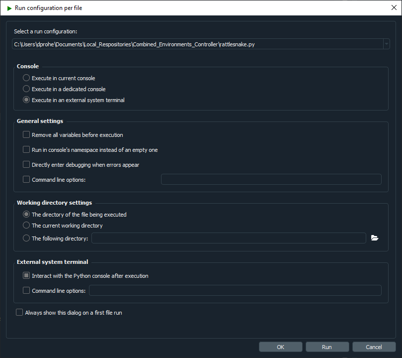
Figure 2-1. Spyder run configuration showing execution in an external system terminal as well as allowing interaction with the Python console after execution.2.3. Computational Requirements
Rattlesnake is a process-heavy software; it spawns processes for each environment, as well as for various portions of the controller that should operate in parallel. In general, the core controller utilizes 2-3 full processes. Various environments will also utilize multiple processes; for example, the MIMO Random Vibration uses 3 main processes to compute spectral quantities (FRFs, CPSDs, etc.), perform control calculations, and generate time histories simultaneously. If running virtual control, keep in mind that acquisition processes will be more fully subscribed due to the need to integrate the equations of motion rather than just read data off the data acquisition hardware.
While the exact computational requirements will depend on the channel count of the test and size of the control computations, the authors have had success using a 6-core processor with 32 GB RAM for multi-environment control approximately 20 control channels and 4 outputs. For a 200 acquisition channel test with 50 control channels and 8 outputs, the authors needed to upgrade to a 16 core, 32 GB RAM computer.
2.4. Obtaining Support
Rattlesnake was developed by a small team as a research tool, and as such will not be as polished as commercial vibration software. Therefore, it should be expected that bugs and errors will occur from time to time. If a bug occurs, please report it by creating a new issue in the GitHub issues board. This will notify the development team of the issue and they can work to solve it. If users have a feature request, these can also be submitted to the GitHub issues board.
The issue tracker provides templates for Bugs, Feature Requests, and Questions. The more thoroughly that these can be filled out, the greater the chance that the development team can solve the issue. For bug reports, files can also be attached to the issue, so the users can include the Rattlesnake.log file that is generated for each run of the Rattlesnake, as well as any screenshot of error messages that get shown in dialog boxes or the command window. The question template can be used for basic support questions, which will be answered by the developers as their time permits. Users should certainly consult this User's Manual and the Rattlesnake Source Code first to ensure their question is not covered by it.
3. Using Rattlesnake
This chapter will describe how to use Rattlesnake through its graphical user interface (GUI). Rattlesnake is capable of running several different types of control, therefore the GUI may look different for different tests. In general, the GUI consists of a tabbed interface across the top of the main window, and users must complete each tab before proceeding to the next. The tabs that exist in a given test will depend on which control type is being run. For example, in a combined environments test (see Chapter 16 Combined Environments) such as the one shown in Figure 3-1, there is a Test Profile tab that allows the user to define a testing timeline. Additionally, environments such as the MIMO Random Vibration environment (see Chapter 12 Multiple Input/Multiple Ouput Random Vibration) require a system identification phase where the controller identifies relationships between the output signals and the control degrees of freedom. Therefore, tests using the MIMO Random Vibration environment will also have a System Identification and Test Predictions tab. Figure 3-2, on the other hand, shows the GUI for a test that only utilizes the Time History environment (see Chapter 14 Time History Generatory) so these optional tabs are not displayed.
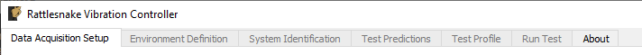
Figure 3-1. Rattlesnake GUI tabs when running a combined environments test with an environment that requires a system identification.
Users of Rattlesnake must be aware that depending on their test configuration, their GUI may not appear identical to images shown in this User's Manual. Additionally, users should be aware that the GUI library used by this software will inherit stylistic features from the operating system. There may therefore be cosmetic differences between the images of the GUI shown in this document and the GUI seen by the user. All images in this document were created using Microsoft Windows 10 or Windows 11 operating systems, so users with Mac or Linux operating systems will note a difference in GUI appearance.
Note that the Rattlesnake enforces an order to operations when defining a particular test by enabling and disabling tabs in the GUI. Initially, only the first tab will be enabled. As the users complete each tab, the next tab will become available. In Figures 3-1 and 3-2, it can be seen that only the initial tab is enabled, and subsequent tabs are disabled.
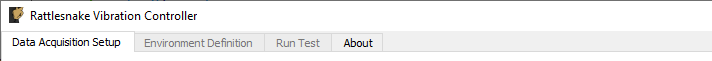
Figure 3-2. Rattlesnake GUI tabs when running a single environment with no system identification phase.
3.1. Environment Selection
When Rattlesnake is opened, the first GUI window that the user will see allows the user to select the environment that they will run (Figure 3-3.). Users can select a single environment, or alternatively select a combined environments test (see Section 16 Combined Environments). The selection made in this dialog box will determine which tabs are set up in the main GUI.
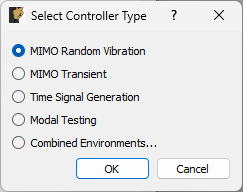
Figure 3-3. Initial Rattlesnake dialog to select the type of control that will be run.
3.2. Global Data Acquisition Settings
The Data Acquisition Setup tab of the Rattlesnake GUI specifies the global test parameters that the controller will use. Parameters are determined to be global when they affect all environments or the controller itself. The three main sections of this portion of the interface are the Channel Table, Environment Table, and Global Data Acquisition Parameters. Figure 3-4 shows this.
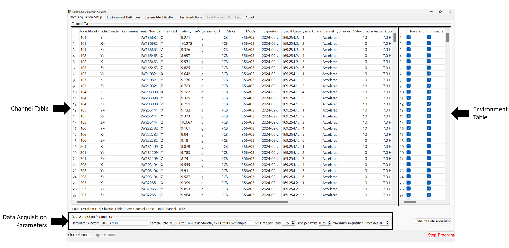
Figure 3-4. Data Acqisition Setup tab in the Rattlesnake Controller where the Channel Table, Environment Table, and Data Acquisition Parameters are specified.
3.2.1. Channel Table
The channel table specifies how the instrument channels in a given test are connected to the data acquisition hardware, as well as how the data read from those channels are used by the software.
In general, for a given test there will be a set of excitation devices that use the output signals from Rattlesnake as well as instrumentation to record the test article's responses to those exciters. Rattlesnake requires each instrument (or each channel on each instrument for multi-axial instruments) as well as each excitation device to have a row in the channel table. This is perhaps contrary to other control software where only the response channels need to be set up in the channel table. However, to maintain the flexibility to run multiple types of hardware devices, some of which having limitations to their triggering capabilities, Rattlesnake must read in the signal from its output directly in order to be able to synchronize its outputs and the responses to those outputs. Therefore, for all Rattlesnake test setups, the output signal should be split using a tee to the exciter and the corresponding input channel. Because of this requirement, one should keep in mind that the number of acquisition channels required on the hardware device for a given test is actually the number of responses plus the number of outputs. Figure 3-5 shows a schematic of a four acquisition channel, two output channel LAN-XI module set up for use with Rattlesnake.
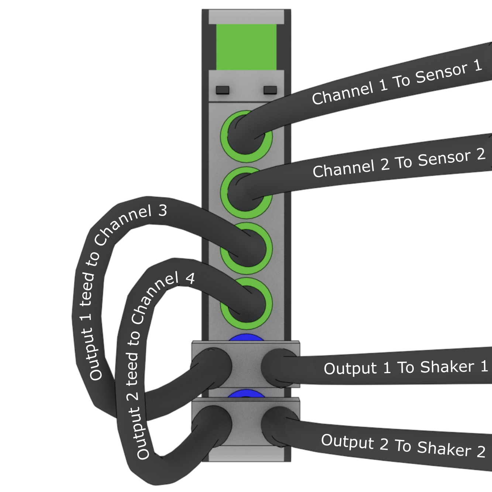
Figure 3-5. Output channels teed to acquisition channels so they can be read by the controller.
The required data input into the channel table varies with the physical or virtual hardware used for the test. For device-specific channel table requirements, see the appropriate section of Part II. In general, the entries to the channel table are as follows:
- Node Number Determines the instrumentation position on the test article. While not used directly by the controller except to label plots, it is important for book-keeping and test documentation. The node number will generally correspond to a node in a test geometry or FEM.
- Node Direction Determines the instrumentation direction on the test article at the position specified by the Node Number. Again, this is not used directly by the controller except to label plots, but it is important for book-keeping. The Node Direction will generally correspond to the node's local coordinate system if one exists in the test geometry.
- Comment Provides space for additional information about a channel that may not be captured by the Node Number and Node Direction.
- Serial Number The serial number of the instrument used for the given channel. This field is not used by the controller but will be stored with the test data and is important for data traceability to know which instruments were used to measure which channels.
- Triax DoF The degree of freedom on a given instrument corresponding to the given channel. This is primarily used to distinguish between the three axes of a triaxial accelerometer, but has the potential to be used for other multi-axis instrumentation types such as strain gauge rosettes.
- Sensitivity The sensitivity of the instrument in millivolts per Engineering Unit. This is used to transform the acquired data from a raw voltage to a engineering quantity such as acceleration or force.
- Engineering Unit The unit in which the measured signal for the given instrument will be reported. Certain hardware will limit the units that can be specified: see Part II for more information.
- Make The name of the instrument's manufacturer, used for data traceability.
- Model The product name or model number of the instrument, used for data traceability.
- Expiration The expiration date of the instrument's calibration certificate. Note that this is only for data traceability; no checking of this date with the current data to ensure a valid calibration is performed by the software.
- Physical Device The reference to a physical device attached to the computer. The entries in this field will be specific to the acquisition hardware being used for a given test. For virtual control, this column must be filled to specify that a given channel is active. See Part II for more information.
- Physical Channel The reference to a channel on a physical device attached to the computer. The entries in this column will be specific to the acquisition hardware being used for a given test. See Part II for more information.
- Channel Type The type of the channel being used for a given test, such as Acceleration, Force, or Voltage. The allowable entries in this column will be specific to the acquisition hardware being used for a given test. See Part II for more information.
- Minimum Value (V) The minimum voltage that the data acquisition system can handle during a test. This is used to set the range on the data acquisition system. For hardware devices with symmetric ranges (e.g. 10V), this column can be left blank.
- Maximum Value (V)] The maximum voltage that the data acquisition system can handle during a test. This is used to set the range on the data acquisition system. For hardware devices with symmetric ranges (e.g. 10V), this column is used to set the maximum and minimum voltage values.
- Coupling The coupling used by the data acquisition system. This may include filtering in addition to AC/DC coupling, which is dependent on the hardware being used for a given test. See Part II for more information.
- Excitation Source Used to specify the signal conditioning that is required by the instrument. This column is generally where the constant current line drive (CCLD)/integrated electronics piezoelectric (IEPE)/integrated circuit piezoelectric (ICP) is specified for a given hardware device. See Part II for more information.
- Current Excitation (A) Used to specify the excitation current sent to the device for signal conditioning. Depending on whether the device has a fixed or variable excitation current, this field may be left empty. This can also be left empty if no signal conditioning is provided by the data acquisition system. See Part II for more information.
- Feedback Device For output channels, this is the reference to the output or excitation device that is being fed back into the current channel's Physical device. If the current channel is not an output channel, it should be left empty. A populated Feedback Device column tells the controller that the given channel is an output channel.
- Feedback Channel For output channels, this is the reference to the output channel on the output or excitation device that is being fed back into the current channel's Physical Device. As an example using generic device and channel names, if
Channel 2onGenerator 1is teed off toChannel 3onAcquisition Card 2, the corresponding row in the channel table would haveAcquisition Card 2specified as the Physical Device,Channel 3specified as the Physical Channel,Generator 1specified as theFeedback DeviceandChannel 2specified as the feedback channel. - Warning Level A warning level can be implemented for each channel. The warning level is specified in the same units as the Engineering Unit column. When a channel hits the warning limit, it will be flagged as Yellow in the Channel Monitor (see Section 3.1). The warning level can be left blank if no warning is desired.
- Abort Level An abort level can be implemented for each channel. The abort level is specified in the same units as the Engineering Unit column. When a channel hits the abort limit, it will be flagged as Red in the Channel Monitor (see Section 3.1). The controller will also shut down if an abort level is reached. The abort level can be left blank if no abort is desired.
To limit the tediousness of inputting channel table information into the GUI by hand, the channel table can be loaded from an Excel spreadsheet or Comma-separated-value file. A channel table can be loaded by clicking the Load Channel Table button under the channel table, which will bring up a file selection dialog, enabling the user to select a file to load. For convenience, a template Excel spreadsheet is attached to this PDF: (TODO) \attachfile{attachments/channel_table_template.xlsx}. A template Excel file can also be generated by creating a test in Rattlesnake and saving the empty channel table by clicking the Save Channel Table button under the channel table. If a channel table is filled out in Rattlesnake's GUI, its contents will be saved to the file as well.
A complete test can be loaded by clicking the Load Test from File button. See Loading Rattlesnake Tests for more details.
3.2.2. Environment Table
For combined environments tests, an environment table is also provided to the right of the standard Channel Table. This table specifies which channels are used by which environments. A channel can be used for multiple environments, a single environment, or no environments. Channels used by no environments will still be measured and streamed to disk, but will not be sent to any environment for use in the respective control approaches. The environment table is also used to specify which excitation devices are used by which environment.
For single environment tests, the environment table is not visible, and the software assumes that all channels in the channel table are used by the single environment.
If importing a channel table from an Excel spreadsheet for a combined environments test, the Environment Table can be specified as the columns after the main Channel Table information (starting in Column X with one column for each environment) with the environment name specified in row 2 and an entry (e.g. an X or some other mark) in the row corresponding to a given channel if that channel is used for the given environment.
3.2.3. Data Acquisition Parameters
The final portion of Data Acquisition Setup tab specifies data acquisition parameters. These parameters may change depending on the hardware selected.
- Hardware Selector The physical or virtual hardware used for the test. See Part II for hardware specific details of the controller. For some devices, a file selector window will appear will appear when the device is selected, as that device needs more information to operate. This is primarily the case for virtual hardware where some model of the test article must be loaded. This is also used when a specific hardware device needs to access external functionality in a library such as a
dllfile. - Sample Rate The sample rate of all hardware devices used for the test. Some devices will have arbitrary sample rates, and some devices have fixed sample rates, so the options available will depend on the acquisition hardware being used.
- Time per Read The amount of data that the acquisition system will acquire with each read from the hardware. By reading data in chunks, hardware input/output operations with relatively large overhead can be limited, and the buffer gives the controller time to catch up if e.g. the operating system decides to start a computationally intensive task in the background of the computer. Note that specifying large numbers for this quantity (e.g. 10) will reduce the responsiveness of the controller, because the controller will potentially not receive the acquired data until 10 seconds after it was acquired. Note also that this does not need to correspond to the Samples per Analysis Frame or any other signal processing parameter used by an environment. Each environment should be buffered such that it creates appropriately sized analysis windows from the differently sized acquisition chunks.
- Time per Write The amount of data that the output system will write with each write to the hardware. By writing data in chunks, hardware input/output operations with relatively large overhead can be limited, and the buffer gives the control time to catch up if e.g. the operating system decides to start a computationally intensive task in the background of the computer. Note that this output is also buffered, so it does not need to be equal to the size of the data that will be created during each control loop of the controller.
- Maximum Acquisition Processes For specific hardware devices with large channel count tests, it can be difficult to pull down large quantities of data fast enough for the controller to keep up using a single process. This option allows the user to specify how many processes can be given to the acquisition system to be used to stream data off the hardware. Note that too many processes will bog down the computer, and too few will result in the controller falling behind. Generally about 20-40 channels per processor is sufficient, but this will depend on the sample rate. For higher sample rates, more processors may be needed.
- Integration Oversample For synthetic hardware devices that integrate equations of motion, an integration oversample factor can be specified. This factor will be applied to the sample rate to determine the time step for the integration. Generally a factor of 10 is sufficient for reasonably accurate data without significant computational expense.
3.2.4. Initialize Data Acquisition
With the Data Acquisition Settings specified in the GUI, the Data Acquisition can be initialized by pressing the Initialize Data Acquisition button. At this point, the controller will go through and create the programming interfaces to the hardware device, specify the sampling parameters, and create the channels on the devices. The software will then proceed to the next tab.
Figure 3-6 shows a completed Data Acquisition Setup tab with three response channels and one output channel for a test with two environments A and B. The first response and output channels are used by both environments, while the second response channel is used only by environment A and the third response channel is used only by environment B.
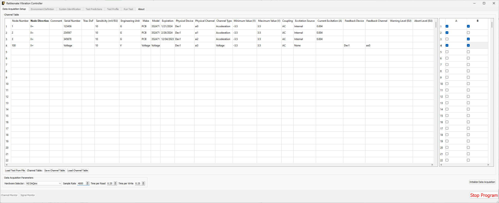
Figure 3-6. Example of a completed Data Acquisition Setup tab with three response channels and one output channel.
3.3. Environment Definition
The Environment Definition tab is the second tab in the Rattlesnake software. It is in this tab that the various environments are defined. The main tab will have one sub-tab for each environment, as shown in Figure 3-7.
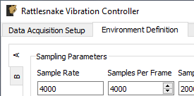
Figure 3-7. Sub-tabs for environments A and B in the Environment Definition tab.
Different environment types will have different parameters that can be set. See Part III for a description of each environment type in Rattlesnake and the parameters that define it.
When all environments are defined, the Initialize Environments button can be pressed to proceed to the next portion of the controller.
3.4. System Identification
With the environments defined, the controller proceeds to the System Identification tab if required by any environment, shown in Figure 3-8. During this phase of the controller, the controller will develop relationships between the excitation signals and the responses of the test article to those excitation signals. It will also make a measurement of the noise floor of the test.
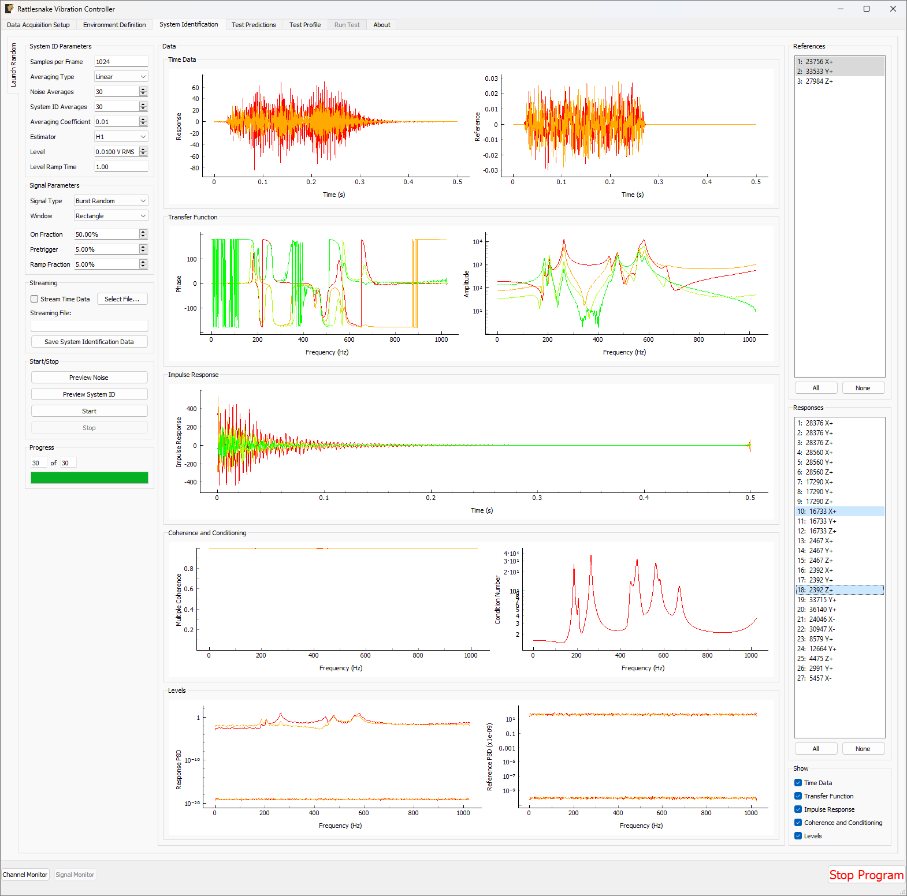
Figure 3-8. System identification tab showing various signals and spectral quantities that can be used to evaluate the test.
Not all environment types will require a system identification. For environments that simply stream output data, a system identification will generally not be required. However for any environment that aims to produce an output that creates some response on the test article, a system identification will be required to understand the relationships between the excitation signals and the response signals.
There will be one sub-tab for each environment that requires a System Identification. System identification must be run for each sub-tab before the test can be run. When system identification is performed, the software will first perform a noise floor measurement, where all channels are recorded, but no excitation signal is provided. After the noise floor calculation completes, the system identification will begin.
The System Identification tab has been significantly overhauled since the previous version of controller. The system identification now has a number of dedicated parameters on its tab that the user can select. These are:
- Samples per Frame The number of samples used in each measurement frame.
- Averaging Type The type of averaging used to compute the spectral quantities. Linear averaging weights each measurement frame equally. Exponential averaging weights more recent frames more heavily.
- Noise Averages The number of averages used in the noise characterization.
- System ID Averages The number of averages used in the System Identification characterization.
- Averaging Coefficient If Exponential Averaging is used, this is the weighting of the most recent frame compared to the weighting of the previous frames. If the averaging coefficient is , then the most recent frame will be weighted , the frame before that will be weighted , the frame before that will be , etc.
- Estimator The estimator used to compute transfer functions between voltage signals and responses.
- Level The RMS voltage level used for the system identification
- Level Ramp Time The startup and shutdown time of the system identification.
The new system identification tab also gives the option to select the signal to use for system identification.
- Signal Type The type of signal that will be used for System Identification. This can be Random, Burst Random, Chirp, or Pseudorandom. Random is the most flexible, but requires a Hann window which can distort data. Burst Random does not require a window, but the response signal must decay within the measurement frame. Chirp and Pseudorandom do not require windows, and do not need to decay, but they are only useful for environments with a single excitation device.
- Window The window function used for the system identification signal
- Overlap The overlap percentage between measurement frames used in System Identification
- On Fraction The fraction of the frame that the Burst Random signal is active for
- Pretrigger The fraction of the frame before the Burst Random signal starts
- Ramp Fraction The fraction of the Burst Random On Fraction that is used to ramp up and ramp down.
The system identification phase can stream time data to disk by selecting a streaming file and clicking the Stream Time Data checkbox. If streaming time data, the noise measurement will be saved to the variable name time_data and the system identification measurement will be saved to the variable name time_data_1 (TODO: see Section \ref{sec:using_rattlesnake_output_files} for more information on the structure of this file). The spectral data from the system identification can be saved to disk by clicking the Save System Identification Data button and selecting the file.
To run the system identification, there are buttons to Preview the Noise or System ID characterizations. When ready, the Start button can be clicked. It will run a Noise Characterization for the specified number of Noise Averages, and then subsequently run the System Identification characterization for the specified number of System ID Averages. If the user wishes to run either the noise or system identification phases continuously, they can click the Preview Noise or Preview System ID buttons.
Data will be plotted as the system identification proceeds. The signals to visualize can be selected by clicking one or more of the References or Responses channels on the right side of the screen. In the bottom right corner, there are options to show or hide various quantities of interest. The System Identification tab can show the following:
- Time Data Raw Time Data as it is streamed from the data acquisition system. Only data used in spectral computations is shown, so the users shouldn't see any data that is ramping up or down as if the controller is starting or stopping.
- Transfer Function These are the transfer functions between the References (e.g. voltage signals) and the Responses (e.g. Accelerations or Forces). The controller will use these transfer functions to develop excitation signals that will be played to the shaker to achieve a desired response.
- Impulse Response The impulse response of the system can be visualized. This can be helpful to debug issues with transient control.
- Coherence and Conditioning Coherence will be displayed so the user can judge how satisfactory the input/output relationships that are developed are. If coherence is poor, it could suggest that the controller won't be able to control the structure properly. The condition number of the Transfer Function Matrix is also displayed. This can be useful to determine what level of regularization a control law might need to implement.
- Levels The autopower spectral density of each signal will be displayed both for the system identification as well as for the noise characterization. This can help identify if the system identification is high enough out of the noise floor.
3.5. Test Predictions
Once the system identification phase completes, the controller will compute a test prediction for each environment where system identification was completed. This prediction will be based on the measured transfer functions between output signals and measured responses, as well as the environment parameters specified on the Environment Definition tab. Predictions will be made both for outputs required as well as response accuracy. These predictions will be displayed on the Test Predictions tab.
3.6. Test Profiles
The Test Profile tab gives the user the ability to set up a test timeline for complex combined environments tests. The user can add a list of events that will be executed at certain times during the test. The tab will also display a graphical representation of the test timeline.
Events can be added or removed from the test timeline by clicking the Add Event or Remove Event buttons. Users can also load a series of events from an Excel spreadsheet.
For each event, the following parameters are defined:
- Timestamp (s) The time in seconds after the timeline has started that the event will be executed.
- Environment The environment in which the event will occur.
- Operation The operation that will occur to the event. Each environment defines its own set of operations that can be executed through the test profile interface.
- Data Any additional data that the operation requires. For example, if a ``Set Test Level'' event is chosen, the Data field should specify the value that the test level is set to.
Figure 3-9 shows an example of a test profile that ramps up the test level of environment A from -6 to 0 dB, and then subsequently starts environment B.
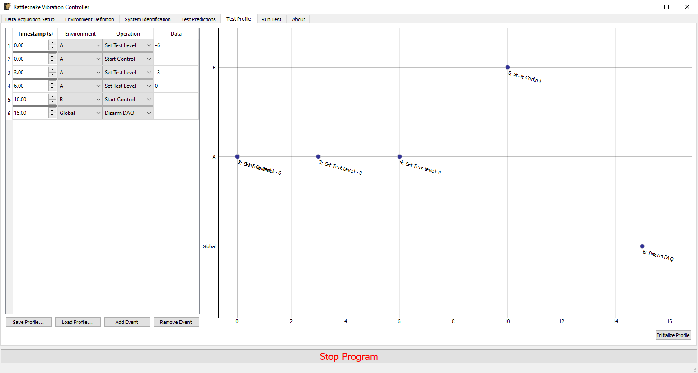
Figure 3-9. Example test profile showing a ramp up of test level for environment A and subsequently starting environment B.
3.7. Run Test
The Run Test tab is where Rattlesnake finally runs the test. This tab again has sub-tabs for the different environments in the test, however these sub-tabs will not be enabled until the data acquisition system is armed.
Rattlesnake gives the user many options to save data to the disk through a set of Radio buttons at the top of this tab. These options are:
- No Streaming Do not save data to disk, just run the test.
- Start Streaming from Test Profile Instruction Selecting this option allows data to be saved to disk after a "Global Start Streaming" event from the test profile is executed. This allows the user to fine tune at which point in the test data is acquired.
- Start Streaming at
Target Test Level Selecting this option starts streaming data when the selected environment hits its target test level. This can be useful if, for example in a random environment, the user wishes to start at a low level and slowly creep up to the target test level. If all data is saved, it might require a large amount of file space, so instead only the data at the test level of interest can be saved. - Start Streaming Immediately Saves all data from the time the first environment starts until the data acquisition system is disarmed.
- Manually Start/Stop Streaming Allows the user to start and stop the measurement periodically throughout the test. A
Start Streamingbutton will appear when this option is selected. When clicked, the button will change toStop Streaming. Multiple data streams can be saved in a given test. These will be stored to separate variables in the output NetCDF4 file (TODO: see Section \ref{sec:using_rattlesnake_output_files}).
When streaming data, it is important to note that the software does not stop streaming until the data acquisition system is disarmed by pressing the Disarm Data Acquisition button. This is because for a combined-environments test, the environments may have down-time between them where no environment is running, and that data should still be saved.
The Run Test tab contains global Arm Data Acquisition and Disarm Data Acquisition buttons that start and stop the data acquisition system. When the data acquisition system is armed, the user can no longer change streaming options, and the sub-tabs for each environment are enabled. The user can then start or stop each environment manually using the Start Environment or Stop Environment buttons on each environment's sub-tab. The sub-tab for each environment is described more thoroughly in Part III.
Alternatively, the user can start or stop the test profile by clicking on the Start Profile or Stop Profile buttons respectively. The profile capability also includes the option to switch the active environment sub-tab when an event is executed so the user can see the results. Note that the profile options only appear when a profile has been defined on the Test Profile tab.
Figure 3-10 shows an example Run Test tab with test profile events.
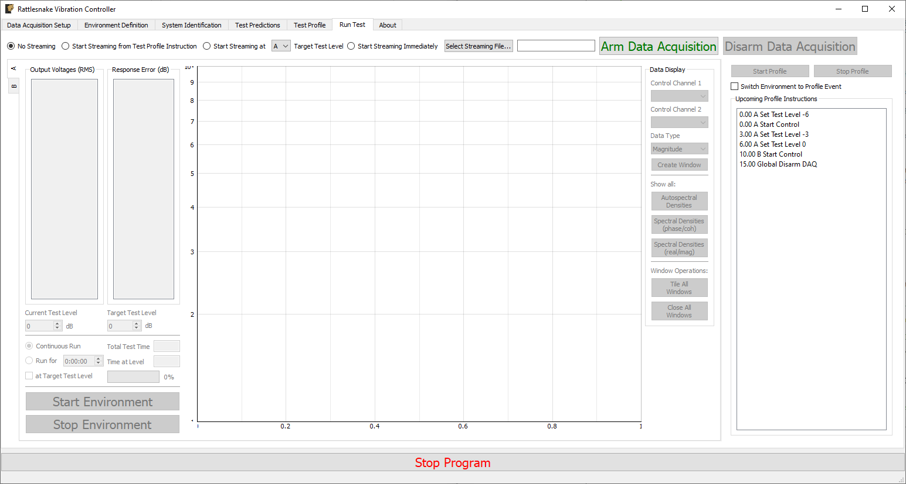
Figure 3-10. Run Test Tab.
3.8. Rattlesnake Output Files
After data is acquired, the user may wish to analyze or plot the data acquired for a given test report. Rattlesnake stores data in a self-documenting netCDF file {{#cite unidata2019_netcdf}}, which can be read by multiple platforms. The output file is described as self-documenting because it contains all parameters necessary to reconstruct a given test using the Rattlesnake controller. Any parameter that is set by the user in the GUI is stored to the netCDF file.
A full description of the netCDF file format is out of this document's scope, but the important points are briefly described here. NetCDF files have a number of data structures. Variables are multi-dimensional arrays of data. Dimensions describe the axes of the variable arrays. Attributes are used to store small data such as scalars or 1D arrays. NetCDF files can be separated into different groups, and each group can have its own variables, dimensions, and attributes.
The Rattlesnake output files contain the following data members:
3.8.1. NetCDF Dimensions
response_channelsThe number of response channels in a given testoutput_channelsThe number of output channels in a given testtime_samplesThe number of time samples measured in the file, this dimension can expand as more data is acquired.time_samples_XIf manual streaming is used and streaming is started multiple times, each subsequent stream will have thetime_samplesname with an underscore and appended number (e.g.time_samples_1,time_samples_2)num_environmentsThe total number of environments in the test
3.8.2. NetCDF Attributes
sample_rateThe global sample rate of the data acquisition systemtime_per_writeThe amount of data put to the output hardware per write operation, in secondstime_to_readThe amount of data read from the acquisition hardware per read operation, in secondshardwareThe hardware index used for the test.- 0 -- National Instruments NI-DAQmx
- 1 -- HBK LAN-XI Open API
- 2 -- Data Physics Quattro
- 3 -- Data Physics 900 Series
- 4 -- Virtual Control defined by Exodus Modal Solution
- 5 -- Virtual Control defined by State Space Matrices
- 6 -- Virtual Control defined with a SDynPy System
hardware_fileThe path to the file used to define the Virtual test article, or the path to the external code library used by the data acquisition hardware. Otherwise, it will beNonemaximum_acquisition_processesThe maximum number of processes that the LAN-XI hardware can use for acquisitionoutput_oversampleThe oversample used either due to sample rate restrictions on the data acquisition system, or due to oversampling the integration
3.8.3. NetCDF Variables
time_dataThe measured data from the test. Type: 64-bit float; Dimensions:response_channelsbytime_samplestime_data_XIf manual streaming is used and streaming is started multiple times, each subsequent stream will have thetime_dataname with an underscore and appended number (e.g.time_data_1,time_data_2)environment_namesThe name of each environment. Type: string; Dimensions:num_environmentsenvironment_active_channelsThe channels active in each environment. 1 if active, 0 if not. Type: 8-bit int; Dimensions:response_channels$\times$num_environments
3.8.4. Channels Group
The netCDF files from Rattlesnake store all channel information into a separate group called channels. Inside the channels group, there is a variable for each column of the channel table. See Section Channel Table for more complete descriptions of each channel variable.
/channels/node_numberThe node number of each channel. Type: str; Dimensions:response_channels/channels/node_directionThe instrument direction of each channel. Type: str; Dimensions:response_channels/channels/commentThe commend for each channel. Type: str; Dimensions:response_channels/channels/serial_numberThe serial number of the instrument for each channel. Type: str; Dimensions:response_channels/channels/triax_dofThe sensor degree of freedom for each channel. Type: str; Dimensions:response_channels/channels/sensitivityThe sensitivity of the instrument for each channel. Type: str; Dimensions:response_channels/channels/unitThe engineering unit of the instrument for each channel. Type: str; Dimensions:response_channels/channels/makeThe manufacturer of the instrument for each channel. Type: str; Dimensions:response_channels/channels/modelThe model number or product name of the instrument for each channel. Type: str; Dimensions:response_channels/channels/expirationThe expiration date of the instrument's calibration for each channel. Type: str; Dimensions:response_channels/channels/physical_deviceThe physical device that the instrument is connected to for each channel. Type: str; Dimensions:response_channels/channels/physical_channelThe channel in the physical device that the instrument is attached to for each channel. Type: str; Dimensions:response_channels/channels/channel_typeThe type of quantity that is measured by the channel. Type: str; Dimensions:response_channels/channels/minimum_valueThe minimum voltage that the channel can accept. Type: str; Dimensions:response_channels/channels/maximum_valueThe maximum voltage that the channel can accept. Type: str; Dimensions:response_channels/channels/couplingThe coupling type used by each channel (AC/DC/filter/etc.). Type: str; Dimensions:response_channels/channels/excitation_sourceThe excitation source for each channel, used to specify CCLD/ICP/IEPE. Type: str; Dimensions:response_channels/channels/excitationThe excitation current value used in the signal conditioning for each channel. Type: str; Dimensions:response_channels/channels/feedback_deviceThe device that the channel's generator originates from if the channel is an output channel. Type: str; Dimensions:response_channels/channels/feedback_channelThe channel that the channel's generator originates from if the channel is an output channel. Type: str; Dimensions:response_channels/channels/warning_levelThe warning level of each channel. Type: str; Dimensions:response_channels/channels/abort_levelThe abort level of each channel. Type: str; Dimensions:response_channels
3.8.5. Environment Groups
Environment-specific attributes, dimensions, and variables are also stored within a group corresponding to each environment. For example, in the case where there were two environments "A" and "B", parameters specific to environment "A" would be stored within the group "A" in the netCDF file, and similarly for "B". See Part III. Rattlesnake Environments for more information on environment-specific parameters.
3.8.6. Reading Rattlesnake Output Files using Python
To read data from a netCDF using Python, it is recommended to use the netCDF4 Python package. This library is a dependency of Rattlesnake, so if the user is not running Rattlesnake via an executable, this package should already be installed in the user's Python ecosystem.
netCDF4 provides a sleek Python interface into the data of a netCDF4 file. This section will assume the command import netCDF4 as nc4 was used to import the package, so nc4 is used as a shorter alias.
A netCDF4 dataset can be opened using the following command:
dataset = nc4.Dataset('path/to/netcdf4/file.nc4')
after which all data can be accessed through the dataset object.
Attribute names can be queried using the dataset.ncattrs() function and the attribute values can be accessed directly from the dataset object using that name.
>>> dataset.ncattrs()
['sample_rate',
'samples_per_write',
'samples_per_read',
'hardware',
'hardware_file']
>>> dataset.sample_rate
2048
Dimensions can be accessed using the dataset.dimensions property, which gives a Python dict where the keys are the dimension names and the values are references to the dimension. The size of the dimension can be accessed using the size parameter in each dimension object.
>>> dataset.dimensions
{'response_channels': <class 'netCDF4._netCDF4.Dimension'>: name = 'response_channels', size = 30,
'output_channels': <class 'netCDF4._netCDF4.Dimension'>: name = 'output_channels', size = 3,
'time_samples': <class 'netCDF4._netCDF4.Dimension'> (unlimited): name = 'time_samples', size = 31745,
'num_environments': <class 'netCDF4._netCDF4.Dimension'>: name = 'num_environments', size = 2}
>>> dataset.dimensions['response_channels'].size
30
Variables can be accessed similarly to dimensions using the dataset.variables property. Variables have many properties that may be interesting to the users, including the netCDF dimensions that were used to size the variable (accessible with the dimensions parameter) or the actual shape of the array (accessible with the shape parameter). The data inside the dimension can be accessed by slicing or indexing the array, or simply passing it to a numpy array. Note that slicing or indexing the variable returns the data in a numpy masked array which allows data to potentially to be missing from the array. Rattlesnake does not use the missing data capabilities of the netCDF file, so data can safely be transformed directly to a regular numpy array.
>>> dataset.variables
{'time_data': <class 'netCDF4._netCDF4.Variable'>
float64 time_data(response_channels, time_samples)
unlimited dimensions: time_samples
current shape = (30, 31745)
filling on, default _FillValue of 9.969209968386869e+36 used,
'environment_names': <class 'netCDF4._netCDF4.Variable'>
vlen environment_names(num_environments)
vlen data type: <class 'str'>
unlimited dimensions:
current shape = (2,),
'environment_active_channels': <class 'netCDF4._netCDF4.Variable'>
int8 environment_active_channels(response_channels, num_environments)
unlimited dimensions:
current shape = (30, 2)
filling on, default _FillValue of -127 ignored}
# Get the dimensions used by the variable
>>> dataset.variables['time_data'].dimensions
('response_channels', 'time_samples')
# Get the shape of the variable
>>> dataset.variables['time_data'].shape
(30, 31745)
# Access via slice returns a masked array
>>> dataset.variables['time_data'][0,0]
masked_array(data=-0.00312098,
mask=False,
fill_value=1e+20)
# Can pass directly to a numpy array to get the full variable data
>>> np.array(dataset.variables['time_data'])
array([[-3.12098493e-03, 4.26820006e-03, 3.77395182e-03, ...,
2.00690958e-01, 3.38505511e-01, 0.00000000e+00],
[-6.10438702e-03, 1.50628999e-02, -1.50619535e-02, ...,
2.67639515e-01, 5.50047023e-01, 0.00000000e+00],
[-3.42732089e-03, 7.76593927e-03, -2.66239267e-03, ...,
2.05434816e-01, 3.21815820e-01, 0.00000000e+00],
...,
[ 3.71743658e-06, -8.77497995e-08, -8.80558595e-06, ...,
-5.26559214e-06, 0.00000000e+00, 0.00000000e+00],
[-1.32020650e-05, 2.74453772e-05, -2.01551409e-05, ...,
-1.02501347e-05, 0.00000000e+00, 0.00000000e+00],
[-5.96816619e-07, -1.47868461e-05, -5.24157875e-05, ...,
-1.61722666e-05, 0.00000000e+00, 0.00000000e+00]])
Group names in the netCDF dataset can be queried using dataset.groups, which returns a dictionary similar to the dimensions and variables. Groups can also be accessed by indexing the dataset directly with the group name. A group object can be treated exactly the same as the root-level dataset, and will have its own set of attributes, dimensions, and variables.
>>> dataset['channels'].variables['node_number']
<class 'netCDF4._netCDF4.Variable'>
vlen control(response_channels)
vlen data type: <class 'str'>
path = /channels
unlimited dimensions:
current shape = (30,)
3.8.7. Reading Rattlesnake Output Files using Matlab
Matlab can also be used to read netCDF files from Rattlesnake. The Matlab ncdisp function can be used to quickly determine which parameters are in a file.
>>> ncdisp('path/to/netcdf/file.nc4')
Source:
path/to/netcdf/file.nc4
Format:
netcdf4
Global Attributes:
sample_rate = 2048
samples_per_write = 512
samples_per_read = 512
hardware = 2
hardware_file = 'path/to/hardware/file.exo'
Dimensions:
response_channels = 30
output_channels = 3
time_samples = 31745 (UNLIMITED)
num_environments = 2
Variables:
time_data
Size: 31745x30
Dimensions: time_samples,response_channels
Datatype: double
environment_names
Size: 2x1
Dimensions: num_environments
Datatype: UNSUPPORTED DATATYPE
environment_active_channels
Size: 2x30
Dimensions: num_environments,response_channels
Datatype: int8
Groups:
/channels/
Variables:
node_number
Size: 30x1
Dimensions: /response_channels
Datatype: UNSUPPORTED DATATYPE
.
.
.
Attributes, dimensions, and other metadata can be read into Matlab using the ncinfo function. Variables information must be read using the \inlineCode{ncread} function.
>>> finfo = ncinfo('path/to/netcdf/file.nc4')
finfo =
struct with fields:
Filename: 'C:\Users\dprohe\Documents\Local_Respositories\Combined_Environments_Controller\test_data\BARC_Exodus_Test\barc_combined.nc4'
Name: '/'
Dimensions: [1x4 struct]
Variables: [1x3 struct]
Attributes: [1x5 struct]
Groups: [1x3 struct]
Format: 'netcdf4'
>>> finfo.Dimensions(1)
ans =
struct with fields:
Name: 'response_channels'
Length: 30
Unlimited: 0
>>> time_data = ncread('path/to/netcdf/file.nc4','time_data')
One issue with the Matlab interface is that string variables are unsupported. This means that the majority of the channel information cannot be read through the Matlab netCDF interface. However, they can be read using the lower level h5read function.
>>> ncread(file,'channels/node_number')
Error using netcdf.getVar (line 137)
12 is not a recognized netCDF datatype.
Error in internal.matlab.imagesci.nc/read (line 605)
data = netcdf.getVar(gid, varid);
Error in ncread (line 66)
vardata = ncObj.read(varName, varargin{:});
>>> h5read(file,'/channels/node_number')
ans =
30x1 cell array
3.9. Loading Rattlesnake Tests
It can be tedious to set up a test from scratch each time a test is to be run, so Rattlesnake offers two ways to load test settings from files.
On the Data Acquisition Setup page, selecting the Load Test From File button allows the user to load in a netCDF data file that was output from Rattlesnake. As all the test metadata is stored to this file, Rattlesnake can read the file and set itself up accordingly to reproduce a given test. Note that difficulties may arise using this approach if parameters specified by file paths are no longer valid. For example, if the control law is read from a given file on one computer, but the file is in a different place on a separate computer, Rattlesnake will not be able to find the file.
The second way to load in an entire test is by using the Test Profile functionality in the Combined Environments mode. While this capability was designed to make it easier to load in complex multi-environment test setups, it can be used just as effectively for single environment tests. See Chapter 16 Combined Environments for more information.
3.10. Channel Monitor
To aid with understanding the test levels and headroom available for the sensors in the test, a Channel Monitor is available where the levels are shown for each channel. The channel monitor is displayed by clicking on the Channel Monitor button on the lower left side of the GUI. The display shows both an instantaneous level (green) as well as a running historical maximum (blue). If a channel reaches the Warning or Abort level, it will be flagged with a yellow or red tint, respectively. These warnings "latch"; once the level is reached, it will stay highlighted in the channel monitor until the Clear Alerts button is clicked. Figure 3.11 shows an example channel monitor.
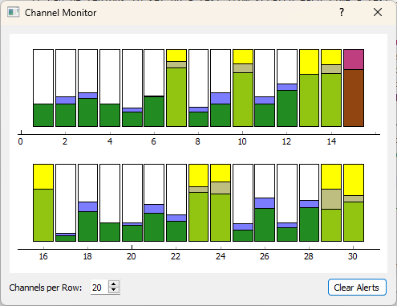
Figure 3-11. View of the Channel Monitor dialog box showing several channels that have reached the "warning" level (highlighted yellow) and one channel that has reached the "abort" level (highlighted red).
The aspect ratio of the Channel Monitor can be customized to different sizes modifying the Channels per Row.
Part II. Rattlesnake Hardware Devices
Designed for flexibility, Rattlesnake can be used with multiple hardware devices and even perform virtual control using a synthetic data acquisition system. This Part will cover the hardware-specific implementation details that must be considered when running Rattlesnake with each hardware device.
Rattlesnake is designed so there is minimal differences in software workflow when using different hardware devices. Nonetheless, there are some slight differences in how channels and devices must be specified, and these differences are primarily found on the Data Acquisition Setup tab in the Rattlesnake software.
The Chapters in this Part document the hardware devices that are able to be used by Rattlesnake, as well as the virtual devices that can be used to simulate control. Chapter 4 describes the implementation and utilization of NI-DAQmx devices. Chapter 5 describes the HBK LAN-XI hardware. Chapter 6 and Chapter 7 describe the Data Physics Quattro and 900-series hardware devices, respectively. Chapter 8, Chapter 9, and Chapter 10 describe virtual or synthetic hardware devices that are defined using state space matrices, eigensolution results stored in an exodus file, or a SDynPy System object, respectively.
If a user is interested in implementing a new hardware device, Chapter 11 describes some of the things to be aware of. Implementation of new hardware devices will require a good amount of knowledge of the Rattlesnake architecture.
4. NI-DAQmx Devices
Rattlesnake is able to run National Instruments devices that utilize the NI-DAQmx programming interface. See the NI-DAQmx Documentation for a list of supported devices for this programming interface. Note that users must have the proper drivers installed in order to communicate with their devices, though users need not have LabView or other NI software installed. See the instruction manual or online documentation for the specific device in use.
Drivers can be found here.
Appendix B shows a complete example problem using a NI data acquisition system.
4.1. Setting up the Channel Table for NI-DAQmx Device
This section lists the channel table requirements specific to NI-DAQmx.
NI-DAQmx channels are identified by a device name and a channel name. Device names vary depending on the type of device used. For example, USB devices may simply be called Dev#, where # is a device number. cDAQ devices might be called cDAQ#Mod# where the first # denotes the data acquisition system number and the second represents the module within the data acquisition system. PXI/PXIe chassis devices will be similarly named PXI#Slot# where the first # is the chassis number and the second is the card number on the chassis. In general, the names of NI-DAQmx devices that are attached to a given computer can be found using the National Instruments Measurement Automation Explorer (NI MAX).
Channel names for NI-DAQmx devices generally are called ai for analog input and ao for analog output. A four acquisition channel, one output device might have acquisition channels ai0, ai1, ai2, and ai3 and output channel ao0. Again, see the Measurement Automation Explorer to determine the channels that exist on each device.
The channel type of a given channel determines what parameters are used and required for that channel. Valid channel types are Acceleration, Force, or Voltage.
Acceleration channel types must have a sensitivity specified in mV/G in the channel table, as the only valid Engineering Unit for an acceleration channel is G.
Force channel types must also have a sensitivity specified. Valid units for a force channel are pounds (specified by lb, pound, pounds, lbf, lbs, or lbfs, case insensitive) or newtons (specified by n, newton, newtons, or ns, case insensitive).
Voltage channel types need not have a sensitivity or unit specified, as they will always be reported in volts. A best practice is to fill out these columns anyways with the correct values V for engineering unit and sensitivity of 1000 mV/V. Note that specifying a different sensitivity for a voltage channel WILL NOT result in the voltage being scaled. The NI-DAQmx implementation does not have the ability to scale voltage channels. Users should specify 1000 mV/V as the sensitivity. Note that if a sensitivity is not specified, the Warning and Abort limits may not be correctly computed, as they rely on sensitivity information to convert between a measured raw voltage and the correct sensitivity unit.
The Physical Device and Physical Channel (as well as Feedback Device and Feedback Channel for output channels) should correspond to the device and channel names in the Measurement Automation Explorer. For example, channel ai3 on device PXI1Slot4 would have Physical Device set to PXI1Slot4 and Physical Channel set to ai3.
Maximum and Minimum Values should be specified based on the levels expected for the given test, taking into account that they are not outside the range acceptable for the device.
The Coupling column in the channel table is not currently used by the NI-DAQmx system, rather the coupling is specified automatically by the channel type (Acceleration and Force are AC coupled, Voltage is DC coupled).
Excitation Source should be set to either Internal or None. If set to Internal, the device will generate the ICP/CCLD/IEPE signal conditioning required by the sensor. If set to None, no signal conditioning will be provided by the hardware device.
Current Excitation should typically be set to 0.004 A (4 mA) unless the sensor requires a different current to be provided. The Current Excitation value is only used if the Excitation Source is set to Internal. If set to None, no current is generated.
4.2. Hardware Parameters
Besides the sample rate, no additional hardware-specific parameters must be specified for NI hardware. Figure 4.1 shows the parameters for NI-DAQmx hardware devices.
WARNING: Some NI-DAQmx devices have discrete allowable sample rates, while others can have any sample rate that is desired up to some maximum value. Please refer to the documentation of your device to determine which sample rates are allowable for your device. The NI-DAQmx drivers, when provided an incompatible sample rate, often simply select the closest available rate or the next highest rate, which can result in data being acquired at a rate that is not equivalent to the rate selected in the software. Additionally, further issues can occur when the sample rate of an output device is not compatible with the sample rate of an acquisition device, meaning the output is being delivered at a different rate than it is being measured, resulting in inconsistent data. Currently Rattlesnake does not do very rigorous checks to determine if the specified sample rate is allowable, so it falls on the user to ensure that it is!
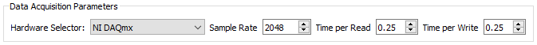
Figure 4-1. NI-DAQmx Data Acquisition Parameters
4.3. Implmentation Details
This section contains details on the NI-DAQmx implementation in Rattlesnake, which may be helpful for users when diagnosing issues that arise in the controller.
4.3.1. NI-DAQmx Tasks
NI-DAQmx hardware interfaces are defined within Tasks. The acquisition exists within one task. The output exists within one or more more separate tasks with one task per type of output card. This multi-task output enables, for example, two different types of output cards to be used in the same chassis.
4.3.2. Sampling Parameters
Both acquisition and output operate in continuous mode. This means that if the controller cannot output signals fast enough and the hardware runs out of samples to generate, the controller will throw an error and stop abruptly. A buffer size of three times the number of samples per write is specified in the source code which gives a cushion against the controller falling behind. The output will accept a set of samples into the output buffer whenever there is less than two writes worth of samples remaining in the buffer. The buffer size is computed by subtracting the total samples generated by the output task from the current write position in the output tasks buffer.
4.3.3. Starting the Hardware
When a measurement is started, the output is set up and started first. The output task uses a start trigger from an analog input task (/<physical_device_name>/ai/StartTrigger) as its trigger, so once it starts, it effectively waits for the acquisition to be set up and started. To determine which start trigger is used, it checks if the device is a cDAQ device. If the device is a cDAQ device, it uses the start trigger from the cDAQ chassis. If it is not a cDAQ device, it utilizes the start trigger from the first analog input channel. This configuration has been tested with both cDAQ and PXI devices. When the acquisition is started, its start trigger will trigger the output to start outputting signals simultaneously. Because the system tries to use the analog input start trigger for all outputs, users may have trouble daisy-chaining multiple chassis together if the trigger signal is not able to be passed between all of the chassis.
5. LAN-XI Devices
Rattlesnake is able to run HBK LAN-XI devices using the hardware's OpenAPI. Rattlesnake communicates with the LAN-XI hardware via Ethernet, so for best results, the computer's Ethernet card should be connected with the LAN-XI hardware rather than using a USB Ethernet dongle, which in the author's experience can lead to lower network speeds and more time required to pull data off the hardware.
5.1. Setting up the Channel Table for LAN-XI Devices
This section describes the process to set a channel table in Rattlesnake for the LAN-XI hardware.
LAN-XI devices are defined by an IP address, which is displayed on each module when it is plugged into a computer or a LAN-XI frame. This IP address should be specified as the Physical Device or Feedback Device in the channel table for a acquisition or output channel, respectively. The Physical Channel or Feedback Channel range from 1 to the number of channels on the module. Figure 5-1 shows an example case for setting up a LAN-XI test.
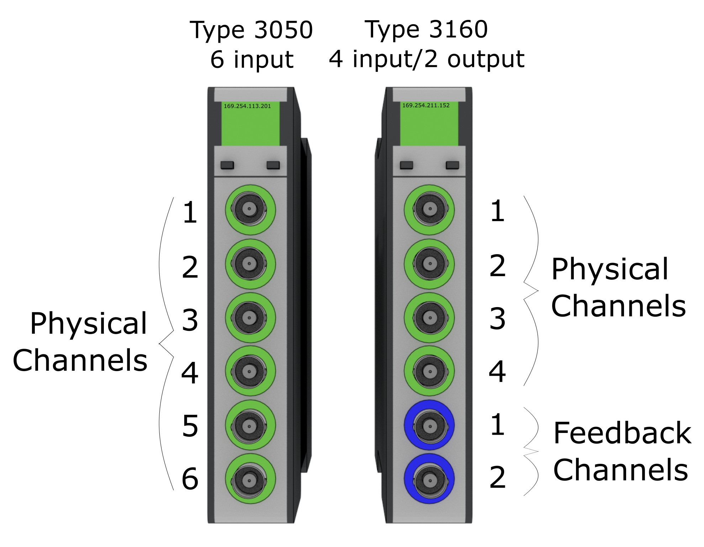
Figure 5-1. Physical Channel and Feedback Channels for LAN-XI modules. The left device would have the Physical Device 169.254.113.201 and Physical Channels 1, 2, 3, 4, 5, and 6. The right device would have Physical Device 169.254.211.152 and Physical Channels 1, 2, 3, and 4. The right device would also have Feedback Device 169.254.211.152 and Feedback Channels 1 and 2
The Maximum Value column in the channel table is used to set the range on the LAN-XI hardware. The only two valid options for LAN-XI hardware ranges are 10 and 31.6. No other range is allowable. The Minimum Value column is not used and can be left blank.
The Coupling column in the channel table is used to specify the filter used in the LAN-XI hardware. Valid values for coupling are DC, 0.7 Hz, 7.0 Hz, 22.4 Hz, or Intensity.
Current Excitation Source is used to specify if a channel uses CCLD or not. If CCLD is to be used on a given channel the Current Excitation Source column should contain CCLD. If CCLD is not to be used for that channel, the column can be left blank.
5.2. Hardware Parameters
LAN-XI hardware devices have discrete sample rates, which are powers of 2 staring with 4096 samples per second. The minimum sample rate of the generator is 16,384 Hz, so the output must be over-sampled if the acquisition sample rate is less than 16,384 samples per second. Environments defined in Rattlesnake must be able to handle output oversampling when required by the hardware device.
For large channel count tests, Rattlesnake struggles to pull data off the acquisition device fast enough using just one process. Therefore, a maximum number of acquisition processes can be specified. If too few processes are used, it will take longer to read data off the hardware than it took to acquire the data. This will result in the controller falling behind and the data buffer on the hardware slowly filling. Alternatively if too many processes are used, the computer running Rattlesnake will get bogged down swapping between processes, and other parts of the controller (particularly the GUI) may become slow. Generally, 20-40 channels per process is a reasonable rule of thumb, though this will depend on the Sample Rate of the hardware.
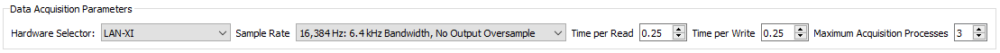
Figure 5-2. LAN-XI data acquisition parameters.
5.3. Implementation Details
This section contains details on the LAN-XI implementation in Rattlesnake, which may be helpful for users when diagnosing issues that arise in the controller.
5.3.1. ReST API
Rattlesnake communicates with the LAN-XI using a ReST interface. Rattlesnake sends and receives JSON packages that define state transitions in the hardware using HTTP commands.
5.3.2. Setting up the LAN-XI
The LAN-XI hardware is set up primarily by the Output process of the controller. The LAN-XI hardware can be used in either single or multi-module mode. It will generally take a while to set up the LAN-XI configuration. Lights will flash on the LAN-XI hardware while the setup is occurring, and information will be printed to the command terminal that appears when Rattlesnake is run. When the LAN-XI setup is completed, the statement Data Acquisition Ready for Acquire will be printed to the command terminal. Do not start a test prior to seeing this message.
Various network issues and firewall settings can block or slow down data transfer between the LAN-XI hardware and the computer running Rattlesnake. These issues are out of the scope of this document to diagnose and correct; users are encouraged to contact their network administrator if such issues arise.
It has been found that for larger channel count tests (typically three or more 11-card frames used simultaneously) that individual cards can hang during this setup process. The authors currently do not know why this occurs, as the exact same setup configuration causes no issues with lower channel counts. Cycling power on the hardware devices has been found to resolve this issue.
5.3.3. Acquistion Processe
The LAN-XI interface used by Rattlesnake uses multiple processes to acquire data from the hardware. When starting to acquire data, Rattlesnake starts a number of processes less than or equal to the maximum number of acquisition processes allowed on the Data Acquisition Setup tab. Each process will generally handle multiple hardware modules, with each module having one socket over which the data communication occurs. After all sockets are connected, the measurement is started.
Raw data is read from each module by the various acquisition processes and put into queues that are read by the main acquisition process. The main acquisition process takes these data and assembles them into the data array that is required by the controller.
When an acquisition activity ends, the Rattlesnake process will attempt to recover the LAN-XI subprocesses. When all processes have been recovered, the LAN-XI interface will print All processes recovered, ready for next acquire. to the command terminal. Periodically, one of these processes may not be recovered successfully, which will cause the acquisition process to hang. It is currently unknown why this occurs.
5.3.4. Decoding Acquisition Data
Raw acquisition data is provided to the controller from the hardware as bytes that must be interpreted correctly to be meaningful. A data stream from the hardware consists of messages transmitted sequentially. The message header is always 28 bytes long and specifies what type of message is being transmitted as well as the total length of the message. This then allows the socket reader to receive the rest of the message. Message types read by the Rattlesnake can either be "interpretations" or "signals". Interpretation messages specify how the subsequent signal data is to be interpreted and are sent whenever a signal changes. Interpretations provide an offset and a scale factor to apply to the raw acquisition data to create the physical measurements. Signal messages carry the raw acquisition data. Rattlesnake uses Kaitai Struct to decode the binary data stream into Python objects which are accessed by the controller.
5.3.5. Encoding Output Data
Data is provided to the hardware for output in bytes as well. LAN-XI hardware accepts output data as the 32-bit integers with only the upper 24 bits used. Floating point signals that are desired to be output are divided by 10 and multiplied by 8,372,224. These values are then truncated to integers and converted to bytes. These bytes are then sent via socket communications to the generator on the LAN-XI module.
5.3.6. Output Oversampling
The generator on the LAN-XI module always runs at its full rate of 131,072 samples per second. If the acquisition sample rate is equal to or greater than 16,384 samples per second, the LAN-XI hardware performs over-sampling automatically. However, if the sample rate is less than 16,384, Rattlesnake must over-sample its output. It is left to each environment within Rattlesnake to determine how to handle the oversampling of its output data. For \ac{FFT}-based environments, this can be as simple as padding the FFT with zeros prior to creating the signal. For time-based environments, more thought must be given to ensure signals are not made to be discontinuous by the up-sampling procedure.
5.3.7. Starting Up and Running the LAN-XI Acquisition
When an acquisition is started, the LAN-XI will immediately start acquiring data. Rattlesnake may take some time to set up all of the required network connections to the device, so there may be a delay between starting the acquisition and receiving data in the Rattlesnake software. During this time, the buffer on the hardware will start to fill up. Once Rattlesnake starts pulling data off the LAN-XI device, the buffer will generally empty, as Rattlesnake ideally can pull data off the device faster than it is acquired. For each read, Rattlesnake will print the amount of time it took to read to the command terminal. Initially, the value reported will be smaller than the Time per Read value that is specified on the Data Acquisition Setup tab, because the software will be pulling data off of the hardware buffer that has accumulated during the delay in starting up the measurement. After the buffer is emptied, users should see that the value reported will hover around Time per Read value that is specified on the Data Acquisition Setup tab, because that is the amount of time it takes to fill the buffer enough for the next read. The value may be lower or higher for any given read, but on average, it should be approximately equal to the Time per Read value. For maximal controller responsiveness, we want the hardware buffer to be empty so we can react to new data as quickly as possible, so it is therefore a good practice to not start any environment until the time that it is taking to read data becomes approximately equal to the specified Time per Read value.
If the user notices that it is consistently taking more time to perform a single read than the Time per Read value that was specified, it typically means that the software cannot pull data off the hardware quickly enough. This could be due to poor network speeds or a firewall interfering with the transfer. It could also mean that the user should increase the Maximum Acquisition Processes value specified on the Data Acquisition Setup page. If it consistently takes more time per read than the value specified in the Time per Read field, this means that the hardware buffer is filling up. The controller will be responding to increasingly older data, and will not be responsive. Finally, if the hardware buffer becomes full, the acquisition may simply stop entirely as there is no room to put more data.
6. Data Physics Quattro Devices
Rattlesnake is able to run Data Physics Quattro devices through the programming interface exposed by DPQuattro.dll, which is provided with installation materials for the Quattro device. Users must have the proper drivers installed in order to communicate with the Quattro device. Issues with device installation and licensing are outside the scope of the document; users are encouraged to contact Data Physics support for issues communicating with the hardware. If users can run the examples provided by Data Physics for the Quattro device, it should also work with Rattlesnake, as the same library calls are used.
6.1. Setting up the Channel Table for Quattro Devices
This section lists the channel table requirements specific to the Data Physics Quattro device.
The Quattro is a single standalone device, and therefore needs not be referenced by a specific name. However, Rattlesnake requires an entry in the Physical Device column for each channel to show that the channel is active. It is recommended to put Quattro in that space to make it clear that the connected device is a Quattro device. The Physical Channel column should contain the channel number from the device that the row in the channel table represents. For a Quattro device, this should range from 1--4. Channels in Rattlesnake do not need to be in the same order as channels on the data acquisition system for Quattro devices.
The Minimum Value (V) column is not used. The Maximum Value (V) column specifies both the minimum and maximum frequency. Valid Ranges for the Quattro device are 0.1, 1.0, 10.0, and 20.0 V for acquisition channels and 2.0 and 10.0 V for output channels.
The Coupling column is where the channel coupling is specified. Valid coupling values are
AC Differential specified by the entry AC, AC Differential, or AC Diff (case insensitive)
DC Differential specified by the entry DC, DC Differential, or DC Diff (case insensitive)
AC Single-Ended specified by the entry AC Single, AC Single Ended, or AC Single-Ended (case insensitive)
DC Single-Ended specified by the entry DC Single, DC Single Ended, or DC Single-Ended (case insensitive)
AC IEPE specified by the entry IEPE, ICP, AC ICP, or CCLD (case insensitive)
The Quattro device handles all signal conditioning so there doesn't need to be anything entered in the Current Excitation Source or Current Excitation Value columns.
Recall for output channels, users of Rattlesnake must tee the output signal back into an acquisition channel. This means using Quattro's two outputs with Rattlesnake will leave only two acquisition channels remaining. The Feedback Device column must be populated in the row corresponding to the acquisition channel that the output is teed into, again using Quattro for convention, but otherwise any entry will suffice. The Feedback Channel will be the output channel on the Quattro that is used. This should range from 1--2. Outputs in Rattlesnake do not need to be in the same order as outputs on the data acquisition system for Quattro Devices.
6.2. Hardware Parameters
When the Quattro device is selected from the Hardware Selector, Rattlesnake will bring up a file dialog asking for a Data Physics API file. Users should navigate to the file DpQuattro.dll, which should have been delivered with the Quattro API media. This dll file contains the Quattro programming interface that Rattlesnake uses to communicate with the Quattro device. If users cannot find this file, please contact Data Physics support, as Rattlesnake maintainers cannot provide this file. Each file is licensed separately by Data Physics and cannot be shared. The dll file should be alongside a signal.001.qrt file, which is the license file specific to each Quattro device. If this license file is missing or is not the one paired to the Quattro hardware, the interface will not run.
The only other parameter specific to the Quattro device is the Sample Rate. Quattro devices used with Rattlesnake have discrete sampling rates available. These are 16, 20, 25, 32, 40, 50, 64, 80, 100, 128, 160, 200, 256, 320, 400, 512, 640, 800, 1024, 1280, 1600, 2048, 2560, 3200, 4096, 5120, 6400, 8192, 10240, 12800, 20480, 25600, 40960, 51200, 102400, or 204800 samples per second. This is a subset of the full set of Quattro sample rates, because Rattlesnake only deals with integer numbers of samples per second.
6.3. Implementation Details
This section contains details on the Quattro implementation in Rattlesnake, which may be helpful for users when diagnosing issues that arise in the controller.
6.3.1. Drivers
The Data Physics Quattro device connects to the computer via USB, and must have drivers installed to correctly connect. Drivers are found in the \Driver folder of the DpQuattro API package. If you have trouble finding or installing the drivers, please contact Data Physics support, as the Rattlesnake authors cannot provide these files.
6.3.2. Programming API
The Data Physics DpQuattro API is a 64-bit programming interface written in C/C++. It is compiled to a Windows dll, so it can be used by any other environment that can use a Windows-based C library. Therefore the Quattro device as implemented in Rattlesnake is only usable on 64-bit Windows operating systems, not Mac or Linux. Additionally, if you are not using a 64-bit Python executable, you will not be able to connect to the 64-bit dll, and will not be able to use the Quattro device.
The API is accessed using the Python ctypes module, by calling its WinDLL method on the path to the dll. The file components/data_physics_interface.py in the main Rattlesnake directory constructs an object-oriented Python interface from the functions in this dll. The file components/data_physics_hardware.py then defines the acquisition and output hardware objects with the correct methods that Rattlesnake will call.
6.3.3. Debugging
If issues with the Quattro devices are encountered, users can look at the Rattlesnake command prompt that appears when the software is loaded, or the command prompt from which Rattlesnake is run. The DpQuattro API will print messages to this prompt periodically that can be useful in debugging issues. These will generally be prefixed by CAceSys and provide some information on the issue encountered. Figure \ref{fig:quattroissuecommandline} shows an example that occurred if the Quattro devices is not connected to the computer. Other diagnostic messages are also printed, so a message appearing does not necessarily mean an error has occurred.
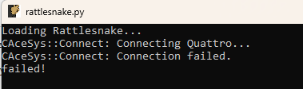
Figure 6-1. An example issue where the Quattro fails to connect.
For more debugging information, there is a DEBUG flag in the file components/data_physics_interface.py that is by default set to False. If users change that to DEBUG = True, then the Quattro interface will output a log file with more information about its activities.
7. Data Physics 900-series Devices
The Data Physics DP900 series device is not yet implemented with Rattlesnake. This will be implemented pending the release of the DP900 API by Data Physics. This chapter serves as a placeholder to describe that implementation. The implementation is expected to be very similar to the Quattro device.
8. Virtual Control using State Space Matrices
If no data acquisition hardware is available, it can still be advantageous to run Rattlesnake in a "virtual" mode by simulating responses to virtual forces using some kind of model. This would allow users of the software to develop new control laws and environments without risking damage to potentially expensive test hardware if the control law or environment is not implemented correctly. Additionally, synthetic control can be used to determine proper test parameters prior to the actual test occurring, which can help determine if a given test is feasible or not.
Rattlesnake is able to integrate linear time-invariant equations of motion using general state space matrices. The general form for state space equations of motion is
where is the state matrix, is the input matrix, is the output matrix, is the feedthrough matrix, is the state vector, is the input vector, and is the output vector. Equation (8.1) defines how the state changes with time given the current state and inputs to the system. Equation (8.2) describes how the output degrees of freedom are constructed from the current state and inputs to the system. When used within Rattlesnake, the output signals from Rattlesnake will be supplied to the system as , and the output degrees of freedom will be acquired by Rattlesnake. A complete example for running this type of test can be found in Appendix D.
For many structural dynamic analyses, the user will have mass, stiffness, and damping matrices , , and , respectively, in the typical 2nd-order differential equations of motion
where is treated as the displacement degrees of freedom of the system and are the input forces. The state of the system is represented by
and therefore the derivative of the state is
Given the state and the inputs , equation (8.3) can be transformed into equation (8.1) with
where the first row partition is the trivial equation .
The output degrees of freedom will then depend on which types of quantities are desired from the analysis. Displacements, velocities, accelerations, and forces can be recovered in the output degrees of freedom using
where the first row partition recovers displacements , the second row partition recovers velocities , the third row partition recovers accelerations , and the fourth row partition recovers forces . Note that Rattlesnake requires its output signals (corresponding to the input signals to the system ) to be measured in order to function (see Section \ref{sec:channel_table}) so the input signals to the system must be passed through directly to output degrees of freedom which are the acquired data in Rattlesnake. Practically, this means that there should always be at least one row partition of containing zeros, and the same row partition of should contain the identity matrix.
This chapter describes the setup and implementation details for running a synthetic control problem using state space matrices. For a complete example of using this type of control, see Appendix D.
8.1. Setting up the Channel Table for Virtual Control using State Space Matrics
Required channel table inputs for virtual control using state space matrices are minimal, as the and matrices effectively define the measured degrees of freedom. Still users are encouraged to fill out the channel table as much as possible for test documentation's sake. The only required parameters for virtual control are have an entry in the Physical Device column of the channel table. The authors recommend simply using the word "Virtual" to reinforce the fact that these are not real hardware channels, but instead virtual channels that exist only in software. The excitation channels must also have an entry in the Feedback Device column. The authors recommend simply using the word "Input" to make it clear that these channels are input channels to the system. One important consideration is that the number of channels in the channel table must be the same as the number of output degrees of freedom in (and therefore the number of rows of matrices and ), and they must also be ordered identically. Similarly, the number of input channels to the system specified in the channel table must be the same as the number of input degrees of freedom in (and therefore the number of columns of matrices and ), also ordered identically.
8.2. Hardware Parameters
Hardware parameters are similar to those found in Chapter 9. When the State Space Integration... hardware device is selected, Rattlesnake will bring up a file dialog box that will allow the user to specify a Numpy or Matlab file from which the state space matrices will be loaded. This file should contain fields A, B, C, and D containing the appropriately sized matrices. An additional parameter will appear in the Data Acquisition Parameters portion of the Data Acquisition Setup tab that allows the user to specify an Integration Oversample amount, as the integration time steps should generally be finer than the sample rate of the controller. A value of 10 is typically sufficient for integration of a linear system using lsim from scipy.signal.
8.3. Implementation Details
A scipy.signal.StateSpace model is created from the loaded matrices which are used for integration using the scipy.signal.lsim function.
8.3.1. Output Signal Force Buffering
Excitation signals coming into the state space virtual hardware are buffered to enable different read and write sizes. The excitation signals will be delivered to the hardware based on the specified Time per Write on the Data Acquisition Setup tab of the controller. The virtual hardware will then remove an amount of excitation signal from the buffer based on the specified Time per Read, as the acquisition task will perform the integration over time blocks equivalent to Time per Read.
8.3.2. Integration using LSIM
The scipy.signal.lsim function is used to integrate the state space model. When the acquisition is started, the state of the integration is initialized to zero. For subsequent integrations, the initial state is set to the final state of the previous integration. The excitation signals are taken from the force buffer discussed previously. Note that integration is performed at the rate specified by the Sample Rate of the data acquisition system multiplied by the Integration Oversample amount. After the integration is performed, the output is downsampled by the Integration Oversample amount to return to the sample rate of the controller. For subsequent integration blocks, the initial conditions of the integration are equivalent to the final value of the last integration block.
9. Virtual Control using Finite Element Results in Exodus Files
In addition to virtual control using state space matrices, Rattlesnake can also perform virtual control using results from FEM analyses. This is perhaps less complex to set up than the virtual control using state space matrices described in \ref{sec:rattlesnake_hardware_state_space}, but it offers less flexibility to the user and relies on the user having results in the Exodus file format.
Modern FEMs can contain thousands or even millions of degrees of freedom, so it is not realistic to be able to integrate the full finite element model's equations of motion in real time. Some model reduction is necessary to reduce the number of degrees of freedom that must be integrated. Rattlesnake instead integrates modal equations of motion rather than the full set of equations of motion. The modal transformation has the advantage of generally only requiring a small number of modal degrees of freedom to characterize the part over some frequency bandwidth. Additionally, modal degrees of freedom are uncoupled from one another, which makes for simpler integration strategies.
This chapter describes the setup and implementation details for running a synthetic control problem using Exodus FEM results.
9.1. Setting up the Channel Table for Virtual Control using a finite element model (FEM)
Setting up the channel table is very straightforward for a virtual control problem. The node number that is specified in the channel table corresponds to the node in the finite element model. Note that this corresponds to the node number not the node index, so users should be aware when picking out nodes for virtual control using visualization software whether or not the software is reporting node number or node index. The node direction can be specified as either a principal direction (X+, Y+, Z+, X-, Y-, or Z-) or a comma separated 3-vector with unit magnitude that specifies the measurement direction.
The modal damping value that will be applied to all modes in the model should be placed in the Comment column of the first channel. This should be specified as a fraction of critical damping (e.g. 0.01) rather than a percentage (e.g. 1%). For more complex damping capabilities, a State Space formulation should be used instead, see Chapter 8.
All active measurement degrees of freedom and output degrees of freedom must have an entry in the Physical Device column of the channel table. The authors recommend simply using the word Virtual to reinforce the fact that these are virtual channels. Any excitation channel must have an entry in the Feedback Device column. The authors here recommend simply using the word Input to make it clear that these channels are excitation channels.
All other columns of the channel table can be left empty, though it may be useful to put entries into them to document the virtual test better.
9.2. Hardware Parameters
When the Exodus Modal Solution... hardware device is selected, Rattlesnake will bring up a file dialog box that will allow the user to specify the Exodus file from which the modal solution will be loaded. An additional parameter will appear in the Data Acquisition Parameters portion of the Data Acquisition Setup tab that allows the user to specify an Integration Oversample amount, as the integration time steps should generally be finer than the sample rate of the controller. A value of 10 is typically sufficient for integration of a linear system using lsim from scipy.signal.
9.3. Implementation Details
This section contains implementation details of the virtual control using modal analysis solutions found in exodus files.
9.3.1. Creating State Space Matrices from Modal EOMs
To assemble the state space equations of motion, the mode shape matrix is used to transform between modal and physical degrees of freedom. A 3D displacement array is constructed from the DispX, DispY, and DispZ node variables in the Exodus file. A mode shape matrix is computed by taking the dot product of the direction vector specified by the direction in the channel table with the displacement vector for the node specified by the channel table for each mode shape.
9.3.1.1. State Degrees of Freedom
States for the virtual control using an Exodus modal solution are the modal displacements and velocities for the modes in the exodus file below 1.5 the Nyquist frequency of the controller. Mass normalized mode shapes are assumed, so the modal mass matrix is assumed to be the identify matrix, modal damping is assumed to be a diagonal matrix of damping coefficients , and modal stiffness is assumed to be a diagonal matrix of stiffness coefficients . The state equation matrices and are then defined by equations (8.6) and (8.7).
9.3.1.2. Response Degrees of Freedom
Response degrees of freedom are defined using the and matrices defined by equations (8.8) and (8.9). This hardware device assumes responses are accelerations, so the third row partition of equations (8.8) and (8.9) are used. These are modal accelerations, so they are multiplied by the mode shape matrix to produce physical accelerations.
9.3.1.3. Excitation Degrees of Freedom
Excitation to the system is specified as modal forces, so the physical excitation forces provided by Rattlesnake are multiplied by the mode shape matrix transposed to create modal forces. To accommodate potentially different read and write sizes in the controller, physical forces to be output are appended to a force buffer and one write worth of forces are pulled from the buffer to be transformed to modal forces and applied to the system.
Rattlesnake's measurement strategy requires that excitation signals also be measured by the data acquisition, and this is also true for virtual control. Therefore, excitation signals must be returned as a measured response.
9.3.2. Integration of Equations of Motion
Once state space matrices are formed, the implementation of this virtual hardware is largely the same as the virtual control described in Chapter 8. See Section 8.3 for details on the integration scheme.
10. Virtual Control using SDYNPY System Objects
The final option for synthetic control in Rattlesnake is to load in a SDynPy System object, which gets stored from SDynPy using the sdyn.System.save method. SDynPy System objects store mass, stiffness, and damping matrices. They also store transformation matrices which transform its internal system space into the physical space. This allows SDynPy System objects to represent both "full" physical systems as well as "reduced" systems (e.g., Craig-Bampton or Modal systems). The final part of the SDynPy System is the degree of freedom information that is stored with the matrices. This maps rows of the transformation matrix (or rows of the mass, stiffness, and damping matrices if the transformation is the identity matrix) to physical degrees of freedom.
A complete example problem using a SDynPy System object can be found in Appendix C.
10.1. Setting up the Channel Table
Setting up the channel table is very straightforward for a SDynPy System. Degrees of freedom in the SDynPy system are selected in the Rattlesnake test by specifying the node and direction of the degree of freedom in the Node and Direction of the coordinate field of the SDynPy system. The node is specified as an integer, and the direction is specified as a string (X+, Y+, Z+, X-, Y-, or Z-).
All active measurement degrees of freedom and output degrees of freedom must have an entry in the Physical Device column of the channel table. The authors recommend simply using the word Virtual to reinforce the fact that these are virtual channels. Any excitation channel must have an entry in the Feedback Device column. The authors here recommend simply using the word Input to make it clear that these channels are excitation channels.
The Channel Type must also be specified. It is used to specify the derivative of the degree of freedom that will be acquired in the response channels. The Channel Type can be specified as Acceleration, Velocity, or Displacement, and the output matrices of the state space system that will be integrated will be assembled such that it will return the specified channel type. If an unknown channel type is specified or if none are specified, then displacement will be assumed. Note excitation degrees of freedom are not modified by a Channel Type modifier, they are applied directly as-is to the SDynPy system.
All other columns of the channel table can be left empty, though it may be useful to put entries into them to document the virtual test better.
10.2. Hardware Parameters
When the SDynPy System Integration... hardware device is selected, Rattlesnake will bring up a file dialog box that will allow the user to specify the file from which the SDynPy system will be loaded. An additional parameter will appear in the Data Acquisition Parameters portion of the Data Acquisition Setup tab that allows the user to specify an Integration Oversample amount, as the integration time steps should generally be finer than the sample rate of the controller. A value of 10 is typically sufficient for integration of a linear system using lsim from scipy.signal.
10.3. Implementation Details
This section describes the implementation details for the SDynPy System integration.
10.3.1. Setting up the State Space System
Rattlesnake is able to integrate linear time-invariant equations of motion using general state space matrices. The general form for state space equations of motion is given in Equations (8.1) and (8.2).
Chapter 8 describes how the state space equations can be constructed from mass, stiffness, and damping matrices. The state space formulation can be extended to allow for a transformation matrix between the mass, stiffness, and damping matrices, and the physical degrees of freedom.
Here the system transformation is partitioned into the response degrees of freedom and excitation degrees of freedom .
Matrices and are unchanged and defined in equations (8.6) and (8.7).
The state space matrices are then integrated using scipy.signal.lsim, similar to the State Space formulation described in Chapter 8.
11. Implementing New Hardware Devices with Rattlesnake
WARNING: This chapter contains advanced Rattlesnake operations that require a reasonably good understanding of the Rattlesnake software architecture. Understanding this chapter is not required to run the software successfully, and therefore this chapter can be skipped if the user is not interested in implementing a new hardware device.
Rattlesnake allows users to implement new hardware devices with minimal modifications to the controller. Within the GitHub repository, there is a source file components/abstract_hardware.py that defines abstract base classes HardwareAcquisition and HardwareOutput. All hardware devices used by Rattlesnake must implement acquisition and output classes that inherit from these abstract base classes and define functions that overwrite the abstract methods in these base classes. The acquisition and output will generally be run on separate processes in Rattlesnake to ensure that output can be streamed to the device as acquired data is simultaneously read from the device. A flowchart of the operations performed by each hardware process is shown in Figure 11-1.
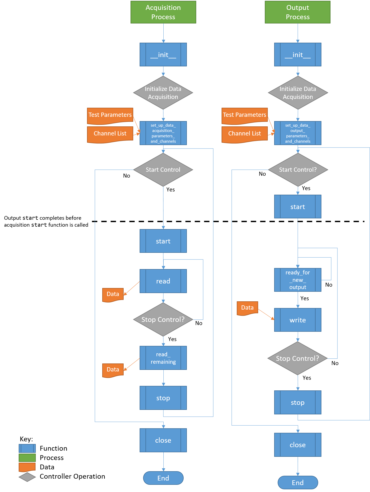
Figure 11-1. Flowchart of Hardware Operations. Note that each process will proceed at its own pace, so it is generally not possible to ensure that an Acquisition function is called before or after an Output function. The only place where order of operations is enforced is at startup, where the Output start function finishes before the Acquisition start function is called.
The hardware setup in Rattlesnake generally assumes that separate processes are required for acquisition and output. However, this may not be the case for all hardware devices. If a device can only run on a single process, users can utilize a multiprocessing queue to pass the output data from the output process to the acquisition process and perform all hardware processes there. See, for example, the hardware implementation in components/state_space_virtual_hardware.py for more details on this approach; the excitation signal is obtained by the write method and immediately passed to a queue to deliver to the acquisition process.
Users implementing new hardware devices are encouraged to look at existing hardware implementations in the GitHub repository (components/nidaqmx_hardware_multitask.py, components/lanxi_hardware.py, components/data_physics_hardware.py,
components/state_space_virtual_hardware.py,
components/sdynpy_system_virtual_hardware.py, and components/exodus_modal_solution_hardware.py) to use as examples.
11.1. Defining a HardwareAcquisition Class
The acquisition portion of the data acquisition hardware is defined using a class that inherits the abstract base class HardwareAcquisition in components/abstract_hardware.py. A class inheriting from HardwareAcquisition must implement the following functions.
- __init__ The class constructor that initializes the hardware device. Here default parameters can be set up.
- set_up_data_acquisition_parameters_and_channels This function is called when the
Data Acquisition Setuptab is initialized. This function will nominally set up the channels on the hardware as well as any other acquisition parameters such as sample rate or triggering that are required by the hardware. As arguments, this function receives an object defining the data acquisition parameters as well as a list of channels. Note that some hardware devices require separate setup for output and acquisition, while others may only need to be set up once for both hardware and acquisition. For the latter case, users should evaluate whether or not it makes sense to do the setup in theHardwareAcquisitionorHardwareOutputclass. Note also that there is no assurance made by the controller that operations in theset_up_data_acquisition_parameters_and_channelsfunction will be called before or after operations in the theset_up_data_output_parameters_and_channelsfunction from theHardwareOutputclass, as they will both be called simultaneously by separate processes. If a specific order of operations for hardware setup must be enforced, those operations should be contained entirely in either theset_up_data_acquisition_parameters_and_channelsfunction or theset_up_data_output_parameters_and_channelsfunction from theHardwareOutputclass. - start This function is called when the acquisition system starts acquiring and should start the device recording. This function will always be called after the
startfunction from theHardwareOutputclass, so users can rely on that ordering for order of operations. - read This function reads a set of data from the device. The returned data should be a Numpy array with number of rows equal to the number of measurement channels and number of columns equal to the number of samples read. The number of samples read is determined by the
Sample RateandTime per Readparameters that get specified on theData Acquisition Setuptab. - read_remaining This function reads the remaining data on the device, as it is called before the device is stopped. It returns a Numpy array with number of rows equal to the number of measurement channels and a number of columns equal to the number of samples remaining to be read on the device.
- get_acquisition_delay This function returns an integer number of samples that defines how much longer the acquisition should acquire after output shuts down. This is designed to accommodate any output buffering present in the hardware device.
- stop This function is called when the acquisition system should stop recording, so it should stop any data acquisition on the device. The controller makes no guarantee that the
HardwareAcquisitionstopfunction will be called before or after theHardwareOutputstopfunction, so the user should not rely on one stopping prior to the other. - close This function is called when the controller is shutting down the hardware for good. It should gracefully shut down the hardware and release any memory or references related to it. The controller makes no guarantee that the
HardwareAcquisitionclosefunction will be called before or after theHardwareOutputclosefunction, so the user should not rely on one stopping prior to the other.
11.2. Defining a HardwareOuput Class
The acquisition portion of the data acquisition hardware is defined using a class that inherits the abstract base class HardwareOutput in components/abstract_hardware.py. A class inheriting from HardwareOutput must implement the following functions.
- __init__ The class constructor that initializes the hardware device. Here default parameters can be set up.
- set_up_data_output_parameters_and_channels This function is called when the
Data Acquisition Setuptab is initialized. This function will nominally set up the channels on the hardware as well as any other output parameters such as sample rate or triggering that are required by the hardware. As arguments, this function receives an object defining the data acquisition parameters as well as a list of channels. Note that some hardware devices require separate setup for output and acquisition, while others may only need to be set up once for both hardware and acquisition. For the latter case, users should evaluate whether or not it makes sense to do the setup in theHardwareAcquisitionorHardwareOutputclass. Note also that there is no assurance made by the controller that operations in theHardwareAcquisitionset_up_data_acquisition_parameters_and_channelsfunction will be called before or after operations in the theset_up_data_output_parameters_and_channelsfunction from theHardwareOutputclass, as they will both be called simultaneously by separate processes. If a specific order of operations for hardware setup must be enforced, those operations should be contained entirely in either theset_up_data_acquisition_parameters_and_channelsfunction from theHardwareAcquisitionclass or theset_up_data_output_parameters_and_channelsfunction from theHardwareOutputclass. - start This function is called when the acquisition system starts acquiring and should start the device outputting signals. This function will always be called before the
startfunction from theHardwareAcquisitionclass, so users can rely on that ordering for order of operations. - ready_for_next_output This function is called prior to writing any data to the hardware to check whether or not the device is ready for new outputs. This function will return
Trueif the device should accept new output signals, andFalseif it should not. If the controller was able to write data to the hardware as fast as possible, it might fill up the hardware buffer. This would make the controller very unresponsive as the buffer would need to be exhausted by outputting all stored samples prior to any new data being output. In general, the function should be set up such that the minimum amount of data is stored on the device (i.e. written to the device but not yet output) at any given time, while also ensuring that variations in the controller's performance due to other tasks being performed simultaneously do not result in the buffer running out of samples to output before the next set of samples is written to the device. Generally a buffer of two or three writes worth of samples is sufficient to ensure that the buffer does not exhaust itself. - write This function accepts data as a Numpy array and writes it to the hardware. The array will be sized such that the number of rows is equal to the number of output signals and the number of columns is equal to the number of samples that are written per channel, which is determined by the
Sample RateandTime per Writeparameters that get specified on theData Acquisition Setuptab. - stop This function is called when the acquisition system should stop outputting data, so it should stop any data output on the device. The controller makes no guarantee that the
HardwareAcquisitionstopfunction will be called before or after theHardwareOutputstopfunction, so the user should not rely on one stopping prior to the other. - close This function is called when the controller is shutting down the hardware for good. It should gracefully shut down the hardware and release any memory or references related to it. The controller makes no guarantee that the
HardwareAcquisitionclosefunction will be called before or after theHardwareOutputclosefunction, so the user should not rely on one shutting down prior to the other.
11.3. Controller Modifications to Recognize New Hardware Devices
With the new hardware device implemented, the controller should be modified to find the new hardware device and allow the user to run it.
11.3.1. Graphical user interface (GUI) Modifications
In order for the user to select the newly-implemented hardware device, the hardware must be added to the Hardware Selector drop-down menu on the Data Acquisition Setup tab of the controller. This requires editing the components/combined_environments_controller.ui file. Editing of *.ui files is most easily done through the Qt Designer software, but can also be done by editing the *.ui file directly, as it contains XML. The widget that needs to be modified is a QComboBox widget with the name hardware_selector. An additional item needs to be added to the widget corresponding to the hardware device.
If the hardware requires additional user parameters to be specified, then further modifications to the GUI might be required. Such modifications will require a thorough understanding of the Rattlesnake source code. These modifications will be highly specific to the hardware being implemented, and are therefore out of scope for this User's Manual. Such modifications might include adding a dropdown to select a trigger channel to synchronize acquisition and output or adding integration parameters such as minimum or maximum timestep for a virtual hardware device that utilizes a nonlinear integrator.
11.3.2. Modifications to the User interface (UI) Callback Functions
With the GUI modified to enable selecting the hardware interface, the user might need to modify the Hardware Selector callback function in order to ensure the proper options are visible to the user. These callbacks are defined in the components/user_interface.py file in the Ui class. The hardware_update function may need to be modified to handle hiding or showing specific widgets when the new hardware device is selected.
If the hardware interface requires additional user parameters to be specified, then further modifications to the code will be required. These modifications will be highly specific to the hardware being implemented, so this User's Manual will only discuss where the changes will need to be made, but not necessarily what those changes need to be. If additional parameters are required, users may need to modify the DataAcquisitionParameters class found in components/utilities.py to add these additional parameters to the global parameter set. The user will also need to modify the code where the class is instantiated to include these new parameters, particularly in the initialize_data_acquisition function of the Ui class in components/user_interface.py.
11.3.3. Modifications to the Acquisition and Output Processes
Finally, the initialize_data_acquisition functions in both the AcquisitionProcess class in components/acquisition.py and the OutputProcess class in components/output.py will need to be modified to correctly initialize the hardware. A new elif statement should be added to the main if statement inside that function to accommodate the new hardware device index that was added to the Hardware Selector dropdown menu. The *.py file that contains the hardware implementation should be imported and the respective Acquisition or Output class should be instantiated. It is at this point that any additional arguments to the classes' __init__ functions are passed. The object instantiated from the class should be stored to the self.hardware property of the class.
Part III. Rattlesnake Environments
The key to Rattlesnake's flexibility is its implementation of various environment types. These environments can be run stand-alone or in combination with other environments. A general environment will receive response data from the controller and then perform some analysis on that data to create the next set of output signals that will be required by the controller. This Part will describe the existing environments in the controller and provide information required to implement additional environments.
Chapter 12 describes the MIMO Random Vibration environment where users will control to vibration spectra in the form of CPSD matrices. Chapter 13 describes the MIMO Transient Vibration environment, where users will control directly to time responses. Chapter 14 Time History Generator environment, which allows users to specify the signal played to the excitation devices. Chapter 15 describes the Modal environment, where users can perform dynamic characterization tests using shaker or impact hammer excitation. Chapter 16 describes the Combined Environments functionality in Rattlesnake which allows users to run multiple environments simultaneously.
Chapter 17 describes the general process to implement new environments. Implementing new environments in Rattlesnake is a very involved process that requires a good amount of knowledge of the Rattlesnake software architecture, as well as advanced programming concepts including object-oriented programming and inheritance, multiprocessing, and GUI design and implementation.
12. Multiple Input/Multiple Ouptut Random Vibration
The first environment implemented in the Rattlesnake controller was the MIMO Random Vibration environment. This environment aims to control the vibration response of a component to specified levels by creating output signals with the correct levels, coherence, and phase at each frequency line. The governing equation for MIMO Random Vibration is
where the CPSD matrix of the responses result from some signals exciting the structure represented by transfer function matrices . In a typical vibration control problem, the control system tries to compute the signal matrix that best reproduces the desired response .
12.1. Specification Definition
The first step in defining a Random Vibration control problem is the definition of the vibration response that is desired. This vibration specification can be derived using various approaches, perhaps from test data from some environment test, predictions from a model, or derivations from a standard. Regardless of its source, the specification defines the response levels, coherence, and phase of each control channel at each frequency line in the test.
Rattlesnake accepts the specification in the form of a 3D array consisting of a complex CPSD matrix defined at each frequency line. Specification CPSD matrices can be loaded from Numpy *.npz files or Matlab *.mat files. For each of these files, Rattlesnake respects the natural dimension ordering of a dataset consisting of "stacks" of matrices that the specification can be visualized to be. For Matlab, which customarily uses the third dimension as the "stacking" dimension for 3D datasets, the specification dimensions should be where is the number of control channels and is the number of frequency lines. For Numpy/Python the more natural ordering is , essentially taking the last dimension of the Matlab array and moving it to the first dimension in the Numpy array. Both Matlab *.mat and Numpy *.npz files should contain the following data fields:
cpsdA (for*.npzfiles) or (for*.matfiles) complex array containing the CPSD matrix at each frequency defined inf.fA array of frequencies corresponding to the frequency lines in theCPSDmatrix.
For example, for a test consisting of three control channels has a given specification is defined from 10 Hz to 100 Hz with 2 Hz spacing, the variable f in the specification file would be length 46 and have values [10, 12, 14, ... 98, 100] and the variable cpsd would be size in a *.npz file or in a *.mat file.
The ordering of the rows and columns of the CPSD matrices defining the specification are the same order as the control channels in the Channel Table on the Data Acquisition Setup tab. This means that the first row and column of the CPSD matrix will correspond to the first channel that is selected as a control channel in the Control Channels list on the Environment Definitions tab. The second row and column to the second channel selected as a control channel, and so on. Note that if Control transformations are specified, then the first row and column of the specification will correspond to the first virtual control channel, which is the first row of the control transformation matrix. The second row and column will correspond to the second virtual control channel.
The specification is defined in units of where is the engineering unit specified by the Engineering Unit column of the channel table for the control channels.
Please note that Rattlesnake will not interpolate a specification for you! Any frequency line that is not defined in the specification will be set to zero. This allows a user to specify the specification only over certain bandwidths of interest. This also means that if a user provides a specification with 2 Hz frequency spacing but runs a test with parameters that result in 1 Hz frequency spacing, every second frequency line will end up being set to zero, which will generally result in very poor control.
Rattlesnake MIMO Random Vibration specification files can also contain optional warning and abort limits. Note that these limits only operate on the APSD portion (i.e. the diagonal) of the CPSD matrices. It is not currently possible to set a limit based on, for example, the coherence between two channels in Rattlesnake. These are defined in the specification files in fields:
warning_upperA (for*.npzfiles) or (for*.matfiles) array containing an upper warning level at each frequency defined inffor each control channel.warning_lowerA (for*.npzfiles) or (for*.matfiles) array containing a lower warning level at each frequency defined inffor each control channel.abort_upperA (for*.npzfiles) or (for*.matfiles) array containing an upper abort level at each frequency defined inffor each control channel.abort_lowerA (for*.npzfiles) or (for*.matfiles) array containing a lower abort level at each frequency defined inffor each control channel.
Any combination of the above fields can be specified. For example, a lower limit can be defined without an equivalent upper limit. An abort limit can be defined without a warning limit. However, if the field is defined in the specification file, it must have the correct shape, which means that the limit must be defined for all frequency lines and for all control channels. If a user does not want to limit on specific frequency ranges or specific channels, the limit can be set to a value of NaN. Rattlesnake will ignore portions of the limit specifications that contain NaN values.
Throughout the MIMO Random Vibration environment, channels will be flagged as yellow if they cross a warning limit, and flagged as red if they cross an abort limit. Additionally, if the Allow Automatic Aborts? checkbox is checked on the Environment Definition tab, the environment will automatically stop if the abort limit is crossed.
12.2. Defining the MIMO Random Vibration Environment in Rattlesnake
In addition to the specification, there are a number of signal processing parameters that are used by the MIMO Random Vibration environment. These, along with the specification, are defined on the Environment Definition tab in the Rattlesnake controller on a sub-tab corresponding to a MIMO Random Vibration environment. Figure 12-1 shows a MIMO Random Vibration sub-tab. The following subsections describe the parameters that can be specified, as well as their effects on the analysis.

Figure 12-1. GUI used to define a MIMO Random Vibration environment.
12.2.1. Sampling Parameters
The Sampling Parameters section of the MIMO Random Vibration definition sub-tab consists of the following parameters:
- Sample Rate The global sample rate of the data acquisition system. This is set on the
Data Acquisition Setuptab, and displayed here for convenience as a read-only value. - Samples Per Frame The number of samples used when computing the FFT. Making this number larger will increase the frequency resolution of the measurement while also making each measurement frame longer. Note that this value should never be set so that the frequency resolution of the FFT is finer than the frequency resolution of the specification, otherwise the frequency lines without a corresponding value in the specification will be controlled to zero. Because adjusting this parameter will adjust the frequency resolution of the measurement, any loaded specification will need to be re-loaded with the new frequency resolution.
- Samples Per Aquire The number of additional samples required per measurement frame when taking into account overlapping of the signals that will occur in the system identification and CPSD calculations. This is a computed quantity presented for convenience, so the user cannot modify it directly.
- Frame Time The amount of time it takes to measure a frame of data, in seconds. This is a computed quantity presented for convenience, so the user cannot modify it directly.
- Nyquist Frequency The maximum bandwidth of the measurement given the sampling rate. This is the largest frequency value in the FFT. This is a computed quantity presented for convenience, so the user cannot modify it directly.
- FFT Lines The number of frequency lines in the FFT. This is a computed quantity presented for convenience, so the user cannot modify it directly.
- Frequency Spacing The frequency resolution of the FFT. This is a computed quantity presented for convenience, so the user cannot modify it directly.
- Test Level Ramp Time The time it takes the environment to ramp between test levels. This is done to prevent sharp adjustments to the controller which may damage test hardware. This is also the time it takes for the controller to ramp up to the starting level from zero when the test is started, as well as to ramp back to zero from the final test level when testing is completed.
12.2.2. Signal Generation Parameters
The Signal Generation Parameters section of the MIMO Random Vibration definition sub-tab consists of the following parameters:
- COLA Window The window function used to smooth between individual time signal realizations during the COLA process.
- COLA Overlap The amount of overlap between signals when smoothing individual time signal realizations during the COLA process.
- Window Exponent The exponent used on the COLA window function. This should generally be left at 0.5, which will result in a signal with constant variance.
- Samples per Output The number of additional samples output per measurement frame when taking into account overlapping of the signals that will occur COLA calculations. This is a computed quantity presented for convenience, so the user cannot modify it directly.
12.2.3. Control Channels
The Control Channels list allows users to select the channels in the test that will be used by the environment to perform control calculations. These are the channels that will match the rows and columns of the specification file.
12.2.4. Control Parameters
The Control Parameters section of the MIMO Random Vibration definition sub-tab consists of the following parameters:
- Input Channels The total number of channels being measured by the Rattlesnake, including response channels and output channels. This is a computed quantity presented for convenience, so the user cannot modify it directly.
- Output Channels The number of excitation signals being used to control the vibration response of this environment. This is a computed quantity presented for convenience, so the user cannot modify it directly.
- Control Channels The number of response channels being used in the control. This is a computed quantity presented for convenience, so the user cannot modify it directly.
- Update System ID During Control? Selecting this option allows Rattlesnake to continue to update FRF during control. This can be useful for nonlinear systems as the structure may behave differently at higher levels of excitation. One should be aware that if signals become too correlated during a test, the FRF calculations may not be able to separate responses by exciter and the FRFs may be incorrect leading to poor control. Additionally, if something in the test setup breaks or comes loose, the controller may see that the responses are decreasing for a given excitation level and continually try to increase the excitation level, which could result damage to test equipment or the test article.
- Frames in CPSD The number of measurement frames used when computing the CPSD matrices of the responses and output signals. Note that if
Allow Automatic Aborts?is active, the environment will not shut down the number of frames specified by this setting has been acquired. If fewer frames have been acquired than are specified by this setting, the CPSD matrix might be noisy due to only having acquired a small number of measurement frames. - CPSD Window The window function applied during the CPSD matrix calculations.
- CPSD Overlap The percentage overlap between measurements frames used to compute the CPSD matrix.
- Allow Automatic Aborts? Selecting this option will allow the environment to shut itself down if an abort limit is reached as defined in the specification file. If not selected, the channel will be flagged red, but the environment will still continue to run.
The Control Parameters section of the MIMO Random Vibration definition sub-tab also includes functionality for loading in custom control laws. See Section 12.7. Writing a Custom Control Law for information on defining a custom control law.
- Control Python Script The Python script containing a custom control law that is currently loaded into the Rattlesnake controller.
- Load Pressing this button will bring up a file selection dialog to load in a new Python script containing a custom control law.
- Control Python Function This selector presents the functions, generators, and classes within the loaded Python script that can be used as custom control laws.
- Control Parameters This text box allows arbitrary input to be passed to custom control laws as a string. It is up to the control law to specify what this extra input must be and parse whatever input the user gives it.
12.2.5. Control and Drive Transforms
The Control and Drive Transforms section of the MIMO Random Vibration definition sub-tab consists of the following parameters:
- Transformation Matrices... Selecting this button will bring up the transformation matrices dialog box, which allows the user to specify linear transformations between the physical responses and excitation signals and virtual responses and excitation signals. See Section 12.8. Using Transformation Matrices for more information.
- Transform Channels The number of virtual control degrees of freedom after applying transformation matrices. This is a computed quantity presented for convenience, so the user cannot modify it directly.
- Transform Outputs The number of virtual excitation devices after applying transformation matrices. This is a computed quantity presented for convenience, so the user cannot modify it directly.
Note that if Transformation matrices are defined, the number of control channels ends up being the number of rows of the Response Transformation Matrix, rather than the number of physical control channels. The number of physical control channels will be equal to the number of columns of the transformation matrix. The number of rows and columns of the specification loaded should be equal to the number of rows in the transformation.
12.2.6. Test Specifications
The test specification is loaded into the environment in the Test Specification section of the MIMO Random Vibration definition:
- Row A drop-down menu consisting of all response channels used to visualize a certain row and column of the specification.
- Column A drop-down menu consisting of all the response channels used to visualize a certain row and column of the specification.
- Load Spec A button that when pressed will bring up a file selection dialog to read in a specification from a Numpy
*.npzor Matlab*.matfile. - Specification: Single Entry A visualization of all frequency lines of a single row and column of the CPSD matrix in the specification.
- Specification: Sum of ASDs The sum of the diagonal entries of the CPSD matrix at each frequency line, which is commonly used as a test metric.
12.3. System Identification for the MIMO Random Vibration Environment
When all environments are defined and the Initialize Environments button is pressed, Rattlesnake will proceed to the next phase of the test, which is defined on the System Identification tab.
MIMO Random Vibration requires a system identification phase to compute the matrices used in the control calculations of equation (12.1). Figure 12-2 shows the GUI used to perform this phase of the test.

Figure 12-2. System identification GUI used by the MIMO Random Vibration environment.
Rattlesnake's system identification phase will start with a noise floor check, where the data acquisition records data on all the channels without specifying an output signal. After the noise floor is computed, the system identification phase will play out the specified signals to the excitation devices, and transfer functions will be computed using the responses of the control channels to those excitation signals. Section Section 3.4. System Identification describes the System Identification tab and its various parameters and capabilities.
12.4. Test Predictions for the MIMO Random Vibration Environment
Once the system identification is performed, a test prediction will be performed and results displayed on the Test Predictions tab, shown in Figure 12-3. This is meant to give the user an idea of the test feasibility. The left side of the window displays excitation information, including RMS signal levels required as well as the excitation spectra expected. The right side of the window displays the predicted responses compared to the specification as well as the predicted RMS dB error. This figure will also show any abort or warning limits imposed. Channels will be highlighted in yellow if they cross a warning level and will be highlighted in red if they cross an abort level. For example in the test in Figure 12-3, all channels are predicted to cross the warning threshold, and a handful are predicted to cross the abort threshold.

Figure 12-3. Test prediction GUI which gives the user some idea of the test feasibility.
12.5. Running the MIMO Random Vibration Environment
The MIMO Random Vibration environment is then run on the Run Test tab of the controller.
With the data acquisition system armed, the environment can be started manually with the Start Environment button. Once running, it can be stopped manually with the Stop Environment button. With the data acquisition system armed and the environment running, the GUI looks like Figure 12.4.

Figure 12-4. GUI for running the MIMO Random Vibration environment.
There are various operations that can be performed when setting up and running the MIMO Random Vibration environment, and many visualization operations as well.
12.5.1. Test Level
Two test levels exist in the MIMO Random Vibration Environment. The Current Test Level specifies the current level of the control in decibels relative to the specification level, which is 0 dB. Note that all data and visualizations on the Run Test window are scaled back to full level, so users should not be surprised if for example the values reported in the Output Voltages (RMS) table do not change significantly with test level. See Chapter 12.9. Generation of Time Histories for more information on this implementation detail.
The second test level is the Target Test Level. This option can be used to specify a level at which data starts streaming to the disk if the user does not wish to save low level data. Additionally, the controller can be made to stop controlling automatically after a certain time at a target test level. This is done to ensure that the controller does not spend too much time at a level that could eventually damage a part.
12.5.2. Test Timing
The MIMO Random Vibration environment has multiple options for test timing. If Continuous Run is selected, the environment will continue until it is manually stopped. A specific run time can be specified using the Run for h:mm:ss option and specifying a time in the h:mm:ss selector. The at Target Test Level checkbox specifies whether or not to activate the timer at any test level or only when the test is at the target test level.
The MIMO Random Vibration environment will constantly update the Total Test Time and Time At Level time displays when the environment is active. A progress bar will be displayed when the controller is set to only run for a specified time. When the progress bar reaches 100%, the environment will shut down automatically.
12.5.3. Test Metrics and Visualization
The MIMO Random Vibration environment displays a number of global metrics to help evaluate the success of a test. RMS signal voltage values are displayed in the Output Voltages (RMS) table. RMS dB errors for each control channel are displayed in the Response Error (dB) table. These errors will also be colored yellow or red if the given channel is crossing a warning or abort level. If an abort level is reached and the Allow Automatic Aborts? option is selected on the Environment Definition page, then the environment will shut down automatically.
The Run Test tab for the MIMO Random Vibration environment displays the sum of APSD functions of the response CPSD matrix compared to the sum of APSD functions of the specification in a large plot in the middle of the main window, which can be seen in Figure 12-4 . This can be considered an "Average" response level for the test compared to the "Average" specification level.
To interrogate specific channels, the Data Display section of the Run Test window offers several options. The row and column of the CPSD matrix can be selected using Control Channel 1 and Control Channel 2 selectors. The Data Type of the plot can be specified as Magnitude, Phase, Coherence, Real, or Imaginary. Pressing the Create Window button then creates the specified plot.
Some convenience operations are also included to visualize all channels. In the Show all: section, pressing the Autospectral Densities button will bring up one window per control channel and display the APSD function for each. Pressing the Spectral Densities (phase/coh) or Spectral Densities (real/imag) buttons will attempt to display the entire CPSD matrix, displaying either the phase and coherence or real and imaginary parts in the upper and lower triangular portions of the matrix. Be aware that these convenience functions with a large number of control channels can easily overwhelm the computer with plotting operations causing the GUI to become unresponsive, so use these operations with caution. Figure 12-5 shows an example displaying the full CPSD matrix with coherence and phase for a test with six control degrees of freedom.

Figure 12-5. Visualizing individual channels (magnitude, coherence, and phase).
If a specification has warning and abort limits defined, these will also be plotted, as shown in Figure 12-6.

Figure 12-6. Figure showing the APSD data for each channel, as well as the warning and abort limits.
Further convenience operations are available in the Window Operations: section. Pressing Tile All Windows will rearrange all channel windows neatly across the screen. Pressing Close All Windows will close all open channel windows.
12.5.4. Saving Data from the MIMO Random Environment
Time data can be saved from the MIMO random vibration environment through Rattlesnake's streaming functionality, described in Section 3.7. Run Test.
Users can also directly write the spectral data from the environment to a file. This will also result in a netCDF file, however the fields will be slightly different. This is described more fully in Section 12.6. Output NetCDF File Structure.
12.6. Output NetCDF File Structure
When Rattlesnake streams time data to a netCDF file, environment-specific parameters are stored in a netCDF group with the same name as the environment name. Similar to the root netCDF structure described in Section 3.8. Rattlesnake Output Files , this group will have its own attributes, dimensions, and variables, which are described here.
12.6.1. NetCDF Dimensions
fft_linesThe number of frequency lines in the FFT.twoA dimension of size 2, which is required for the warning and abort variables (there are two limits, upper and lower).specification_channelsThe number of channels defined in the specification provided to the MIMO Random Vibration environment.response_transformation_rowsThe number of rows in the response channel transformation (See Section 12.8 Using Tranformation Matrices). This is not defined if no response transformation is used.response_transformation_colsThe number of columns in the response channel transformation (See Section 12.8 Using Transformation Matrices). This is not defined if no response transformation is used.reference_transformation_rowsThe number of rows in the output transformation (See Section 12.8 Using Transformation Matrices). This is not defined if no output transformation is used.reference_transformation_colsThe number of columns in the output transformation (See Section 12.8 Using Transformation Matrices). This is not defined if no output transformation is used.control_channelsThe number of physical channels used for control. Note that this may be different from thespecification_channelsdue to the presence of a transformation matrix.
12.6.2. NetCDF Attributes
sysid_frame_sizeThe number of samples per measurement frame in the system identificationsysid_averaging_typeThe type of averaging used in the system identification, linear or exponentialsysid_noise_averagesThe number of measurement frames acquired for the noise floor calculationsysid_averagesThe number of measurement frames acquired for the system identification calculationsysid_exponential_averaging_coefficientThe weighting coefficient used for new frames in the exponential averaging schemesysid_estimatorThe FRF estimator used to compute the transfer functions during the system identificationsysid_levelThe level used by the system identification in volts RMS.sysid_level_ramp_timeThe time to ramp up to the test level when starting and ramp back to zero when stopping the system identificationsysid_signal_typeThe signal type used by the system identificationsysid_windowThe window function applied to the time data during the system identificationsysid_overlapThe overlap fraction between measurement frames used for system identificationsysid_burst_onThe fraction of a measurement frame that a burst is active for burst random excitation during system identificationsysid_pretriggerThe fraction of a measurement used as a pre-trigger for burst random excitation during system identificationsysid_burst_ramp_fractionThe fraction of a measurement frame used to ramp the burst up to full level and back to zerosamples_per_frameThe number of samples per measurement frame used in the FFTtest_level_ramp_timeThe time to ramp between test levelscpsd_overlapThe percentage overlap used when computing FRF and CPSD matricesupdate_tf_during_control1 if transfer functions were updated during control, 0 otherwisecola_windowThe window function used by the COLA processcola_overlapThe overlap between realizations of excitation signals used during the COLA processcola_window_exponentThe exponent on the COLA window functionframes_in_cpsdThe number of frames used to compute CPSD matricescpsd_windowThe window function used to compute CPSD matricescontrol_python_scriptThe path to the Python script used to control the MIMO Random Vibration environmentcontrol_python_functionThe function (or class or generator function) in the Python script used to control the MIMO Random Vibration environmentcontrol_python_function_typeThe type of the object used for the control law (function, generator, or class)control_python_function_parametersThe extra parameters passed to the control law.
12.6.3. NetCDF Variables
specification_frequency_linesThe frequency values in the specification associated with each frequency line. Type: 64-bit float; Dimensions:fft_linesspecification_cpsd_matrix_realThe real part of the MIMO Random Vibration specification. NetCDF files cannot handle complex data types so real and imaginary parts are split into two variables. Type: 64-bit float; Dimensions:fft_linesspecification_channelsspecification_channelsspecification_cpsd_matrix_imagThe imaginary part of the MIMO Random Vibration specification. NetCDF files cannot handle complex data types so real and imaginary parts are split into two variables. Type: 64-bit float; Dimensions:fft_linesspecification_channelsspecification_channelsspecification_warning_matrixThe data used to define the warning limits in the specification. The first index in the first dimension defines the lower limit, and the second index in the first dimension defines the upper limit. Type: 64-bit float; Dimensions:twospecification_channelsspecification_abort_matrixThe data used to define the abort limits in the specification. The first index in the first dimension defines the lower limit, and the second index in the first dimension defines the upper limit. Type: 64-bit float; Dimensions:twospecification_channelsresponse_transformation_matrixThe response transformation matrix (See Section 12.8. Using Tranformation Matrices). This is not defined if no response transformation is used. Type: 64-bit float; Dimensions:response_transformation_rowsresponse_transformation_colsoutput_transformation_matrixThe output transformation matrix (See Section 12.8. Using Transformation Matrices). This is not defined if no output transformation is used. Type: 64-bit float; Dimensions:output_transformation_rowsoutput_transformation_colscontrol_channel_indicesThe indices of the active control channels in the environment. Type: 32-bit int; Dimensions:control_channels
12.6.4. Saving Spectral Data
In addition to time streaming, Rattlesnake's MIMO Random Vibration environment can also save the current realization of spectral data directly to the disk by clicking the Save Current Spectral Data button. The spectral data is stored in a NetCDF file similar to the time streaming data; however, it has additional dimensions and variables to store the spectral data.
The single additional dimension is:
drive_channelsThe number of drive channels active in the environment.
There are also several additional variables to store the spectral data:
frf_data_realThe real part of the most recently computed value for the transfer functions between the excitation signals and the control response signals. NetCDF files cannot handle complex data types so real and imaginary parts are split into two variables. Type: 64-bit float; Dimensions:fft_linesspecification_channelsdrive_channelsfrf_data_imagThe imaginary part of the most recently computed value for the transfer functions between the excitation signals and the control response signals. NetCDF files cannot handle complex data types so real and imaginary parts are split into two variables. Type: 64-bit float; Dimensions:fft_linesspecification_channelsdrive_channelsfrf_coherenceThe multiple coherence of the control channels computed during the test. Type: 64-bit float; Dimensions:fft_linesspecification_channelsresponse_cpsd_realThe real part of the most recently computed value for the CPSD matrix at the control channels. NetCDF files cannot handle complex data types so real and imaginary parts are split into two variables. Type: 64-bit float; Dimensions:fft_linesspecification_channelsspecification_channelsresponse_cpsd_imagThe imaginary part of the most recently computed value for the CPSD matrix at the control channels. NetCDF files cannot handle complex data types so real and imaginary parts are split into two variables. Type: 64-bit float; Dimensions:fft_linesspecification_channelsspecification_channelsdrive_cpsd_realThe real part of the most recently computed value for the CPSD matrix at the excitation channels. NetCDF files cannot handle complex data types so real and imaginary parts are split into two variables. Type: 64-bit float; Dimensions:fft_linesdrive_channelsdrive_channelsdrive_cpsd_imagThe imaginary part of the most recently computed value for the CPSD matrix at the excitation channels. NetCDF files cannot handle complex data types so real and imaginary parts are split into two variables. Type: 64-bit float; Dimensions:fft_linesdrive_channelsdrive_channelsresponse_noise_cpsd_realThe real part of the CPSD matrix at the control channels during the noise floor measurement that occurred during system identification. NetCDF files cannot handle complex data types so real and imaginary parts are split into two variables. Type: 64-bit float; Dimensions:fft_linesspecification_channelsspecification_channelsresponse_noise_cpsd_imagThe imaginary part of the CPSD matrix at the control channels during the noise floor measurement that occurred during system identification. NetCDF files cannot handle complex data types so real and imaginary parts are split into two variables. Type: 64-bit float; Dimensions:fft_linesspecification_channelsspecification_channelsdrive_noise_cpsd_realThe real part of the CPSD matrix at the excitation channels during the noise floor measurement that occurred during system identification. NetCDF files cannot handle complex data types so real and imaginary parts are split into two variables. Type: 64-bit float; Dimensions:fft_linesdrive_channelsdrive_channelsdrive_noise_cpsd_imagThe imaginary part of the CPSD matrix at the excitation channels during the noise floor measurement that occurred during system identification. NetCDF files cannot handle complex data types so real and imaginary parts are split into two variables. Type: 64-bit float; Dimensions:fft_linesdrive_channelsdrive_channels
12.7. Writing a Custom Control Law
The flexibility of the Rattlesnake framework is highlighted by the ease in which users can implement and iterate on their own ideas. For the MIMO Random Vibration control type, users can implement custom control laws using a custom Python function, or alternatively a generator function or class which allow state to be maintained between function calls. This section will provide instructions and examples for implementing a custom control law.
The controller will provide various data types to the control law functions which are:
specificationThe target CPSD matrix for the control channels; complex 3D array ()warning_levelsThe warning levels provided with the specification; complex 2D array ()abort_levelsThe abort levels provided with the specification; complex 2D array ()transfer_functionThe current estimate of the transfer function between the control responses and the excitation voltages; complex 3D array ()noise_response_cpsdThe levels and correlation of the noise floor measurement on the control channels obtained during system identification; complex 3D array ()noise_reference_cpsdThe levels and correlation of the noise floor measurement on the excitation channels obtained during system identification; complex 3D array ()sysid_response_cpsdThe levels and correlation of the control channels obtained during system identification; complex 3D array ()sysid_reference_cpsdThe levels and correlation of the noise floor measurement on the excitation channels obtained during system identification; complex 3D array ()multiple_coherenceThe multiple coherence for each control channel; real 2D array ()framesThe number of measurement frames acquired so far, used to compute various parameters in the control law. This can be compared tototal_framesto determine if a full set of measurement frames has been acquired, or if the estimation of the various parameters could improve with continued averaging; scalar integertotal_framesThe total number of frames used to compute the CPSD and FRF matrices; scalar integerextra_parametersExtra parameters provided to the controller. The control law can parse this value to allow extra arguments to be passed to the control law; stringlast_response_cpsdThe most recent control CPSD, which can be used for error-based control; complex 3D array ()last_output_cpsdThe most recent excitation CPSD, which can be used for drive-based control; complex 3D array ()
where size is the number of frequency lines, is the number of control channels, and is the number of output signals. Note that the values passed into the function may be defined using arbitrary variable names (e.g. transfer_function may be instead called H, or specification may be instead called spec or Syy); however, the order of the variables passed into each function will always be consistent.
12.7.1. Defining a control law using a Python function
Python functions are the simplest approach to define a custom control law that can be used with the Rattlesnake software; however, they are limited in that a function's state is completely lost when a function returns. Still, they can be used to implement relatively complex control laws as long as no state persistence is required.
A Python function used to define a MIMO Random Vibration control law in Rattlesnake would have the following general structure within a Python script.
# Any module imports, initialization code, or helper functions would go here
# Now we define the control law. It always receives the same arguments from the controller.
def control_law(specification, # Specifications
warning_levels, # Warning levels
abort_levels, # Abort Levels
transfer_function, # Transfer Functions
noise_response_cpsd, # Noise levels and correlation
noise_reference_cpsd, # from the system identification
sysid_response_cpsd, # Response levels and correlation
sysid_reference_cpsd, # from the system identification
multiple_coherence, # Coherence from the system identification
frames, # Number of frames in the CPSD and FRF matrices
total_frames, # Total frames that could be in the CPSD and FRF matrices
extra_parameters = '', # Extra parameters for the control law
last_response_cpsd = None, # Last Control Response for Error Correction
last_output_cpsd = None, # Last Control Excitation for Drive-based control
):
# Code to perform the control would go here
output_cpsd = ...
# Finally, we need to return an output CPSD matrix
return output_cpsd
Listing 12.1 General Python function structure for defining a custom Random Vibration control law called control_law in Rattlesnake
The function must return an output_cpsd, which is a complex 3D array with size ().
Three examples are presented to illustrate how a control function may be created.
12.7.1.1. Pseudoinverse Control
Perhaps the simplest strategy to perform MIMO control is to simply invert the transfer function matrix to recover the least-squares solution of the optimal output signal from the desired responses. This first example will demonstrate that approach.
The mathematics for this control strategy are relatively simple; pre- and post-multiply the specification by the pseudoinverse () of the transfer function matrix , noting that the post-multiplicand is complex-conjugate transposed (). This calculation is performed for each frequency line.
In Python code, the above mathematics would look like
import numpy as np # Import numpy to get access to the pseudoinverse (pinv) function
H_pinv = np.linalg.pinv(H_xv) # Invert the transfer function and assign to a variable so we don't have to invert twice
G_vv = H_pinv@G_xx@H_pinv.conjugate().transpose(0,2,1) # Perform the mathematics described above.
Listing 12.2. Computing the pseudoinverse calculation to solve for a least-squares output CPSD matrix
For users not familiar with Python and its numeric library numpy, the following points are clarified
numpyis imported and assigned to the aliasnp, which lets us just type innprather than the longer namenumpywhen we want to accessnumpyfunctions.- The
numpypseudoinverse functionpinvis stored in the linear algebra packagelinalgwithinnumpy, therefore to accesspinv, we need to callnp.linalg.pinv - The
pinvcan perform a pseudoinverse on "stacks" of matrices, so even though we are only calling thepinvfunction once, it is actually performing the pseudoinverse over all frequency lines - The
@symbol in Python is the matrix multiplication operation. Unlike Matlab, Python doesn't support the syntax.*to differentiate elementwise and matrix multiplcation. In Python,*is elementwise and@is matrix multiplication. This operation also works over stacks of matrices, soG_vvis computed over all frequency lines. - The
transposefunction of anumpyarray accepts as its arguments the new ordering of the indices. Recalling that in Python, the first index is index 0, the second is index 1, etc., essentially what this command is doing is taking the existing indices(0,1,2)and re-ordering them as(0,2,1), or said another way(frequency_line,row,column)re-ordered as(frequency_line,column,row), effectively transposing each matrix in the stack without modifying the 0-index corresponding to frequency line.
Wrapping the above mathematics into the function definition from Listing 12.1, the control law can be defined as
import numpy as np
def pseudoinverse_control(
specification, # Specifications
warning_levels, # Warning levels
abort_levels, # Abort Levels
transfer_function, # Transfer Functions
noise_response_cpsd, # Noise levels and correlation
noise_reference_cpsd, # from the system identification
sysid_response_cpsd, # Response levels and correlation
sysid_reference_cpsd, # from the system identification
multiple_coherence, # Coherence from the system identification
frames, # Number of frames in the CPSD and FRF matrices
total_frames, # Total frames that could be in the CPSD and FRF matrices
extra_parameters = '', # Extra parameters for the control law
last_response_cpsd = None, # Last Control Response for Error Correction
last_output_cpsd = None, # Last Control Excitation for Drive-based control
):
# Invert the transfer function using the pseudoinverse
tf_pinv = np.linalg.pinv(transfer_function)
# Return the least squares solution for the new output CPSD
return tf_pinv@specification@tf_pinv.conjugate().transpose(0,2,1)
Listing 12.3 A pseudoinverse control law that can be loaded into Rattlesnake
where the variables have been renamed from single letters (G, H) to something more meaningful (specification, transfer_function).
This example shows that a control law can be implemented in only two lines of code in addition to the function boilerplate code. Therefore even users not familiar with the Python programming language should not be intimidated by the coding required to implement custom control laws.
12.7.1.2. Adding Optional Arguments
When performing the pseudoinverse, users may be wary of having an ill-conditioned transfer function matrix. This can be due to the fact that at a resonance of the structure, all responses tend to look like the mode shape at that resonance. Therefore the condition number of the FRF matrix can be quite high. numpy's pinv function can accept an optional argument rcond which performs singular value truncation for very small singular values. We can allow users to enter an rcond value through the extra_parameters argument.
In this implementation, we try to convert the data passed as an extra parameter to a floating point number. If we can, we use that as the rcond value. If we can't we just use a default value of rcond.
import numpy as np
def pseudoinverse_control(
specification, # Specifications
warning_levels, # Warning levels
abort_levels, # Abort Levels
transfer_function, # Transfer Functions
noise_response_cpsd, # Noise levels and correlation
noise_reference_cpsd, # from the system identification
sysid_response_cpsd, # Response levels and correlation
sysid_reference_cpsd, # from the system identification
multiple_coherence, # Coherence from the system identification
frames, # Number of frames in the CPSD and FRF matrices
total_frames, # Total frames that could be in the CPSD and FRF matrices
extra_parameters = '', # Extra parameters for the control law
last_response_cpsd = None, # Last Control Response for Error Correction
last_output_cpsd = None, # Last Control Excitation for Drive-based control
):
try:
rcond = float(extra_parameters)
except ValueError:
rcond = 1e-15
# Invert the transfer function using the pseudoinverse
tf_pinv = np.linalg.pinv(transfer_function,rcond)
# Return the least squares solution for the new output CPSD
output = tf_pinv@specification@tf_pinv.conjugate().transpose(0,2,1)
return output
Listing 12.4 A pseudoinverse control law that can be loaded into Rattlesnake that utilizes extra parameters
12.7.1.3. Trace-matching Pseudoinverse Control
While the previous example showed that a simple control law could be implemented in a few lines of code, users may argue that this simple control scheme is not representative of a control law that one might use in practice. Therefore, the next example will illustrate the transformation of the first example into a closed-loop control law that corrects for error at each frequency line. This is the essence of a closed-loop controller: the controller is able to respond to errors in the response and modify the output to accommodate.
This control strategy is implemented by computing the trace (the sum of the diagonal of the matrix) of the specification and the trace of the last response, and then multiplying the last output CPSD by the ratio of the two at each frequency line. The trace can be computed efficiently using the numpy einsum function.
def trace(cpsd):
return np.einsum('ijj->i',cpsd)
Listing 12.5 A short function to compute the trace of a CPSD matrix in Python
The first time through the control law, when there is no previous data to use for error correction, the control strategy will perform a simple pseudoinverse control scheme.
tf_pinv = np.linalg.pinv(transfer_function)
output = tf_pinv@specification@tf_pinv.conjugate().transpose(0,2,1)
Subsequent times through the control law, the trace ratio is computed from the previous responses, and the ratio is multiplied by the previous output. The trace ratio is also checked for nan quantities to ensure that there are no divide-by-zero errors.
trace_ratio = trace(specification)/trace(last_response_cpsd)
trace_ratio[np.isnan(trace_ratio)] = 0
output = last_output_cpsd*trace_ratio[:,np.newaxis,np.newaxis]
The final code for the closed-loop control law shown in Listing 12.6. On the first run-through, the last_response_cpsd and last_output_cpsd are set to None which is how the function knows whether or not to compute the output using the pseudoinverse control or by updating the trace.
def match_trace_pseudoinverse(
specification, # Specifications
warning_levels, # Warning levels
abort_levels, # Abort Levels
transfer_function, # Transfer Functions
noise_response_cpsd, # Noise levels and correlation
noise_reference_cpsd, # from the system identification
sysid_response_cpsd, # Response levels and correlation
sysid_reference_cpsd, # from the system identification
multiple_coherence, # Coherence from the system identification
frames, # Number of frames in the CPSD and FRF matrices
total_frames, # Total frames that could be in the CPSD and FRF matrices
extra_parameters = '', # Extra parameters for the control law
last_response_cpsd = None, # Last Control Response for Error Correction
last_output_cpsd = None, # Last Control Excitation for Drive-based control
):
try:
rcond = float(extra_parameters)
except ValueError:
rcond = 1e-15
# If it's the first time through, do the actual control
if last_output_cpsd is None:
# Invert the transfer function using the pseudoinverse
tf_pinv = np.linalg.pinv(transfer_function,rcond)
# Return the least squares solution for the new output CPSD
output = tf_pinv@specification@tf_pinv.conjugate().transpose(0,2,1)
else:
# Scale the last output cpsd by the trace ratio between spec and last response
trace_ratio = trace(specification)/trace(last_response_cpsd)
trace_ratio[np.isnan(trace_ratio)] = 0
output = last_output_cpsd*trace_ratio[:,np.newaxis,np.newaxis]
return output
Listing 12.6 A closed-loop control law to match the trace of the CPSD matrix at each frequency line.
As can be seen in the previous Listing, the simple pseudoinverse control law can be extended to a closed-loop, error-correcting control law simply by the addition of perhaps 10 more lines of code. This again shows that even relatively complex control strategies can be implemented easily within the Rattlesnake framework.
12.7.1.4. Shape-Constrained Control
The final example control law that will be shown in this section is a more complex control law that constrains the exciters to work together to reduce the force required in a given test {{#cite schultz2020_shape_constrained_input_estimation_efficient_multishaker_vibration_testing}}. This shape-constrained approach utilizes a singular value decomposition of the transfer function matrix to determine the constraints to apply to the shakers as well as how many shapes to keep at each frequency line.
A set of shapes used as a constraint can be defined by a matrix to form a constrained transfer function matrix
where will generally have fewer columns than rows. This matrix effectively reduces the number of control degrees of freedom at a frequency line. The control equation then looks like
The CPSD matrix is defined using the constrained control degrees of freedom. The true physical degrees of freedom can be computed from the constrained set by
To select the constraint shapes , the right singular vectors of the singular value decomposition of the transfer function matrix are used. A singular value threshold is used to only keep the right singular vectors corresponding to large singular values, and discarding the right singular vectors corresponding to the small singular values.
Converting this control strategy into a Python control law is reasonably straightforward. The first approach is to perform the SVD on the transfer function matrix.
[U,S,Vh] = np.linalg.svd(H,full_matrices=False)
V = Vh.conjugate().transpose(0,2,1)
Here, we use the numpy singular value decomposition function svd. Again, like many numpy functions, this function behaves correctly on stacks of matrices, so the svd function need be called only once to perform the operation over all frequency lines. The full_matrices argument essentially asks whether or not the null space of the larger singular vector matrix is computed (returning an U matrix rather than an matrix where is the number of singular values). That isn't required for this operation, so it is set to False. The output from the svd function returns , so it is complex-conjugate transposed to get .
The next step is to compute the singular values to keep based off the singular value ratios. Singular values are kept if they are above a certain ratio to the primary singular value.
singular_value_ratios = S/S[:,0,np.newaxis]
num_shape_vectors = np.sum(singular_value_ratios >= shape_constraint_threshold,axis=1)
At this point, we perform the shape constrained control. A for loop is required to iterate through the frequency lines because a different number of vectors is used for each frequency line. The constraint matrix is computed using the right singular vectors corresponding to the singular values that are above the threshold. The transfer function matrix is then constrained and the control problem is solved using the constrained transfer function matrix. The constrained output response is then transformed back to the physical space using the constraint matrix.
output = np.empty((transfer_function.shape[0],transfer_function.shape[2],transfer_function.shape[2]),dtype=complex)
for i_f,(V_f,spec_f,H_f,num_shape_vectors_f) in enumerate(zip(V,specification,transfer_function,num_shape_vectors)):
# Form constraint matrix
constraint_matrix = V_f[:,:num_shape_vectors_f]
# Constraint FRF matrix
HC = H_f@constraint_matrix
HC_pinv = np.linalg.pinv(HC)
# Estimate inputs (constrained)
SxxC = HC_pinv@spec_f@HC_pinv.conjugate().T
# Convert to full inputs
output[i_f] = constraint_matrix@SxxC@constraint_matrix.conjugate().T
The entire script is then shown below. Note that the singular value threshold is passed to the function in the extra_parameters string, which is converted from a string to a floating point number.
import numpy as np
def shape_constrained_pseudoinverse(
specification, # Specifications
warning_levels, # Warning levels
abort_levels, # Abort Levels
transfer_function, # Transfer Functions
noise_response_cpsd, # Noise levels and correlation
noise_reference_cpsd, # from the system identification
sysid_response_cpsd, # Response levels and correlation
sysid_reference_cpsd, # from the system identification
multiple_coherence, # Coherence from the system identification
frames, # Number of frames in the CPSD and FRF matrices
total_frames, # Total frames that could be in the CPSD and FRF matrices
extra_parameters = '', # Extra parameters for the control law
last_response_cpsd = None, # Last Control Response for Error Correction
last_output_cpsd = None, # Last Control Excitation for Drive-based control
):
shape_constraint_threshold = float(extra_parameters)
# Perform SVD on transfer function
[U,S,Vh] = np.linalg.svd(transfer_function,full_matrices=False)
V = Vh.conjugate().transpose(0,2,1)
singular_value_ratios = S/S[:,0,np.newaxis]
# Determine number of constraint vectors to use
num_shape_vectors = np.sum(singular_value_ratios >= shape_constraint_threshold,axis=1)
# We have to go into a For Loop here because V changes size on each iteration
output = np.empty((transfer_function.shape[0],transfer_function.shape[2],transfer_function.shape[2]),dtype=complex)
for i_f,(V_f,spec_f,H_f,num_shape_vectors_f) in enumerate(zip(V,specification,transfer_function,num_shape_vectors)):
# Form constraint matrix
constraint_matrix = V_f[:,:num_shape_vectors_f]
# Constraint FRF matrix
HC = H_f@constraint_matrix
HC_pinv = np.linalg.pinv(HC)
# Estimate inputs (constrained)
SxxC = HC_pinv@spec_f@HC_pinv.conjugate().T
# Convert to full inputs
output[i_f] = constraint_matrix@SxxC@constraint_matrix.conjugate().T
return output
Listing 12.7 A shape-constrained control law that can be used in the Rattlesnake controller
This example shows that even complex control laws can be written in less than 100 lines of code.
12.7.2. Defining a control law using state-persistent approaches
While the function approach is useful in its simplicity there are certain applications where it is not sufficient. These primarily revolve around cases where there is a significant amount of setup computations or response history that must be tracked. To demonstrate, the Buzz Test approach by Daborn is used for illustration {{#cite daborn2014_smarter_dynamic_testing_critical_structures}}.
The Buzz Test control strategy uses a flat random "buzz" test of the part to determine preferred phasing and coherence between the control degrees of freedom. This "buzz" comes from the system identification phase of the controller, which is one of the inputs to the control law. The specification is then modified so the coherence and phase of the buzz test are matched by the specification. The same pseudoinverse control is then performed as described above, except now with the modified specification.
For this case, it is helpful to define several smaller functions. The first function will compute the coherence of each entry in a CPSD matrix
A vectorized Python implementation of this function is
def cpsd_coherence(cpsd):
num = np.abs(cpsd)**2
den = (cpsd[:,np.newaxis,np.arange(cpsd.shape[1]),np.arange(cpsd.shape[2])]*
cpsd[:,np.arange(cpsd.shape[1]),np.arange(cpsd.shape[2]),np.newaxis])
den[den==0.0] = 1 # This prevents divide-by-zero errors from ruining the matrix for frequency lines where the specification is zero
return np.real(num/den)
Similarly, a second function is defined that computes the phase of each entry in a CPSD matrix.
and the vectorized Python function is
def cpsd_phase(cpsd):
return np.angle(cpsd)
We also need a function that can get the APSD functions (diagonal terms) from a CPSD matrix. This can be done very efficiently with the numpy Einstein Summation function einsum.
def cpsd_autospectra(cpsd):
return np.einsum('ijj->ij',cpsd)
Now that functions are defined to extract the various parts of a CPSD matrix, a function is defined that assembles a CPSD matrix from those parts. This will look like
which in vectorized numpy Python looks like
def cpsd_from_coh_phs(asd,coh,phs):
return np.exp(phs*1j)*np.sqrt(coh*asd[:,:,np.newaxis]*asd[:,np.newaxis,:])
Then finally, function is defined that will extract the autospectra from one CPSD matrix and assemble a new CPSD matrix using the coherence and phase from a second CPSD matrix.
def match_coherence_phase(cpsd_to_modify,cpsd_to_match):
coh = cpsd_coherence(cpsd_to_match)
phs = cpsd_phase(cpsd_to_match)
asd = cpsd_autospectra(cpsd_to_modify)
return cpsd_from_coh_phs(asd,coh,phs)
In a Buzz Test control law defined using a Python function, the specification is updated using the phase and coherence of the CPSD from the system identification phase, and control is performed using pseudoinverse control to the updated specification.
def buzz_control(
specification, # Specifications
warning_levels, # Warning levels
abort_levels, # Abort Levels
transfer_function, # Transfer Functions
noise_response_cpsd, # Noise levels and correlation
noise_reference_cpsd, # from the system identification
sysid_response_cpsd, # Response levels and correlation
sysid_reference_cpsd, # from the system identification
multiple_coherence, # Coherence from the system identification
frames, # Number of frames in the CPSD and FRF matrices
total_frames, # Total frames that could be in the CPSD and FRF matrices
extra_parameters = '', # Extra parameters for the control law
last_response_cpsd = None, # Last Control Response for Error Correction
last_output_cpsd = None, # Last Control Excitation for Drive-based control
):
# Create a new specification using the autospectra from the original and
# phase and coherence of the buzz_cpsd
spec = match_coherence_phase(specification,sysid_response_cpsd)
# Invert the transfer function using the pseudoinverse
tf_pinv = np.linalg.pinv(transfer_function)
# Return the least squares solution for the new output CPSD
return tf_pinv@spec@tf_pinv.conjugate().transpose(0,2,1)
The entire control script that is loaded into the Rattlesnake controller is then here:
import numpy as np
# Helper functions
def cpsd_coherence(cpsd):
num = np.abs(cpsd)**2
den = (cpsd[:,np.newaxis,np.arange(cpsd.shape[1]),np.arange(cpsd.shape[2])]*
cpsd[:,np.arange(cpsd.shape[1]),np.arange(cpsd.shape[2]),np.newaxis])
den[den==0.0] = 1 # This prevents divide-by-zero errors from ruining the matrix for frequency lines where the specification is zero
return np.real(num/
den)
def cpsd_phase(cpsd):
return np.angle(cpsd)
def cpsd_autospectra(cpsd):
return np.einsum('ijj->ij',cpsd)
def cpsd_from_coh_phs(asd,coh,phs):
return np.exp(phs*1j)*np.sqrt(coh*asd[:,:,np.newaxis]*asd[:,np.newaxis,:])
def match_coherence_phase(cpsd_to_modify,cpsd_to_match):
coh = cpsd_coherence(cpsd_to_match)
phs = cpsd_phase(cpsd_to_match)
asd = cpsd_autospectra(cpsd_to_modify)
return cpsd_from_coh_phs(asd,coh,phs)
def buzz_control(
specification, # Specifications
warning_levels, # Warning levels
abort_levels, # Abort Levels
transfer_function, # Transfer Functions
noise_response_cpsd, # Noise levels and correlation
noise_reference_cpsd, # from the system identification
sysid_response_cpsd, # Response levels and correlation
sysid_reference_cpsd, # from the system identification
multiple_coherence, # Coherence from the system identification
frames, # Number of frames in the CPSD and FRF matrices
total_frames, # Total frames that could be in the CPSD and FRF matrices
extra_parameters = '', # Extra parameters for the control law
last_response_cpsd = None, # Last Control Response for Error Correction
last_output_cpsd = None, # Last Control Excitation for Drive-based control
):
# Create a new specification using the autospectra from the original and
# phase and coherence of the buzz_cpsd
spec = match_coherence_phase(specification,sysid_response_cpsd)
# Invert the transfer function using the pseudoinverse
tf_pinv = np.linalg.pinv(transfer_function)
# Return the least squares solution for the new output CPSD
return tf_pinv@spec@tf_pinv.conjugate().transpose(0,2,1)
Listing 12.8 A Buzz Test control law defined using a Python function that can be used with the Rattlesnake software.
12.7.2.1. Defining Control Laws with Generator Functions
Note that while the above is a usable control law, it is not optimal. Note that every time the function is called, the modified specification is recomputed, which can result in a significant amount of computation for large control problems. Even if we could tell the control law to only compute it the first time (for example, by checking if last_response_cpsd or last_output_cpsd is None as was done previously) there is no way to store the modified specification as all variables local to the function are lost when the function returns.
For this reason, Rattlesnake has alternative approaches to defining control laws that allow state persistence. The second strategy to define a control law in Rattlesnake is to use a Generator Function. A generator function is simply a function that maintains its internal state between function calls.
Listing 12.9 shows the Buzz test approach described above in a generator format.
import numpy as np
def cpsd_coherence(cpsd):
num = np.abs(cpsd)**2
den = (cpsd[:,np.newaxis,np.arange(cpsd.shape[1]),np.arange(cpsd.shape[2])]*
cpsd[:,np.arange(cpsd.shape[1]),np.arange(cpsd.shape[2]),np.newaxis])
den[den==0.0] = 1 # Set to 1
return np.real(num/
den)
def cpsd_phase(cpsd):
return np.angle(cpsd)
def cpsd_from_coh_phs(asd,coh,phs):
return np.exp(phs*1j)*np.sqrt(coh*asd[:,:,np.newaxis]*asd[:,np.newaxis,:])
def cpsd_autospectra(cpsd):
return np.einsum('ijj->ij',cpsd)
def match_coherence_phase(cpsd_original,cpsd_to_match):
coh = cpsd_coherence(cpsd_to_match)
phs = cpsd_phase(cpsd_to_match)
asd = cpsd_autospectra(cpsd_original)
return cpsd_from_coh_phs(asd,coh,phs)
def buzz_control_generator():
output_cpsd = None
modified_spec = None
while True:
(specification, # Specifications
warning_levels, # Warning levels
abort_levels, # Abort Levels
transfer_function, # Transfer Functions
noise_response_cpsd, # Noise levels and correlation
noise_reference_cpsd, # from the system identification
sysid_response_cpsd, # Response levels and correlation
sysid_reference_cpsd, # from the system identification
multiple_coherence, # Coherence from the system identification
frames, # Number of frames in the CPSD and FRF matrices
total_frames, # Total frames that could be in the CPSD and FRF matrices
extra_parameters, # Extra parameters for the control law
last_response_cpsd, # Last Control Response for Error Correction
last_output_cpsd, # Last Control Excitation for Drive-based control
) = yield output_cpsd
# Only comput the modified spec if it hasn't been yet.
if modified_spec is None:
modified_spec = match_coherence_phase(specification,sysid_response_cpsd)
# Invert the transfer function using the pseudoinverse
tf_pinv = np.linalg.pinv(transfer_function)
# Assign the output_cpsd so it is yielded next time through the loop
output_cpsd = tf_pinv@modified_spec@tf_pinv.conjugate().transpose(0,2,1)
Listing 12.9 A Buzz Test control law defined using a Python generator function to allow for state persistence
Note that the generator function itself is not called with any arguments, as the initial function call simply starts up the generator. Also note that there is no return statement in a generator function, only a yield statement. When a program requests the next value from a generator, the generator code proceeds until it hits a yield statement, at which time it pauses and waits for the next value to be requested. During this pause, all internal data is maintained inside the generator function. The yield statement also accepts new data into the generator function, so this is where the same arguments used to define a control law using a Python function are passed in to the generator control law. Therefore, by creating a while loop inside a generator function, the generator can be called infinitely many times to deliver data to the controller.
To implement the Buzz test as shown in Listing 12.9 the modified specification is initialized as None, which enables the generator to check whether or not it has been computed yet. If it has, then there is no need to compute it again.
12.7.2.2. Defining Control Laws using Classes
A final way to implement more complex control laws is using a Python class. This approach allows for the near infinite flexibility of Python's object-oriented programming at the expense of more complex syntax. Users not familiar with Python's object-oriented programming paradigms are encouraged to learn more about the topic prior to reading this section.
A class in Python is effectively a container that can have functions and properties stored inside of it, so it provides a good way to encapsulate all the parameters and helper functions associated with a given control law into one place. A class allows for arbitrary properties to be stored within it, so arbitrary data can be made persistent between control function calls.
For the Rattlesnake implementation of a control law, the class must have at a minimum of three functions defined. These are the class constructor __init__ that is called when the class is instantiated, a system_id_update function that is called upon completion of the System Identification portion of the controller, and a control function that actually computes the output CPSD matrix. A general class structure is shown below
# Any module imports or constants would go here
class ControlLawClass:
def __init__(
self,
specification : np.ndarray, # Specifications
warning_levels : np.ndarray, # Warning levels
abort_levels : np.ndarray, # Abort Levels
extra_parameters : str, # Extra parameters for the control law
transfer_function : np.ndarray = None, # Transfer Functions
noise_response_cpsd : np.ndarray = None, # Noise levels and correlation
noise_reference_cpsd : np.ndarray = None, # from the system identification
sysid_response_cpsd : np.ndarray = None, # Response levels and correlation
sysid_reference_cpsd : np.ndarray = None, # from the system identification
multiple_coherence : np.ndarray = None, # Coherence from the system identification
frames = None, # Number of frames in the CPSD and FRF matrices
total_frames = None, # Total frames that could be in the CPSD and FRF matrices
last_response_cpsd : np.ndarray = None, # Last Control Response for Error Correction
last_output_cpsd : np.ndarray = None, # Last Control Excitation for Drive-based control
):
# Code to initialize the control law would go here
def system_id_update(
self,
transfer_function : np.ndarray = None, # Transfer Functions
noise_response_cpsd : np.ndarray = None, # Noise levels and correlation
noise_reference_cpsd : np.ndarray = None, # from the system identification
sysid_response_cpsd : np.ndarray = None, # Response levels and correlation
sysid_reference_cpsd : np.ndarray = None, # from the system identification
multiple_coherence : np.ndarray = None, # Coherence from the system identification
frames = None, # Number of frames in the CPSD and FRF matrices
total_frames = None, # Total frames that could be in the CPSD and FRF matrices
):
# Code to update the control law with system identification information would go here
def control(
self,
transfer_function : np.ndarray = None, # Transfer Functions
multiple_coherence : np.ndarray = None, # Coherence from the system identification
frames = None, # Number of frames in the CPSD and FRF matrices
total_frames = None, # Total frames that could be in the CPSD and FRF matrices
last_response_cpsd : np.ndarray = None, # Last Control Response for Error Correction
last_output_cpsd : np.ndarray = None) -> np.ndarray:
# Code to perform the actual control operations would go here
# Any helper functions or properties that belong with the class could go here
Listing 12.10 Structure for a class defining a control law in Rattlesnake
The class's __init__ constructor function is called whenever a class is instantiated (e.g. control_law_object = ControlLawClass(specification,warning_levels,...)). Note that the the constructor function accepts as arguments not only the data available at the time (e.g. the specification and any extra control parameters) but also any parameters that will eventually exist. This is because it needs to be able to seamlessly transition in case the control law is changed during control when there is already a transfer function, buzz CPSD, etc.
The system_id_function is called after the system identification is complete, so inside this function is where all setup calculations that require a transfer function or buzz CPSD would go. In the case of the buzz test approach currently under consideration, this function is where the modified specification would be computed.
The control function is then the function that actually performs the control operations to compute the output CPSD matrix using the updated transfer functions or last response or output CPSD matrices in addition to any data that had been stored inside the class.
The class implementation of the buzz test control is shown in Listing 12.11. Note how all the helper functions can be stored directly within the class.
import numpy as np
class buzz_control_class:
def __init__(
self,
specification : np.ndarray, # Specifications
warning_levels : np.ndarray, # Warning levels
abort_levels : np.ndarray, # Abort Levels
extra_parameters : str, # Extra parameters for the control law
transfer_function : np.ndarray = None, # Transfer Functions
noise_response_cpsd : np.ndarray = None, # Noise levels and correlation
noise_reference_cpsd : np.ndarray = None, # from the system identification
sysid_response_cpsd : np.ndarray = None, # Response levels and correlation
sysid_reference_cpsd : np.ndarray = None, # from the system identification
multiple_coherence : np.ndarray = None, # Coherence from the system identification
frames = None, # Number of frames in the CPSD and FRF matrices
total_frames = None, # Total frames that could be in the CPSD and FRF matrices
last_response_cpsd : np.ndarray = None, # Last Control Response for Error Correction
last_output_cpsd : np.ndarray = None, # Last Control Excitation for Drive-based control
):
# Store the specification to the class
if sysid_response_cpsd is None: # If it's the first time through we won't have a buzz test yet
self.specification = specification
else: # Otherwise we can compute the modified spec right away
self.specification = self.match_coherence_phase(specification, sysid_response_cpsd)
def system_id_update(
self,
transfer_function : np.ndarray = None, # Transfer Functions
noise_response_cpsd : np.ndarray = None, # Noise levels and correlation
noise_reference_cpsd : np.ndarray = None, # from the system identification
sysid_response_cpsd : np.ndarray = None, # Response levels and correlation
sysid_reference_cpsd : np.ndarray = None, # from the system identification
multiple_coherence : np.ndarray = None, # Coherence from the system identification
frames = None, # Number of frames in the CPSD and FRF matrices
total_frames = None, # Total frames that could be in the CPSD and FRF matrices
):
# Update the specification with the buzz_cpsd
self.specification = self.match_coherence_phase(self.specification,sysid_response_cpsd)
def control(
self,
transfer_function : np.ndarray = None, # Transfer Functions
multiple_coherence : np.ndarray = None, # Coherence from the system identification
frames = None, # Number of frames in the CPSD and FRF matrices
total_frames = None, # Total frames that could be in the CPSD and FRF matrices
last_response_cpsd : np.ndarray = None, # Last Control Response for Error Correction
last_output_cpsd : np.ndarray = None) -> np.ndarray:
# Perform the control
tf_pinv = np.linalg.pinv(transfer_function)
return tf_pinv @ self.specification @ tf_pinv.conjugate().transpose(0,2,1)
def cpsd_coherence(self,cpsd):
num = np.abs(cpsd)**2
den = (cpsd[:,np.newaxis,np.arange(cpsd.shape[1]),np.arange(cpsd.shape[2])]*
cpsd[:,np.arange(cpsd.shape[1]),np.arange(cpsd.shape[2]),np.newaxis])
den[den==0.0] = 1 # Set to 1
return np.real(num/
den)
def cpsd_phase(self,cpsd):
return np.angle(cpsd)
def cpsd_from_coh_phs(self,asd,coh,phs):
return np.exp(phs*1j)*np.sqrt(coh*asd[:,:,np.newaxis]*asd[:,np.newaxis,:])
def cpsd_autospectra(self,cpsd):
return np.einsum('ijj->ij',cpsd)
def match_coherence_phase(self,cpsd_original,cpsd_to_match):
coh = self.cpsd_coherence(cpsd_to_match)
phs = self.cpsd_phase(cpsd_to_match)
asd = self.cpsd_autospectra(cpsd_original)
return self.cpsd_from_coh_phs(asd,coh,phs)
Listing 12.11 lass implementation of the buzz test approach
Note that the number of lines of code for a class implementation of the buzz test approach is not significantly more than the simpler function implementation, therefore users should not immediately discard the class-based approach as too difficult to implement in favor of the simpler function implementation. Each approach has its merits and limitations, so it is up to the user to decide the best approach for their control law.
12.8. Using Transformation Matrices
The MIMO Random Vibration and Transient (see Section 13) environments allow the use of transformation matrices to constrain or transform response measurements or output signals into more favorable degrees of freedom. The basic usage of the transformation matrix is
where is the measurement or signal in the physical degrees of freedom, is the transformation matrix, and is the transformed quantity.
By this definition, a response transformation must have the same number of columns as there are control channels in the environment. Similarly, an output transformation must have the same number of columns as excitation signals in the environment. The number of rows in these matrices will then be the number of virtual control degrees of freedom or virtual excitation signals that will be used by the environment.
A common application of transformation matrices is for so-called 6DoF testing, where shakers are constrained to excite the six rigid body motions of a rigid table. A representative 6DoF configuration is shown in Figure 12-7 with 12 shakers exciting a rigid table on which a test article is mounted. To measure the table response, four triaxial gauges are positioned symmetrically across the table.
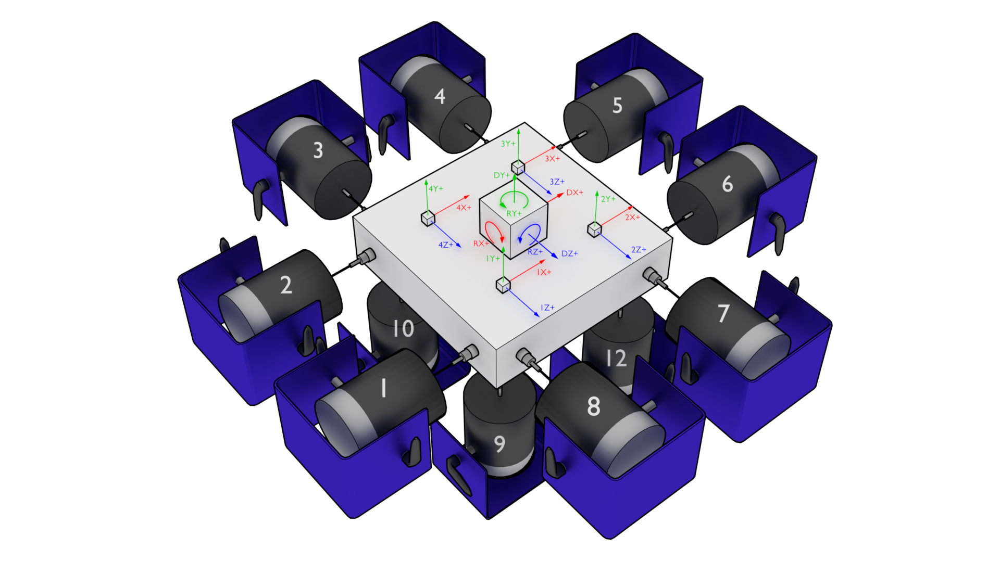
Figure 12-7. Representative 6DoF setup showing 12 shakers attached to a rigid table with four triaxial accelerometers measuring the table's response. Note that shaker 11 is occluded by the table in this figure.
To set up the output transformation, one should examine the geometry of the test setup to identify which shakers excite which motions. For example, to move the table vertically in the Y+ direction, the four bottom shakers (9, 10, 11, and 12) should excite with a positive signal (here, a positive signal is assumed to be compressive, pushing the table away from the shaker; this may vary depending on shaker wiring). For this case, the row of the output transformation matrix should contain a 1 for shaker signals 9, 10, 11, and 12, and a zero for other shakers. Similar reasoning can be used for rotations: to rotate about the positive Z+ direction, shakers 11 and 12 should push with a positive signal and shakers 9 and 10 should pull with a negative signal. Therefore, the row corresponding to this degree of freedom would have -1 for shakers 9 and 10 and +1 for 11 and 12. The full output transformation for this case can be seen in Table 12-1. This matrix transforms the 12 physical shaker signals into 6 rigid body motions of the table.
Table 12-1. Output transformation for the 6DoF test shown in Figure 12-7
| Shaker | 1 | 2 | 3 | 4 | 5 | 6 | 7 | 8 | 9 | 10 | 11 | 12 |
|---|---|---|---|---|---|---|---|---|---|---|---|---|
| DX+ | 1 | 1 | 0 | 0 | -1 | -1 | 0 | 0 | 0 | 0 | 0 | 0 |
| DY+ | 0 | 0 | 0 | 0 | 0 | 0 | 0 | 0 | 1 | 1 | 1 | 1 |
| DZ+ | 0 | 0 | 1 | 1 | 0 | 0 | -1 | -1 | 0 | 0 | 0 | 0 |
| RX+ | 0 | 0 | 0 | 0 | 0 | 0 | 0 | 0 | -1 | 1 | 1 | -1 |
| RY+ | 1 | -1 | 1 | -1 | 1 | -1 | 1 | -1 | 0 | 0 | 0 | 0 |
| RZ+ | 0 | 0 | 0 | 0 | 0 | 0 | 0 | 0 | -1 | -1 | 1 | 1 |
To generate the response transformation matrix, it is often helpful to construct the inverse transformation and then invert it to recover the response transformation matrix. As an example, we will investigate the measured signals by the accelerometers if the table is translated one unit in the X+ direction. In this case, all accelerometers pointing in the X+ direction would see a one unit signal. Therefore the column of the inverse transformation corresponding to a X+ direction motion would have 1 for all channels pointing in that direction. If the table is rotated about the Y+ direction, the 1X+, 1Z+, 2X+, and 4Z+ channels will see positive motion, and the 2Z+, 3X+, 3Z+ and 4X+ channels will see negative motions, so the rows corresponding to those channels should be populated with +1 or -1, respectively. Note that there technically should be a moment arm computed by the distance from the accelerometer to the center-line of the table in the real rotation calculation; however, if all accelerometers are equidistant, this term can be dropped, and the system identification will compensate accordingly. Table 12-2 shows the constructed inverse transformation, and Table 12-3 shows the response transform matrix that should be provided to Rattlesnake.
Table 12-2. Inverse response transformation for the 6DoF test shown in Figure 12-7
| Channel | DX+ | DY+ | DZ+ | RX+ | RY+ | RZ+ |
|---|---|---|---|---|---|---|
| 1X+ | 1 | 0 | 0 | 0 | 1 | 0 |
| 1Y+ | 0 | 1 | 0 | -1 | 0 | -1 |
| 1Z+ | 0 | 0 | 1 | 0 | 1 | 0 |
| 2X+ | 1 | 0 | 0 | 0 | 1 | 0 |
| 2Y+ | 0 | 1 | 0 | -1 | 0 | 1 |
| 2Z+ | 0 | 0 | 1 | 0 | -1 | 0 |
| 3X+ | 1 | 0 | 0 | 0 | -1 | 0 |
| 3Y+ | 0 | 1 | 0 | 1 | 0 | 1 |
| 3Z+ | 0 | 0 | 1 | 0 | -1 | 0 |
| 4X+ | 1 | 0 | 0 | 0 | -1 | 0 |
| 4Y+ | 0 | 1 | 0 | 1 | 0 | -1 |
| 4Z+ | 0 | 0 | 1 | 0 | 1 | 0 |
Table 12-3 Response transformation for the 6DoF test shown in Figure 12-7
| Channel | 1X+ | 1Y+ | 1Z+ | 2X+ | 2Y+ | 2Z+ | 3X+ | 3Y+ | 3Z+ | 4X+ | 4Y+ | 4Z+ |
|---|---|---|---|---|---|---|---|---|---|---|---|---|
| DX+ | 0.250 | 0.000 | 0.000 | 0.250 | 0.000 | 0.000 | 0.250 | 0.000 | 0.000 | 0.250 | 0.000 | 0.000 |
| DY+ | 0.000 | 0.250 | 0.000 | 0.000 | 0.250 | 0.000 | 0.000 | 0.250 | 0.000 | 0.000 | 0.250 | 0.000 |
| DZ+ | 0.000 | 0.000 | 0.250 | 0.000 | 0.000 | 0.250 | 0.000 | 0.000 | 0.250 | 0.000 | 0.000 | 0.250 |
| RX+ | 0.000 | -0.250 | 0.000 | 0.000 | -0.250 | 0.000 | 0.000 | 0.250 | 0.000 | 0.000 | 0.250 | 0.000 |
| RY+ | 0.125 | -0.000 | 0.125 | 0.125 | 0.000 | -0.125 | -0.125 | -0.000 | -0.125 | -0.125 | -0.000 | 0.125 |
| RZ+ | -0.000 | -0.250 | -0.000 | 0.000 | 0.250 | -0.000 | 0.000 | 0.250 | 0.000 | 0.000 | -0.250 | 0.000 |
Note that when a response transformation matrix is used, the vibration specification must be delivered to Rattlesnake in terms of the transformed coordinates. Note that the specification in terms of physical measurement can be transformed into the virtual quantities in the same way that the physical quantities themselves are transformed.
Transformation matrices can be used for more general coordinate system transformations. Perhaps the vibration specification has been derived from a finite element model, but the test article has instrumentation mounted obliquely to the global finite element coordinate system. A transformation matrix consisting a rotation matrices can be used to transform between coordinate systems in the model and coordinate systems in the test. Additionally, transformation matrices can be used to perform spatial filtering for example to control to specific modes of the structure . Given the modal transformation
the modal quantities can be computed from physical quantities as
In this case, the transformation matrix is simply the inverse mode shape matrix , which acts as a modal filter.
12.9. Generation of Time Histories
Rattlesnake's MIMO Random Vibration environment allows users to run custom control laws that produce CPSD matrices. Rattlesnake must then create time histories from those CPSD matrices to send to the shakers. This section will discuss some of the implementation details of this process that may be useful for users to understand.
12.9.1. Creating Time Signal Realizations from CPSD Matrices
TODO: Bibliography item.
To start the signal generation process, the signal generation routine receives an output CPSD matrix from the custom control law provided by the user. The controller uses the process described in \cite{schultz2020_input_signal_synthesis_openloop_multipleinput_multipleoutput_testing} to create a time history realization from the CPSD matrix. Note that for large control problems, it might take more than one measurement frame to perform the control problem, so there might not be an output CPSD matrix ready when the controller requires it. In that case, the previous output CPSD matrix is used.
To generate a time history realization, the square root of the CPSD matrix is taken using a SVD approach. This creates linear spectra from the power spectra.
A random process vector is computed using Gaussian real and imaginary components and .
where is the frequency spacing and is the complex variable.
A realization of the linear spectra is computed by multiplying the random process vector by the linear spectra
Taking the inverse FFT then transforms the linear spectra into time signals that can be sent to the shakers.
Note that this signal has the length of one FFT frame, which is generally not long enough to be immediately useful for vibration testing. Multiple signals can be generated by taking additional realizations of the random process vector; however, simply concatenating multiple realizations will result in discontinuous signals, as there is no guarantee that these signals will start and end at the same levels.
12.9.2. Synthesizing Continuous Time Histories using COLA
To handle the synthesis of longer signals, a COLA process is used. This process is also described in detail in \cite{schultz2020_input_signal_synthesis_openloop_multipleinput_multipleoutput_testing}. A COLA window function is specified that allows each time history realization to start and end at zero. To ensure the proper variance is maintained, the square root of the window function is applied to the signal (specified using the Window Exponent parameter in the Environment Definition tab). The overlap is specified such that the original (un-square-rooted) window function sums to one over the signal. The windowed signals are then added together to form a continuous signal.
Rattlesnake cannot realistically compute a large number of realizations all at once to create one long signal, as this would impede its ability to respond to changing test conditions, effectively making it an open-loop control system. Instead, Rattlesnake must compute this COLA operation on the fly. It does this by keeping two output signals in memory at once. It overlaps the last part of the first signal with the first part of the next signal and sends that overlapped portion of the signal to the output of the controller. Then, the previous next signal becomes the next first signal and a new realization replaces the previous next signal and the process continues.
12.9.3. Setting the Test Level
The final operation performed on the output signal is to adjust for test level. Initial versions of the Rattlesnake simply scaled the vibration specification so the controller would naturally scale its output to match the scaled specification. This was found to be lacking especially for large control problems where it could take a second or more to perform a control calculation. This combined with the COLA approach meant that it could take several seconds for a test level change to be realized, which was more than enough time to damage test hardware. Another issue with this approach was for error-based control approaches. The controller would immediately recognize that it was in error due to the change in test level and produce a modified output. However, there could be 20 or more frames of data being used in the computation of CPSD matrices that would need to be overwritten prior to the controller recovering. In practice, this meant that the controller would severely overshoot the desired level as it further and further modified the output with very little change in the response CPSD. One final issue is that it relied on the COLA process to smooth jumps between test levels. As the COLA overlap regions could be quite short, this lead to fairly severe level changes that could damage test hardware.
Recent versions of the Rattlesnake have moved away from scaling the vibration specification and started scaling the output signal directly. The acquired data is then scaled back to full level prior to control calculations taking place. For this reason, all information written to the Run Test tab in the GUI is presented as if it were at full level. Because the time histories are modified directly, it allows ramping between test levels to be implemented directly and at whatever speed is required for hardware safety. Data acquired during the ramp between test levels is generally ignored; only data acquired while the test level is constant is used for spectral computations.
13. Multiple Input/Multiple Output Transient Control
The MIMO Transient environment aims to control the vibration response of a component to a specific time history by creating output signals with the correct levels and phasing. The governing equation for MIMO Transient control is
where the frequency spectrum matrix of the responses result from some signals exciting the structure represented by transfer function matrices . In a typical transient control problem, the control system tries to compute the a signal with spectrum matrix that best reproduces the desired response with frequency spectrum .
13.1. Signal Definition
The first step in defining a transient control problem is the definition of the response signal that is desired. Rattlesnake accepts the specification in the form of a 2D array consisting of a time response of one or more channels in the test. Signals can be loaded from Numpy *.npy or *.npz files or Matlab *.mat files. Both Matlab *.mat and Numpy *.npz files should contain the following data members:
- signal: A array containing the time signal the controller will try to reproduce on the test article. For
*.npyfiles which do not have fields, the signal array is stored directly to the file. - t: A array of times corresponding to columns of the
signalfield. If not specified (either by not including atfield in a*.mator*.npzfile or by using an*.npyfile), thesignalwill be assumed to be at the sample rate defined in the controller. Iftis specified but is not at the sample rate of the controller, the signal will be linearly interpolated to be at the sample rate of the controller.
The ordering of the rows of the array defining the signal is the same order as the control channels in the Channel Table on the Data Acquisition Setup tab that are selected as control channels on the Environment Definition tab. The specification is defined in the engineering units specified by the Engineering Unit column of the channel table for the control channels.
13.2. Defining the MIMO Transient Environment in Rattlesnake
In addition to the specification, there are a number of signal processing parameters that are used by the MIMO Transient environment. These, along with the specification, are defined on the Environment Definition tab in the Rattlesnake controller on a sub-tab corresponding to a MIMO Transient environment. Figure 13-1 shows a MIMO Transient sub-tab. The following subsections describe the parameters that can be specified, as well as their effects on the analysis.
 Figure 13-1. GUI used to define a MIMO Transient environment.
Figure 13-1. GUI used to define a MIMO Transient environment.
13.2.1. Signal Parameters
The Signal Parameters section of the MIMO Transient definition sub-tab consists of the following parameters:
- Sample Rate: The global sample rate of the data acquisition system. This is set on the
Data Acquisition Setuptab, and displayed here for convenience as a read-only value. - Signal Time: The total time it will take to play the signal that the controller will attempt to reproduce on the test article.
- Signal Samples: The number of time steps in the signal that the controller will attempt to reproduce on the test article.
- Ramp Time: The time taken to ramp the signal to zero when the signal is stopped, preventing “Hard Stops” that could damage equipment if the test is aborted midway through.
13.2.2. Control Channels
The Control Channels list allows users to select the channels in the test that will be used by the environment to perform control calculations. These are the channels that will match the rows and columns of the specification file.
13.2.3. Control Parameters
The Control Parameters section of the MIMO Transient definition sub-tab consists of the following parameters:
- Input Channels: The total number of channels being measured by the Rattlesnake, including response channels and output channels. This is a computed quantity presented for convenience, so the user cannot modify it directly.
- Output Channels: The number of excitation signals being used to control the vibration response of this environment. This is a computed quantity presented for convenience, so the user cannot modify it directly.
- Control Channels: The number of response channels being used in the control. This is a computed quantity presented for convenience, so the user cannot modify it directly.
The Control Parameters section of the MIMO Transient definition sub-tab also includes functionality for loading in custom control laws. See Section 13.7. Writing a Custom Control Law for information on defining a custom transient control law.
- Control Python Script: The Python script containing a custom control law that is currently loaded into the Rattlesnake controller.
- Load: Pressing this button will bring up a file selection dialog to load in a new Python script containing a custom control law.
- Control Python Function: This selector presents the functions, generators, and classes within the loaded Python script that can be used as custom control laws.
- Control Parameters: This text box allows arbitrary input to be passed to custom control laws as a string. It is up to the control law to specify what this extra input must be and parse whatever input the user gives it.
13.2.4. Control and Drive Transforms
The Control and Drive Transforms section of the MIMO Random Vibration definition sub-tab consists of the following parameters:
- Transformation Matrices...: Selecting this button will bring up the transformation matrices dialog box, which allows the user to specify linear transformations between the physical responses and excitation signals and virtual responses and excitation signals. See Section 12.8. Using Transformation Matrices for more information.
- Transform Channels: The number of virtual control degrees of freedom after applying transformation matrices. This is a computed quantity presented for convenience, so the user cannot modify it directly.
- Transform Outputs: The number of virtual excitation devices after applying transformation matrices. This is a computed quantity presented for convenience, so the user cannot modify it directly.
Note that if Transformation matrices are defined, the number of control channels ends up being the number of rows of the Response Transformation Matrix, rather than the number of physical control channels. The number of physical control channels will be equal to the number of columns of the transformation matrix. The number of rows of the specification loaded should be equal to the number of rows in the transformation.
13.2.5. Signal Specification
The control signal is loaded and displayed on the right side of the MIMO Transient definition tab:
- Load Signal: A button that when pressed will bring up a file selection dialog to read in a specification from a Numpy
*.npzor*.npyor Matlab*.matfile. - Signal Plot: A visualization of the signals loaded into the controller.
- Signal Table: A table showing statistics of each of the signals loaded into the controller. The user can also select which signals to plot using the checkboxes in the table.
13.3. System Identification for the MIMO Transient Environment
When all environments are defined and the Initialize Environments button is pressed, Rattlesnake will proceed to the next phase of the test, which is defined on the System Identification tab.
MIMO Transient requires a system identification phase to compute the matrix used in the control calculations of equation (12.1). Unlike the MIMO Random Vibration environment, the MIMO Transient environment's system identification phase can have a number of samples per measurement frame that is not equal to the length of the signal. Control laws written for this environment must be able to handle this, either by doing a COLA scheme or interpolating the FRF. Figure 13-2 shows the GUI used to perform this phase of the test. Given the nature of the MIMO Transient environment, it may be useful to visualize impulse response functions as the system identification is proceeding.
 Figure 13-2. System identification GUI used by the MIMO Transient environment.
Figure 13-2. System identification GUI used by the MIMO Transient environment.
Rattlesnake's system identification phase will start with a noise floor check, where the data acquisition records data on all the channels without specifying an output signal. After the noise floor is computed, the system identification phase will play out the specified signals to the excitation devices, and transfer functions will be computed using the responses of the control channels to those excitation signals. Section 3.4. System Identification describes the System Identification tab and its various parameters and capabilities.
13.4. Test Predictions for the MIMO Transient Environment
Once the system identification is performed, a test prediction will be performed and results displayed on the Test Predictions tab, shown in Figure 13-3. This is meant to give the user an idea of the test feasibility. The top portion of the window displays excitation information, including peak signal levels required as well as the excitation time history that will be output. The bottom portion of the window displays the predicted responses compared to the specification as well as the TRAC between the signals. The TRAC is a metric that compares two time signals, and has a value of 1 if the signals are identical or 0 if the signals are not related.
 Figure 13-3. Test prediction GUI which gives the user some idea of the test feasibility.
Figure 13-3. Test prediction GUI which gives the user some idea of the test feasibility.
13.5. Running the MIMO Transient Environment
The MIMO Transient environment is then run on the Run Test tab of the controller.
With the data acquisition system armed, the environment can be started manually with the Start Environment button. Once running, it can be stopped manually with the Stop Environment button. With the data acquisition system armed and the environment run, the GUI looks like Figure 13-4.
 Figure 13-4. GUI for running the MIMO Transient environment.
Figure 13-4. GUI for running the MIMO Transient environment.
There are operations that can be performed when setting up and running the MIMO Transient environment, and many visualization operations as well.
13.5.1. Test Level
The MIMO Transient Environment allows scaling of the test by modifying the Signal Level selector on the Run Test tab. The Signal specifies the scaling in decibels relative to the specification level, which is 0 dB. Note that all data and visualizations on the Run Test window are scaled back to full level, so users should not be surprised if for example the signals shown in the Outputs or Responses plots do not change significantly with test level. Unlike the MIMO Random Vibration environment, the MIMO Transient environment does not allow changing test level while the environment is active.
13.5.2. Repeating a Signal
The MIMO Transient environment also has the capability to repeat a signal continuously if the Repeat Signal checkbox is checked. If this is the case, users will be required to stop the environment by clicking the Stop Environment button. If the controller is not set to repeat, the environment will stop automatically after the signal has been output one time.
13.5.3. Test Metrics and Visualizations
The MIMO Transient environment displays the output signals in the Outputs plot and the responses to those signals at the control channels in the Responses plot. The controller will identify the position of the control signal in the response signal by using a correlation, and will draw a black box around that portion of the response signal, as shown in Figure 13-4. The errors in the response channels are reported as a TRAC value between the signal measured and the specification desired.
To interrogate specific channels, the Data Display section of the Run Test can be used. The specific control channel to visualize can be selected using Control Channel selector. Pressing the Create Window button then creates the specified plot.
Some convenience operations are also included to visualize all channels. The Show All Channels button will bring up one window per control channel. Be aware that showing a large number of channels can easily overwhelm the computer with plotting operations causing the GUI to become unresponsive, so use this operations with caution. Figure 13-5 shows an example displaying all channels for a test with six control degrees of freedom.
 Figure 13-5. Visualizing individual channels' time response.
Figure 13-5. Visualizing individual channels' time response.
Further convenience operations are available in the Window Operations: section. Pressing Tile All Windows will rearrange all channel windows neatly across the screen. Pressing Close All Windows will close all open channel windows.
13.6. Output NetCDF File Structure
When Rattlesnake saves data to a netCDF file, environment-specific parameters are stored in a netCDF group with the same name as the environment name. Similar to the root netCDF structure described in Section 3.8, this group will have its own attributes, dimensions, and variables, which are described here.
13.6.1. NetCDF Dimensions
- signal_samples: The number of time samples in the specification signal provided to the MIMO Transient environment.
- specification_channels: The number of channels in the specification signal provided to the MIMO Transient environment.
- control_channels: The number of physical channels used for control. Note that this may be different from the
specification_channelsdue to the presence of a transformation matrix. - response_transformation_rows: The number of rows in the response channel transformation. This is not defined if no response transformation is used.
- response_transformation_cols: The number of columns in the response channel transformation. This is not defined if no response transformation is used.
- output_transformation_rows: The number of rows in the output transformation. This is not defined if no output transformation is used.
- output_transformation_cols: The number of columns in the output transformation. This is not defined if no output transformation is used.
13.6.2. NetCDF Attributes
- sysid_frame_size: The number of samples per measurement frame in the system identification
- sysid_averaging_type: The type of averaging used in the system identification, linear or exponential
- sysid_noise_averages: The number of measurement frames acquired for the noise floor calculation
- sysid_averages: The number of measurement frames acquired for the system identification calculation
- sysid_exponential_averaging_coefficient: The weighting coefficient used for new frames in the exponential averaging scheme
- sysid_estimator: The FRF estimator used to compute the transfer functions during the system identification
- sysid_level: The level used by the system identification in volts RMS.
- sysid_level_ramp_time: The time to ramp up to the test level when starting and ramp back to zero when stopping the system identification
- sysid_signal_type: The signal type used by the system identification
- sysid_window: The window function applied to the time data during the system identification
- sysid_overlap: The overlap fraction between measurement frames used for system identification
- sysid_burst_on: The fraction of a measurement frame that a burst is active for burst random excitation during system identification
- sysid_pretrigger: The fraction of a measurement used as a pre-trigger for burst random excitation during system identification
- sysid_burst_ramp_fraction: The fraction of a measurement frame used to ramp the burst up to full level and back to zero
- test_level_ramp_time: The time to ramp to the test level and back to zero
- control_python_script: The path to the Python script used to control the MIMO Random Vibration environment
- control_python_function: The function (or class or generator function) in the Python script used to control the MIMO Transient environment
- control_python_function_type: The type of the object used for the control law (function, generator, or class)
- control_python_function_parameters: The extra parameters passed to the control law.
13.6.3. NetCDF Variables
- control_signal: The control signal used by the MIMO Transient environment Type: 64-bit float; Dimensions:
specification_channelssignal_samples - response_transformation_matrix: The response transformation matrix. This is not defined if no response transformation is used. Type: 64-bit float; Dimensions:
response_transformation_rowsresponse_transformation_cols - output_transformation_matrix: The output transformation matrix. This is not defined if no output transformation is used. Type: 64-bit float; Dimensions:
output_transformation_rowsoutput_transformation_cols - control_channel_indices: The indices of the active control channels in the environment. Type: 32-bit int; Dimensions:
control_channels
13.6.4. Saving Control Data
In addition to time streaming, Rattlesnake's MIMO Transient environment can also save the previous control data directly to the disk by clicking the Save Current Control Data. The control data is stored in a NetCDF file similar to the time streaming data. The primary difference is that the control data is time-aligned to the specification, so users don't need to worry about extracting the signal from an a time stream and trying to align it with specification. The control data also saves out the information from the system identification, including FRF and CPSD matrices.
The two additional dimensions are:
- drive_channels: The number of drive channels active in the environment.
- fft_lines: The number of frequency lines in the spectral quantities.
There are also several additional variables to store the spectral data:
- frf_data_real: The real part of the most recently computed value for the transfer functions between the excitation signals and the control response signals. NetCDF files cannot handle complex data types so real and imaginary parts are split into two variables. Type: 64-bit float; Dimensions:
fft_linesspecification_channelsdrive_channels - frf_data_imag: The imaginary part of the most recently computed value for the transfer functions between the excitation signals and the control response signals. NetCDF files cannot handle complex data types so real and imaginary parts are split into two variables. Type: 64-bit float; Dimensions:
fft_linesspecification_channelsdrive_channels - frf_coherence: The multiple coherence of the control channels computed during the test. Type: 64-bit float; Dimensions:
fft_linesspecification_channels - response_cpsd_real: The real part of the CPSD matrix at the control channels from the system identification. NetCDF files cannot handle complex data types so real and imaginary parts are split into two variables. Type: 64-bit float; Dimensions:
fft_linesspecification_channelsspecification_channels - response_cpsd_imag: The imaginary part of the CPSD matrix at the control channels from the system identification. NetCDF files cannot handle complex data types so real and imaginary parts are split into two variables. Type: 64-bit float; Dimensions:
fft_linesspecification_channelsspecification_channels - drive_cpsd_real: The real part of the CPSD matrix at the excitation channels from the system identification. NetCDF files cannot handle complex data types so real and imaginary parts are split into two variables. Type: 64-bit float; Dimensions:
fft_linesdrive_channelsdrive_channels - drive_cpsd_imag: The imaginary part of the CPSD matrix at the excitation channels from the system identifications. NetCDF files cannot handle complex data types so real and imaginary parts are split into two variables. Type: 64-bit float; Dimensions:
fft_linesdrive_channelsdrive_channels - response_noise_cpsd_real: The real part of the CPSD matrix at the control channels during the noise floor measurement that occurred during system identification. NetCDF files cannot handle complex data types so real and imaginary parts are split into two variables. Type: 64-bit float; Dimensions:
fft_linesspecification_channelsspecification_channels - response_noise_cpsd_imag: The imaginary part of the CPSD matrix at the control channels during the noise floor measurement that occurred during system identification. NetCDF files cannot handle complex data types so real and imaginary parts are split into two variables. Type: 64-bit float; Dimensions:
fft_linesspecification_channelsspecification_channels - drive_noise_cpsd_real: The real part of the CPSD matrix at the excitation channels during the noise floor measurement that occurred during system identification. NetCDF files cannot handle complex data types so real and imaginary parts are split into two variables. Type: 64-bit float; Dimensions:
fft_linesdrive_channelsdrive_channels - drive_noise_cpsd_imag: The imaginary part of the CPSD matrix at the excitation channels during the noise floor measurement that occurred during system identification. NetCDF files cannot handle complex data types so real and imaginary parts are split into two variables. Type: 64-bit float; Dimensions:
fft_linesdrive_channelsdrive_channels - control_response: The time response of the system aligned in time to the specification. Type: 64-bit float; Dimensions:
specification_channelssignal_samples - control_drives: The drive signals aligned in time to the specification. Type: 64-bit float; Dimensions:
drive_channelssignal_samples
13.7. Writing a Custom Control Law
The flexibility of the Rattlesnake framework is highlighted by the ease in which users can implement and iterate on their own ideas. For the MIMO Transient control type, users can implement custom control laws using a custom Python function, or alternatively a generator function or class which allow state to be maintained between function calls. This section will provide instructions and examples for implementing a custom control law.
The controller will provide various data types to the control law functions which are:
- sample_rate: The sample rate of the acquisition portion of the controller; real scalar integer
- specification_signals: The target signal for the control channels; real 2D array ()
- frequency_spacing: The frequency spacing of the transfer function array; real scalar float
- transfer_function: The current estimate of the transfer function between the control responses and the output voltages; complex 3D array ()
- noise_response_cpsd: The levels and correlation of the noise floor measurement on the control channels obtained during system identification; complex 3D array ()
- noise_reference_cpsd: The levels and correlation of the noise floor measurement on the excitation channels obtained during system identification; complex 3D array ()
- sysid_response_cpsd: The levels and correlation of the control channels obtained during system identification; complex 3D array ()
- sysid_reference_cpsd: The levels and correlation of the noise floor measurement on the excitation channels obtained during system identification; complex 3D array ()
- multiple_coherence: The multiple coherence for each control channel; real 2D array ()
- frames: The number of measurement frames acquired so far, used to compute various parameters in the control law. This can be compared to
total_framesto determine if a full set of measurement frames has been acquired, or if the estimation of the various parameters could improve with continued averaging; real scalar integer - total_frames: The total number of frames used to compute the CPSD and FRF matrices; real scalar integer
- output_oversample_factor: Some hardware devices and settings within Rattlesnake require output signals from Rattlesnake to be oversampled compared to the input samples. For example, on the LAN-XI hardware, the slowest output rate is four times larger than the slowest acquisition rate. This argument tells the control law the factor by which the output returned from the controller is oversampled compared to the acquisition; real scalar integer
- extra_parameters: Extra parameters provided to the controller; string
- last_excitation_signals: The most recent output signal, which can be used for error-based control; real 2D array ()
- last_response_signals: The most recent responses to the last output signals, which can be used for error-based control; real 2D array ()
where size is the number of time samples in the control signal, is the number of frequency lines in the transfer function matrix, is the number of control channels, and is the number of output signals. Note that the values passed into the function may be defined using arbitrary variable names (e.g. transfer_function may be instead called H, or any other valid variable name); however, the order of the variables passed into each function will always be constant.
13.7.1. Defining a control law using a Python function
Python functions are the simplest approach to define a custom control law that can be used with the Rattlesnake software; however, they are limited in that a function's state is completely lost when a function returns. Still, they can be used to implement relatively complex control laws as long as no state persistence is required.
A Python function used to define a MIMO Transient control law in Rattlesnake would have the following general structure within a Python script.
# Any module imports, initialization code, or helper functions would go here
# Now we define the control law. It always receives the same arguments from the controller.
def control_law(
sample_rate,
specification_signals, # Signal to try to reproduce
frequency_spacing,
transfer_function, # Transfer Functions
noise_response_cpsd, # Noise levels and correlation
noise_reference_cpsd, # from the system identification
sysid_response_cpsd, # Response levels and correlation
sysid_reference_cpsd, # from the system identification
multiple_coherence, # Coherence from the system identification
frames, # Number of frames in the CPSD and FRF matrices
total_frames, # Total frames that could be in the CPSD and FRF matrices
output_oversample_factor, # Oversample factor to output
extra_parameters = '', # Extra parameters for the control law
last_excitation_signals = None, # Last excitation signal for drive-based control
last_response_signals = None, # Last response signal for error correction
):
# Code to perform the control would go here
# output_signal = ...
# Finally, we need to return an output signal matrix
return output_signal
Listing 13.1. General Python function structure for defining a custom Transient control law called control_law in Rattlesnake
The function must return an output_signal, which is a 2D array with size () where is the number of samples in the specification signal times the output_oversample_factor.
One example is shown to demonstrate how a Transient control law may be written.
13.7.1.1. Pseudoinverse Control
Perhaps the simplest strategy to perform MIMO Transient control is to simply invert the transfer function matrix to recover the least-squares solution of the optimal output signal from the desired responses. This example will demonstrate that approach with some additional arguments that may improve the control.
The mathematics for this control strategy are relatively simple; pre-multiply the spectra of the desired responses by the pseudoinverse () of the transfer function matrix . This calculation is performed for each frequency line.
The implementation details are a bit more complex than this formula would reveal, as the controller gives and wants returned the time signals and not the spectra. This means the FFT must be computed to transform to the frequency domain for the calculations to be performed, and the IFFT must be computed to return to the time domain. Additionally, to handle the potential for oversampling the output, the drive signal is zero-padded to up-sample the signal appropriately. We must also handle the case where the number of samples in the system identification is not the same as the number of samples in the control signal. We will finally add optional arguments that may be specified using key-value pairs separated by a colon (e.g. the rcond parameter could be specified as rcond:1e-5 to specify a singular value threshold of 10,000 in the inverse). In Python code, the above mathematics and implementation details would look like
import numpy as np # Import numpy to get access to its function
# Parse the input arguments in extra_parameters
rcond = 1e-15
zero_impulse_after = None
# Split it up into lines
for entry in extra_parameters.split('\n'):
try:
# For each entry, split the key from the value using the colon
field,value = entry.split(':')
# Strip any whitespace
field = field.strip()
# Check the field to figure out which value to assign
if field == 'rcond':
rcond = float(value)
elif field == 'zero_impulse_after':
zero_impulse_after = float(value)
else:
# Report if we cannot understand the parameter
print('Unrecognized Parameter: {:}, skipping...'.format(field))
# Compute impulse responses using the IFFT of the transfer function
# We will zero pad the IFFT to do interpolation in the frequency domain
# to match the length of the required signal
impulse_response = np.fft.irfft(transfer_function,axis=0)
# The impulse response should be going to zero at the end of the frame,
# but practically there may be some gibbs phenomenon effects that make the
# impulse response noncausal. If we zero pad, this might be wrong. We
# therefore give the use the ability to zero out this non-causal poriton of
# the impulse response.
if zero_impulse_after is not None:
# Remove noncausal portion
impulse_response_abscissa = np.arange(impulse_response.shape[0])/sample_rate
zero_indices = impulse_response_abscissa > zero_impulse_after
impulse_response[zero_indices] = 0
# Zero pad the impulse response to create a signal that is long enough for
# the specification signal
added_zeros = np.zeros((specification_signals.shape[-1]-impulse_response.shape[0],)
+ impulse_response.shape[1:])
full_impulse_response = np.concatenate((impulse_response,added_zeros),axis=0)
# Compute FRFs using the FFT from the impulse response. This is now
# interpolated such that it matches the frequency spacing of the specification
# signal
interpolated_transfer_function = np.fft.rfft(full_impulse_response,axis=0)
# Perform convolution by frequency domain multiplication
signal_fft = np.fft.rfft(specification_signals,axis=-1)
# Invert the FRF matrix using the specified rcond parameter
inverted_frf = np.linalg.pinv(interpolated_transfer_function,rcond=rcond)
# Multiply the inverted FRFs by the response spectra to get the drive spectra
drive_signals_fft = np.einsum('ijk,ki->ij',inverted_frf,signal_fft)
# Zero pad the drive FFT to oversample to the output_oversample_factor
drive_signals_fft_zero_padded = np.concatenate((drive_signals_fft[:-1],
np.zeros((drive_signals_fft[:-1].shape[0]*(output_oversample_factor-1)+1,)
+drive_signals_fft.shape[1:])),axis=0)
# Finally, take the IFFT to get the time domain signal. We need to scale
# by the output_oversample_factor due to how the IFFT is normalized.
drive_signals_oversampled = np.fft.irfft(
drive_signals_fft_zero_padded.T,axis=-1)*output_oversample_factor
return drive_signals_oversampled
Listing 13.2 Computing the pseudoinverse calculation to solve for a least-squares output spectrum
For users not familiar with Python and its numeric library numpy, the following points are clarified
- numpy is imported and assigned to the alias
np, which lets us just type innprather than the longer namenumpywhen we want to accessnumpyfunctions. - To interpolate a function in the frequency domain, we can zero-pad its time response, and to interpolate a function in the time domain, we can zero-pad its frequency response.
- The numpy module has a function
zerosto create an array of zeros and a functionconcatenateto combine two arrays together. These two functions allow us to zero-pad an array. - FFT calculations can be performed using the Fourier Transform package
fftwithinnumpy. We will be using real signals, so we userfftandirfftto do these transforms. - The numpy pseudoinverse function
pinvis stored in the linear algebra packagelinalgwithinnumpy, therefore to accesspinv, we need to callnp.linalg.pinv - The pinv can perform a pseudoinverse on "stacks" of matrices, so even though we are only calling the
pinvfunction once, it is actually performing the pseudoinverse over all frequency lines - The numpy
einsumfunction utilizes a syntax similar to Einstein Summation Notation to perform multiplication and summation over certain dimensions of the arrays.
Wrapping the above code into the function definition from Listing 13.1, the control law can be defined as
import numpy as np
def pseudoinverse_control(
sample_rate,
specification_signals, # Signal to try to reproduce
frequency_spacing,
transfer_function, # Transfer Functions
noise_response_cpsd, # Noise levels and correlation
noise_reference_cpsd, # from the system identification
sysid_response_cpsd, # Response levels and correlation
sysid_reference_cpsd, # from the system identification
multiple_coherence, # Coherence from the system identification
frames, # Number of frames in the CPSD and FRF matrices
total_frames, # Total frames that could be in the CPSD and FRF matrices
output_oversample_factor, # Oversample factor to output
extra_parameters = '', # Extra parameters for the control law
last_excitation_signals = None, # Last excitation signal for drive-based control
last_response_signals = None, # Last response signal for error correction
):
# Parse the input arguments in extra_parameters
rcond = 1e-15
zero_impulse_after = None
# Split it up into lines
for entry in extra_parameters.split('\n'):
try:
# For each entry, split the key from the value using the colon
field,value = entry.split(':')
# Strip any whitespace
field = field.strip()
# Check the field to figure out which value to assign
if field == 'rcond':
rcond = float(value)
elif field == 'zero_impulse_after':
zero_impulse_after = float(value)
else:
# Report if we cannot understand the parameter
print('Unrecognized Parameter: {:}, skipping...'.format(field))
except ValueError:
# Report if we cannot parse the line
print('Unable to Parse Line {:}, skipping...'.format(entry))
# Compute impulse responses using the IFFT of the transfer function
# We will zero pad the IFFT to do interpolation in the frequency domain
# to match the length of the required signal
impulse_response = np.fft.irfft(transfer_function,axis=0)
# The impulse response should be going to zero at the end of the frame,
# but practically there may be some gibbs phenomenon effects that make the
# impulse response noncausal. If we zero pad, this might be wrong. We
# therefore give the use the ability to zero out this non-causal poriton of
# the impulse response.
if zero_impulse_after is not None:
# Remove noncausal portion
impulse_response_abscissa = np.arange(impulse_response.shape[0])/sample_rate
zero_indices = impulse_response_abscissa > zero_impulse_after
impulse_response[zero_indices] = 0
# Zero pad the impulse response to create a signal that is long enough for
# the specification signal
added_zeros = np.zeros((specification_signals.shape[-1]-impulse_response.shape[0],)
+ impulse_response.shape[1:])
full_impulse_response = np.concatenate((impulse_response,added_zeros),axis=0)
# Compute FRFs using the FFT from the impulse response. This is now
# interpolated such that it matches the frequency spacing of the specification
# signal
interpolated_transfer_function = np.fft.rfft(full_impulse_response,axis=0)
# Perform convolution by frequency domain multiplication
signal_fft = np.fft.rfft(specification_signals,axis=-1)
# Invert the FRF matrix using the specified rcond parameter
inverted_frf = np.linalg.pinv(interpolated_transfer_function,rcond=rcond)
# Multiply the inverted FRFs by the response spectra to get the drive spectra
drive_signals_fft = np.einsum('ijk,ki->ij',inverted_frf,signal_fft)
# Zero pad the drive FFT to oversample to the output_oversample_factor
drive_signals_fft_zero_padded = np.concatenate((drive_signals_fft[:-1],
np.zeros((drive_signals_fft[:-1].shape[0]*(output_oversample_factor-1)+1,)
+drive_signals_fft.shape[1:])),axis=0)
# Finally, take the IFFT to get the time domain signal. We need to scale
# by the output_oversample_factor due to how the IFFT is normalized.
drive_signals_oversampled = np.fft.irfft(
drive_signals_fft_zero_padded.T,axis=-1)*output_oversample_factor
return drive_signals_oversampled
Listing 13.3 A pseudoinverse transient control law that can be loaded into Rattlesnake
The requirement that transient control laws are required to be able to oversample their output and may require switching between frequency and time domains mean that the Transient control laws will generally be more complex than the Random Vibration control laws. Note that these computations to oversample the output are still performed by the controller for the Random Vibration environment described in Chapter 12; however, the user does not need to handle them explicitly. In the Transient environment, the user-defined control laws are actually creating the time signals that will be sent to the exciters, so user-defined control laws must handle these computations.
13.7.2. Defining a control law using state-persistent approaches
Similarly to the MIMO Random Vibration environment, the Transient environment may also use state-persistent approaches such as generator functions or classes. This can be handy, for example, to compute the FFT of the desired response signals one time, as opposed to computing them every single control iteration, because the desired response signals generally do not change throughout a test.
13.7.2.1. Defining Control Laws with Generator Functions
The second strategy to define a control law in Rattlesnake is to use a Generator Function. A generator function is simply a function that maintains its internal state between function calls. Listing 13.4 shows the Pseudoinverse Transient control law implemented as a generator function.
import numpy as np
def pseudoinverse_control_generator():
signal_fft = None
inverted_frf = None
drive_signals_oversampled = None
while True:
(sample_rate,
specification_signals, # Signal to try to reproduce
frequency_spacing,
transfer_function, # Transfer Functions
noise_response_cpsd, # Noise levels and correlation
noise_reference_cpsd, # from the system identification
sysid_response_cpsd, # Response levels and correlation
sysid_reference_cpsd, # from the system identification
multiple_coherence, # Coherence from the system identification
frames, # Number of frames in the CPSD and FRF matrices
total_frames, # Total frames that could be in the CPSD and FRF matrices
output_oversample_factor, # Oversample factor to output
extra_parameters, # Extra parameters for the control law
last_excitation_signals, # Last excitation signal for drive-based control
last_response_signals, # Last response signal for error correction
) = yield drive_signals_oversampled
if signal_fft is None:
# Compute the FFT of the spec if it hasn't been done yet
signal_fft = np.fft.rfft(specification_signals).T
# Get a tolerance if specified
rcond = 1e-15
zero_impulse_after = None
for entry in extra_parameters.split('\n'):
field,value = entry.split(':')
field = field.strip()
if field == 'rcond':
rcond = float(value)
elif field == 'zero_impulse_after':
zero_impulse_after = float(value)
else:
print('Unrecognized Parameter: {:}'.format(field))
if inverted_frf is None:
# Compute impulse responses
impulse_response = np.fft.irfft(transfer_function,axis=0)
if zero_impulse_after is not None:
# Remove noncausal portion
impulse_response_abscissa = np.arange(impulse_response.shape[0])/sample_rate
zero_indices = impulse_response_abscissa > zero_impulse_after
impulse_response[zero_indices] = 0
# Zero pad the impulse response to create a signal that is long enough
added_zeros = np.zeros((specification_signals.shape[-1]-impulse_response.shape[0],) + impulse_response.shape[1:])
full_impulse_response = np.concatenate((impulse_response,added_zeros),axis=0)
# Compute FRFs
interpolated_transfer_function = np.fft.rfft(full_impulse_response,axis=0)
# Perform convolution in frequency domain
inverted_frf = np.linalg.pinv(interpolated_transfer_function,rcond=rcond)
drive_signals_fft = np.einsum('ijk,ki->ij',inverted_frf,signal_fft)
# Zero pad the FFT to oversample
drive_signals_fft_zero_padded = np.concatenate((drive_signals_fft[:-1],
np.zeros((drive_signals_fft[:-1].shape[0]*(output_oversample_factor-1)+1,)+drive_signals_fft.shape[1:])),axis=0)
drive_signals_oversampled = np.fft.irfft(drive_signals_fft_zero_padded.T,axis=-1)*output_oversample_factor
Listing 13.4 A Pseudoinverse Transient control law defined using a Python generator function to allow for state persistence
Note that the generator function itself is not called with any arguments, as the initial function call simply starts up the generator. Also note that there is no return statement in a generator function, only a yield statement. When a program requests the next value from a generator, the generator code proceeds until it hits a yield statement, at which time it pauses and waits for the next value to be requested. During this pause, all internal data is maintained inside the generator function. The yield statement also accepts new data into the generator function, so this is where the same arguments used to define a control law using a Python function are passed in to the generator control law. Therefore, by creating a while loop inside a generator function, the generator can be called infinitely many times to deliver data to the controller.
To implement the Pseudoinverse control as shown in Listing 13.4 several parameters are initialized as None, which enables the generator to check whether or not they have been computed yet. If they have, then there is no need to compute them again.
13.7.2.2. Defining Control Laws using Classes
A final way to implement more complex control laws is using a Python class. This approach allows for the near infinite flexibility of Python's object-oriented programming at the expense of more complex syntax. Users not familiar with Python's object-oriented programming paradigms are encouraged to learn more about the topic prior to reading this section.
A class in Python is effectively a container that can have functions and properties stored inside of it, so it provides a good way to encapsulate all the parameters and helper functions associated with a given control law into one place. A class allows for arbitrary properties to be stored within it, so arbitrary data can be made persistent between function calls.
For the Rattlesnake implementation of a control law, the class must have at a minimum three functions defined. These are the class constructor __init__ that is called when the class is instantiated, a system_id_update function that is called upon completion of the System Identification portion of the controller, and a control function that actually computes the output \ac{CPSD} matrix. A general class structure is shown below
# Any module imports or constants would go here
class ControlLawClass:
def __init__(self,
sample_rate,
specification_signals, # Signal to try to reproduce
output_oversample_factor, # Oversample factor to output
extra_parameters, # Extra parameters for the control law
frequency_spacing,
transfer_function, # Transfer Functions
noise_response_cpsd, # Noise levels and correlation
noise_reference_cpsd, # from the system identification
sysid_response_cpsd, # Response levels and correlation
sysid_reference_cpsd, # from the system identification
multiple_coherence, # Coherence from the system identification
frames, # Number of frames in the CPSD and FRF matrices
total_frames, # Total frames that could be in the CPSD and FRF matrices
last_excitation_signals = None, # Last excitation signal for drive-based control
last_response_signals = None, # Last response signal for error correction
):
# Code to initialize the control law would go here
def system_id_update(self,
frequency_spacing,
transfer_function, # Transfer Functions
noise_response_cpsd, # Noise levels and correlation
noise_reference_cpsd, # from the system identification
sysid_response_cpsd, # Response levels and correlation
sysid_reference_cpsd, # from the system identification
multiple_coherence, # Coherence from the system identification
frames, # Number of frames in the CPSD and FRF matrices
total_frames, # Total frames that could be in the CPSD and FRF matrices
):
# Code to update the control law with system identification information would go here
def control(self,
last_excitation_signals = None, # Last excitation signal for drive-based control
last_response_signals = None, # Last response signal for error correction
) -> np.ndarray:
# Code to perform the actual control operations would go here
# Any helper functions or properties that belong with the class would go here
Listing 13.5 Structure for a class defining a transient control law in Rattlesnake
The class's __init__ constructor function is called whenever a class is instantiated (e.g. control_law_object = ControlLawClass(sample_rate,specification_signals,output_oversample_factor,...)). Note that the the constructor function accepts as arguments not only the data available at the time (e.g. the specification and any extra control parameters) but also any parameters that will eventually exist. This is because it needs to be able to seamlessly transition in case the control law is changed during control when there is already a transfer function, last signal, etc.
The system_id_function is called after the system identification is complete, so inside this function is where all setup calculations that require a transfer function would go. In the case of a typical pseudoinverse control law, the system identification will not change as the test proceeds, so the inversion can take place in this function.
The control function is then the function that actually performs the control operations to compute the output time history using the last response or output time histories in addition to any data that had been stored inside the class.
The class implementation of the pseudoinverse control is shown in Listing 13.6.
import numpy as np
class pseudoinverse_control_class:
def __init__(self,
sample_rate,
specification_signals, # Signal to try to reproduce
output_oversample_factor, # Oversample factor to output
extra_parameters, # Extra parameters for the control law
frequency_spacing,
transfer_function, # Transfer Functions
noise_response_cpsd, # Noise levels and correlation
noise_reference_cpsd, # from the system identification
sysid_response_cpsd, # Response levels and correlation
sysid_reference_cpsd, # from the system identification
multiple_coherence, # Coherence from the system identification
frames, # Number of frames in the CPSD and FRF matrices
total_frames, # Total frames that could be in the CPSD and FRF matrices
last_excitation_signals = None, # Last excitation signal for drive-based control
last_response_signals = None, # Last response signal for error correction
):
self.rcond = 1e-15
self.zero_impulse_after = None
for entry in extra_parameters.split('\n'):
field,value = entry.split(':')
field = field.strip()
if field == 'rcond':
self.rcond = float(value)
elif field == 'zero_impulse_after':
self.zero_impulse_after = float(value)
else:
print('Unrecognized Parameter: {:}'.format(field))
self.sample_rate = sample_rate
self.specification_signals = specification_signals
self.signal_fft = np.fft.rfft(specification_signals).T
if self.transfer_function is not None:
self.system_id_update(
frequency_spacing,
transfer_function, # Transfer Functions
noise_response_cpsd, # Noise levels and correlation
noise_reference_cpsd, # from the system identification
sysid_response_cpsd, # Response levels and correlation
sysid_reference_cpsd, # from the system identification
multiple_coherence, # Coherence from the system identification
frames, # Number of frames in the CPSD and FRF matrices
total_frames, # Total frames that could be in the CPSD and FRF matrices
)
def system_id_update(self,
frequency_spacing,
transfer_function, # Transfer Functions
noise_response_cpsd, # Noise levels and correlation
noise_reference_cpsd, # from the system identification
sysid_response_cpsd, # Response levels and correlation
sysid_reference_cpsd, # from the system identification
multiple_coherence, # Coherence from the system identification
frames, # Number of frames in the CPSD and FRF matrices
total_frames, # Total frames that could be in the CPSD and FRF matrices
):
# Compute impulse responses
impulse_response = np.fft.irfft(transfer_function,axis=0)
if self.zero_impulse_after is not None:
# Remove noncausal portion
impulse_response_abscissa = np.arange(impulse_response.shape[0])/self.sample_rate
zero_indices = impulse_response_abscissa > self.zero_impulse_after
impulse_response[zero_indices] = 0
# Zero pad the impulse response to create a signal that is long enough
added_zeros = np.zeros((self.specification_signals.shape[-1]-impulse_response.shape[0],)
+ impulse_response.shape[1:])
full_impulse_response = np.concatenate((impulse_response,added_zeros),axis=0)
# Compute FRFs
interpolated_transfer_function = np.fft.rfft(full_impulse_response,axis=0)
# Perform convolution in frequency domain
self.inverted_frf = np.linalg.pinv(interpolated_transfer_function,rcond=self.rcond)
drive_signals_fft = np.einsum('ijk,ki->ij',self.inverted_frf,self.signal_fft)
# Zero pad the FFT to oversample
drive_signals_fft_zero_padded = np.concatenate((drive_signals_fft[:-1],
np.zeros((drive_signals_fft[:-1].shape[0]*(self.output_oversample_factor-1)+1,)
+drive_signals_fft.shape[1:])),axis=0)
self.drive_signals_oversampled = np.fft.irfft(
drive_signals_fft_zero_padded.T,axis=-1)*self.output_oversample_factor
def control(self,
last_excitation_signals = None, # Last excitation signal for drive-based control
last_response_signals = None, # Last response signal for error correction
) -> np.ndarray:
# We could modify the output signal based on new data that we obtained
# Otherwise just output the same
return self.drive_signals_oversampled
Listing 13.6 Class implementation of the buzz test approach
Note that the number of lines of code for a class implementation of the pseudoinverse control approach is not significantly more than the simpler function implementation, therefore users should not immediately discard the class-based approach as too difficult to implement in favor of the simpler function implementation. Each approach has its merits and limitations, so it is up to the user to decide the best approach for their control law.
13.8. Using Transformation Matrices
Transformation matrices in the Transient environment behave identically to the the Random Vibration environment. See Section 12.8 for more information.
13.9. Identifying the Signal in the Acquired Data
As the environment may be started or stopped arbitrarily during a given test, the Transient environment will need to identify where the signal that was desired actually occurs in the acquired signals.
The Transient environment keeps a buffer twice the length of the desired control signal, so at some point during the acquisition, the entire signal should be within the buffer.
To identify the position of the signal in the buffer, a correlation is performed between the signal that was output to the exciters and the acquired output data. Correlation is performed on the output signal as it is generally read directly back into the controller and does not depend on an accurate prediction of the part's response. The index of the maximum value of the correlation determines the sample closest to the starting point of the signal.
A second, sub-sample alignment is then performed using phases from the FFT of the signal truncated to the starting point and signal length compared to the phases of the specified output. The slope of the phase change vs frequency line is proportional to the sub-sample signal shift.
With the sample and subsample shift of the signal computed for the output signal, the same sample and subsample shift can be can be applied to the signal from the control gauges. This portion of the control channel signals can then be compared directly to the desired signal to judge how well the environment is controlling.
14. Time History Generator
Rattlesnake's Time History Generator environment provides the ability to simply stream a user-created signal to an output device. While this is a relatively simple environment, it can be used to create simple shocks or run open-loop excitation devices such as a centrifuge with voltage input being proportional to speed. There is no system identification, and therefore no test predictions that are made for this environment.
14.1. Signal Definition
The first step to defining a Time History Generator environment is to create the signal that will be output. Rattlesnake accepts the signal in the form of a 2D array consisting of an output sample for each excitation signal for each time step. Signals can be loaded from Numpy *.npy or *.npz files or Matlab *.mat files. For *.npy files, the stored array defines the signal directly, and it is assumed that the signal uses the sample rate specified in Rattlesnake. Note that if a hardware device over-samples the output (e.g. LAN-XI, see Section 5 LAN-XI Devices), it is the over-sampled output sample rate that is used rather than the acquisition sample rate. Matlab *.mat and Numpy *.npz files allow the users to specify a time vector as well as a signal, and should contain the following data members:
- signal: A array containing the signal for each exciter for each time step in
t. - t: A array of times corresponding to the samples in the
signalmatrix.
where is the number of exciters and is the number of samples in the signal. If the time vector specified by t does not match the sample rate specified in Rattlesnake, the signal data will be linearly interpolated to provide the correct sample rate. If t is not provided in the *.mat or *.npz file, Rattlesnake will treat signal as if it were defined at the output sample rate of the controller.
The ordering of the signals in the signal file is the same as the ordering of the excitation devices in the channel table that are active in the current environment. The first signal will be played to the first excitation device, and so on.
Note that the environment will play the signal as-is, so it is up to the user to implement graceful startup and shutdown at the start and end of the signal if the test configuration requires it.
14.2. Defining the Time History Generator Environment in Rattlesnake
In addition to the signal that will be played to the excitation devices, there is only one parameter that needs to be defined in the Time History Generator. Figure 14.1 shows a Time History Generator sub-tab in the Environment Definition tab of Rattlesnake.

Figure 14-1. GUI defining the Time History Generation environment
Pressing the Load Signal button brings up a file dialog from which the signal file can be loaded. Once the file is loaded, it is displayed in the main plot window. Signal statistics are also displayed in the adjacent table. The checkbox in the Show? column of the table can be used to show or hide individual signals. The signal name in the Signal column is constructed from the node number and direction in the channel table. The Max and RMS value of the signal is also displayed.
At the bottom of the window, there are various computed parameters, and one user defined parameter.
- Sample Rate: The global sample rate of the data acquisition system. This is set on the
Data Acquisition Setuptab, and displayed here for convenience as a read-only value. - Output Sample Rate: This is the output sample rate, which might be different than
Sample Rateif the hardware over-samples the output device. This is set on theData Acquisition Setuptab, and displayed here for convenience as a read-only value. - Output Channels: The number of excitation signals being used by this environment. This is a computed quantity presented for convenience, so the user cannot modify it directly.
- Signal Samples: The number of samples in the loaded signal. This is a computed quantity presented for convenience, so the use cannot modify it directly.
- Signal Time: The amount of time it will take to play the signal. This is a computed quantity presented for convenience, so the user cannot modify it directly.
- Cancel Rampdown Time: The amount of time the environment will take to ramp to zero if the environment is stopped prior to the signal being completely played.
14.3. Running the Time History Generator Environment
The Time History Generator environment is then run on the Run Test tab of the controller. With the data acquisition system armed, the GUI looks like Figure 14.2.

Figure 14-2. GUI for running the Time History Generator Environment
Two parameters can be defined prior to starting the environment.
- Signal Level: Allows the user to scale the signal prior to output by a number of dB.
- Repeat Signal: Checking this checkbox makes the signal repeat once started until the environment is stopped manually. Alternatively, the environment will stop automatically once the signal has been played.
Similar to other environments, there are Start Environment and Stop Environment buttons to control when the environment occurs. If the Stop Environment button is clicked, the signal will continue to play for the specified Cancel Rampdown Time while the environment ramps the signal level to zero.
14.4. Output NetCDF File Structure
When Rattlesnake saves data to a netCDF file, environment-specific parameters are stored in a netCDF group with the same name as the environment name. Similar to the root netCDF structure described in Section 3.8 Rattlesnake Output Files, this group will have its own attributes, dimensions, and variables, which are described here.
14.4.2. NetCDF Dimensions
- output_channels: The number of output signals used by the environment
- signal_samples: The number of samples in the output signals
14.4.2. NetCDF Attributes
- cancel_rampdown_time: The time to ramp to zero if the environment is stopped.
14.4.3. NetCDF Variables
- output_signal: The signals that are played to the excitation devices Type: 64-bit float; Dimensions:
output_channelssignal_samples
15. Modal Testing
Rattlesnake's most recent
15.1. Defining the Modal Testing Environment in Rattlesnake
15.1.1. Sampling Parameters
15.1.2. System ID Parameters
15.1.3. Triggering
15.1.4. Channel Information
15.1.5. Channel Selections
15.1.6. Signal Generator
15.2. Running a Modal Test
15.2.1. Acquisition
15.2.2. Averaging
15.2.3. Windows
15.2.3.1. Window Types
15.2.3.2. Time Window
15.2.3.3. Windowed Time Window
15.2.3.4. Spectrum Window
15.2.3.5. Autospectrum Window
15.2.3.6. FRF Window
15.2.3.7. Coherence Window
15.2.3.8. FRF Coherence Window
15.2.3.9. Reciprocity Window
15.2.4. Degree of Freedom Override
15.3. Output NetCDF File Structure
15.3.1. NetCDF Dimensions
15.3.2. NetCDF Attributes
15.3.3. NetCDF Variables
15.3.4. Saving Modal Data
16. Combined Environments
Rattlesnake offers
17. Implementing New Environment Types
WARNING: This chapter
Overview of Environments
Overview of Environment Interactions with the Controller
Writing an AbstractMetadata Subclass
Designing the Envionment-Specific GUI
Environment Definition GUI
System Identification and Test Predictions GUI
Environment Run GUI
Writing an AbstractUI Subclass
Abstract Methods in the AbstractUI class
Command Map for the UI
Writing an AbstractEnvironment Subclass
Connecting the Environment to the Controller
Appendix A. Introduction to Example Problems
There is a significant
Appendix B. Example Problem using NI cDAQ Hardware and the NII DAQmx Interface
This appendix will
Modal Testing with an Impact Hammer
Data Acquisition Setup
Environment Setup
Test Profile
Run Test
Analyzing Modal Data
Modal Testing with a Modal Shaker
Modal Testing with a Modal Shaker
Data Acquisition Settings
Environment Definition for Pseudorandom Excitation
Test Profile
Run Test
Other Shaker Excitation Types
Analyzing Modal Shaker Data
Running a Vibration Test with Rattlesnake
Constructing Vibration Specifications
Setting up the Shakers and Channel Table
Setting up the Random Vibration Test
Running a Random Vibration Test
Setting up the Transient Vibration Test
Running a Transient Test
Summary
Appendix C. Synthetic Example Problem with a SDynPy System
This example problem
Creating a SDynPy System and Specifications for Random and Transient Vibration Tests
Importing Relevant Python Packages
Creating the Demonstration Objects
Selecting Degrees of Freedom
Simulating an Environment
Running a Synthetic Modal Test
Data Acquisition Setup
Environment Definition for Pseudorandom Excitation
Test Profile
Run Test
Other Shaker Excitation Types
Analyzing Modal Data
Running a Synthetic Vibration Test with Rattlesnake
Setting up the Channel Table
Setting up the Random Vibration Test
Running a Random Vibration Test
Setting up the Transient Vibration Test
Running a Transient Test
Summary
Appendix D. Synthetic Example Problem using State Space Metrics
One final example will
Creating a State Space Model
Creating the State Space Model
Running a Synthetic Vibration Test
Data Acquisition Setup
Environment Setup and Running a Synthetic Test
Summary
Contributors
- Daniel P. Rohe
- Ryan Schultz
- Norman Hunter
Development
Documentation
Update the online documentation as follows:
# change to the project directory
cd rattlesnake/rattlesnake-vibration-controller
# activate the virtual environment
source .venv/bin/activate # for bash shell
source .venv/bin/activate.csh # for c shell
source .venv/bin/activate.fish # for fish shell
.\.venv\Scripts\activate # for powershell
# change to the mdbook directory
cd rattlesnake/rattlesnake-vibration-controller/documentation/mdbook
# update the source markdown (.md) files as necessary in the
# rattlesnake/rattlesnake-vibration-controller/documentation/mdbook/src
# folder
# build the mdbook build, which build the target to the
# rattlesnake/rattlesnake-vibration-controller/documentation/mdbook/book
# folder
mdbook build
# visualize the mdbook in a local web browser
mdbook serve --open
Bibliography
To create the bibliography, use mdbook-bib, a popular and well-documented third-party plugin.
Cargo, the Rust programming language's package manager, is a prerequisite to get the plugin.
- Install the plugin via Cargo:
cargo install mdbook-bib
- Prepare your bibliography file:
The mdbook-bib plugin uses the standard BibLaTeX (.bib) format for references.
Create a .bib file (e.g., bibliography.bib) in the root of the documentation/mdbook/src/ directory. Populate the file with references, e.g.,
@book{knuth1986computer,
title={The Computer Science of TeX and Metafont: An Inaugural Lecture},
author={Knuth, Donald E},
year={1986},
publisher={American Mathematical Society}
}
- Configure
book.toml
Tell mdBook to use the mdbook-bib preprocessor and specify the path to the
bibliography file in the book.toml configuration file. Add the following section
to the book.toml:
[preprocessor.bib]
# The name of your .bib file, relative to the src directory
bibliography = "bibliography.bib"
# Optional: Set the title for the automatically generated bibliography chapter
title = "Bibliography"
# Optional: Render the entire bibliography ("all") or only cited entries ("cited")
render-bib = "cited"
- Add in-text citations
In a markdown file, use {{ and }} to surround the
citation key, # cite key, for example:
{{ #cite knuth1986computer }}
- Build the book
Run the mdbook build command. The preprocessor will automatically run, finding the
citations, generating the citation numbering, and creating a new chapter containing the
formatted bibliography based on the entries in the .bib file.
mdbook build
Line Numbering
In the python code blocks, line number is not present by default. To create
line numbering, use cargo to install the mdbook-numbering package:
cargo install mdbook-numbering
Configure book.toml to include
# https://crates.io/crates/mdbook-numbering
# requires mdbook 0.5.0 and above.
# Add the preprocessor to the build pipeline
[preprocessor.numbering]
# Optional: Configuration for code block line numbering
[preprocessor.numbering.code]
enable = true
Setting enable = true under [preprocessor.numbering.code] specifically turns
on line numbering for all code blocks.
Once configured, any standard Markdown code block, including one for Python, will automatically have line numbers when the book is built.
Warning: As of 2025-12-05, the mdbook-numbering crate did not work well with the older version (0.4.52) of mdbook, which is required since the newer version of mdbook (0.5.0) breaks cmdrun functionality. For now, do not include line numbering, but leave these breadcrumbs for possible future inclusion.
LaTeX Reformatting
In the process of translating the original SAND report from LaTeX into mdbooks, the following were helpful:
# Alt+Cmd+F (Replace)
# regex ON
\\inlineCode\{(.+?)\}
`$1`